| VIVID それはまるで恋の様に私を犯し蝕んだ (猫舌連盟) | |
| 時邑亜希 | |
| 時邑亜希 (2018) | |
偏愛伝綺小説（百合×伝綺）
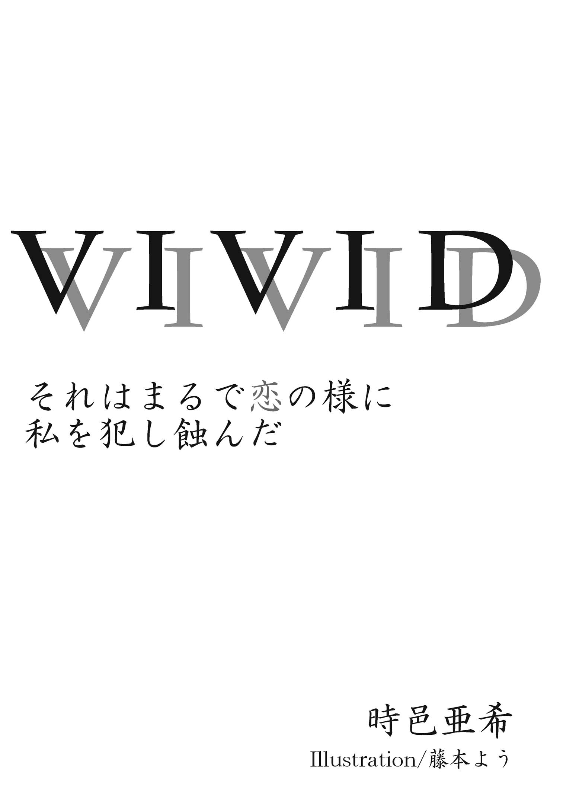
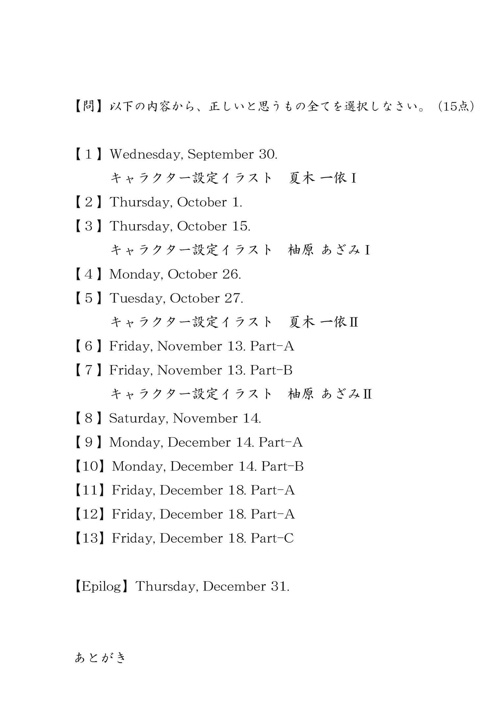
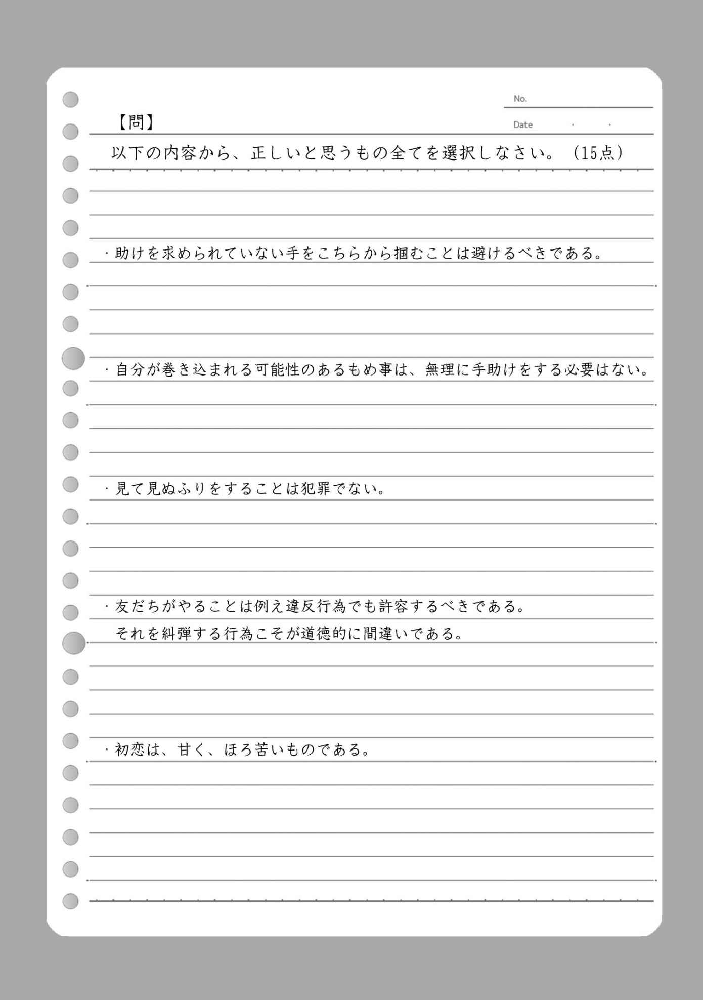
【１】Wednesday, September 30.
ふと、違和感を感じた。
視線の先、朝の通学電車内。やや混みの車内は、押しつぶされるまではないにしてもそれなりに周囲との密着を強要される環境。いつも通りの日常風景。
そんな中、いつも通りでは無い空気を私に伝えてくるのは、私と同じ地味な濃紺のダブルのブレザーにグレーのプリーツスカートを着た女子高生に、体を密着される 形で窓際に立つ男。だぼっとした薄手のモッズコートから見える手足から察するに痩せ形で色白。今時珍しい肩を少し越える長髪をくくり、黒縁のやぼったい眼鏡と長い前髪で顔を隠した、お世辞にも洗練されているとは言い難い有様。正直ダサい。あぁ、でも首元にチラりと見える鎖骨はなかなか。......なかなかって何だ。えっと、うん、まぁ、そう、なかなかだ。
でも、何かおかしい。そりゃ、痴漢冤罪を逃れる為に必死に女子高生から遠ざかろうとする姿は滑稽で、見る人にとっては面白可笑しいかもしれない。だが生憎と私には他人の不幸を嬉々として眺める性癖は無い。おかしい、というのは不可解である、違和感があるという意味でのおかしいだ。
一度感じてしまった違和感は喉に引っかかった魚の小骨の様にもどかしく気になるもので。より事態を観測する為、私はコンプレックスでもある眼光鋭い目を凝らす。男の表情は見えないがあの密着具合、ちょっと当たってるというレベルではない。女子高生は笑いながら友だちと目配せをして、スマートフォンに夢中の様子。一緒に立つ友だちのあの表情。電車が揺れるのに合わせて更に壁に押しつけられる男。
あぁ、もしかして、そういうこと？ それはそれで由々しき事態だが、今の私が感じている違和感はそういう現象的なものでは無く、もっとあの男の在り様に起因するもので。細い手足、あの鎖骨、白い肌、長い髪、......あれ？ もしかして―――
「ちょっと、もう！ 止めて下さい！」
私が回答にたどり着きかけたとき、怒りのこもったそんな声が発せられた。しまった、あんまりにもこの男の存在自体がおかしいものだから、そっちの問題を先送りにしてしまった。これは良くない。続けて繰り出される声はもちろんテンプレ通り。
「この人痴漢です！」
何だ何だとざわめく車内。程なく電車は駅のホームに到着。扉は開かれ、乗客がどわっと外に雪崩出る。女子高生に手を捕まれた眼鏡の男もホームへ連れ出されて行く。周囲の人間が何事かと野次馬を決め込むも直接関与する者はいない。同じ車内に乗り合わせて実際にその現場を見ていても、知らぬ存ぜぬ興味が無いとばかりに横を過ぎ去り、乗り換えの電車にかけ乗り、面倒ごとはご免だと隣の車両に乗り移っていく。
状況は説明をするまでもなく明らかだ。痴漢だと訴えた女子高生は涙目に男を指差し、それを友だちが可哀相にと慰める。そしてもう一人の友だちがこっちです駅員さんと大声で叫ぶ。対して男はなで肩を更にがっくりと落とし、眼鏡と前髪で顔は見えないが恐らく落ち込んでいるか、絶望感に駆られているか......そんなところだろう。
混み合った電車から解放されたことで男の姿が改めて露わになる。足細いなぁ。手も骨が浮き出てる。ちゃんと食べているのだろうかこの人は。男がヤレヤレと頭をかく。ずれ落ちた眼鏡を少し直し、体の前に回していたメッセンジャーバッグを背中に戻す。
その一連の流れを見て、私の眼は確信を得る。うん、では。
正しいこと をしましょう。
「あの、私同じ電車に乗ってましたけど、その人多分わざとじゃないと思います」
すっと男と女子高生の間に割って入り、そんなことを言い出した私に周囲が一瞬呆気にとられる。しかもその姿が訴えを起こしている女子高生たちと同じ制服なのだからなかなかのインパクトだろう。
「ちょっとアンタ何―――げ、メデューサ!? 」
「その人、ずっと両手でドア横の手すり掴んでましたよ」
突然現れたイレギュラーである私を引っ込めようと、自称被害者の友人その一が腕を掴もうとするがそれを難なくかわす。そんな付け爪だらけの手に掴まる程私は安くない。お返しに触るなとちょっと睨んでやると、「ひっ」と短い悲鳴と共に手を引っ込めやがった。私は別にそんなつもりは無いのだが、どうにも私の目力はキツ過ぎるらしく、慣れない人は蛇に睨まれた蛙宜しく固まってしまう。その為学校内で付けられた蔑称は『メデューサ』。毛先に行くにつれて癖の強くなるこの長い黒髪もその蔑称を広めるのに一役買っているのだろう。私は見覚えが無い生徒もこうして私の蔑称を知っているのだから、なかなか有名になってしまったものだ。
「手以外だってあるじゃねーか」
どこかから知らない男の声があがる。ヤレヤレ、私はこの手の輩が一番嫌いだ。
「今、発言した人はどなたですか？ その意見を正しくお聞きしたいのでちゃんとこの場に出て、顔を見せて、正しくお話して頂けませんか？」
少し大きな声で啖呵を切り、さっきの目力の三倍くらいの圧力で睨み付ける。皆一様に口をつぐみ、視線をそらし、ぱらぱらと立ち去り始める。うん、まぁこうなるか。
そんな周囲の状況に慌て始める女子高生三人組。まさかこの状況で大衆の味方がいなくなるなんて予想外の展開だろう。では、そろそろ答え合わせといきましょうか。
「な、何なのよアンタ！ この男とグル!? 」
「グルでも何でも構いませんけど......あと、この人女性ですよ」
え、って周囲が固まる。我関せずで立ち去ろうとしていた人たちも含めて皆眼鏡の男（それとも女？）に視線が集中。その視線に流石に耐えられなくなったのか、当人自ら眼鏡を外し、髪をほどき、長い前髪をシャツのポケットに付けてあったヘアピンで留める。
そうして表れたのは、目の下に残る不健康そうな隈。リップも塗られていない乾いた唇。当然ノーメイク。顔色も悪い。この人、全体的に不健康だ。ただ、美形である。一世代前のロックバンドやファッションモデルなんかにでもいそうな線の細い退廃的な美人と言えば分かりよいだろうか？ 今は髪型やノーメイクということもあり、見方によっては男性にも見えないこともないが......
「顔隠してても分かる人には分かっちゃうのかしら。因みにどこで分かった？」
声で判明。この人は紛れもなく女性だ。
「手とか、仕草とか、ちょっと違和感を感じたので。あと、バッグ後ろに回したときに肩紐が胸に当たった様に見えました」
女の私から見てもドキッとさせられる様な妙な色気。二十代半ばくらいだろうか。万人が万人に美人と評価されることはないが、何故か目を離せないそんな不思議な魅力。あと、表情が何というかその、エロいって言えばいいのか、駄目な感じ。人を堕落の海に沈めてしまいそうな雰囲気。兎に角あんまり関わってはいけない感じが半端ない。やばい、なんだコレ、変な汗かいてきた。直視が辛い。今直ぐ逃げたいんですけど。
「なるほど、貴女は」
身長差から、少しかがんで彼女が私の眼をじっと見てくる。思わず顔をそらす。ぐぅ、止めて、これ以上顔近づけないで！ 動悸がおかしい。ドキドキが止まらない。どう考えてもこの人ちょっとおかしい。
「......すごくいい眼をしているのね」
「え、えぇ。視力には自信がありますから」
ふふっと、優しく笑う。あ、なんだ笑うと可愛いなこの人って、違うそうじゃないってどうしちゃったの私!?
「そういうことにしておきましょう。改めてありがとうございます。おかげで助かりました。さて。えっと、ごめんなさいね。満員電車だったから貴女の体に当たって、それで怖い思いをさせてしまったみたいで。許して貰えないかしら？」
「い、いえ......別に」
痴漢と叫んでいた女子高生三人に彼女が謝罪する。女子高生たちは相手がやぼったい男ではなく、女で、それも一種独特な魅力を持った女性だったことに呆気にとられてか声が上ずっている。......分かるよ、多分私と同じ状態だ。変だよねこの不整脈。
相手の動揺を見て気を良くしたのか、不健康そうな女が女子高生に何か耳打ちする。周囲には何を言っているか聞こえない。ただ、耳打ちされた子の顔がみるみるうちに真っ赤に。正面から見てニッコリ笑いかけ、女子高生はもう鼻血が出るんじゃないかってくらいに更に温度上昇。いったい何を囁けばああなるのだろうか？
「ちょっとごめんよー、道空けてー、警察が通るよー......よいしょっと」
ホームの人だかりを抜けて、一人くたびれたスーツのオジサンが表れる。手に警察手帳。駅員より先に警察が到着とはお務めご苦労様なことだ。たまたま乗り合わせていたとかそういうのだろうか。
「あー、オジサン一応刑事なんだけど......駅員来ないみたいだし、よかったら話聞くよ。どうかした？」
「ご、誤解......みたいなんで大丈夫です！ あのっ、遅刻するんで私たちもう行きます！」
慌てるようにして女子高生三人が立ち去る。どうしてそんなに慌てて逃げようとしているのか。その理由に感づいている私は、正しく真実を告げるべく声をあげようとする。
しかし、それは痴漢冤罪の当事者によって遮られた。それは言わなくていいよ。声にこそ出さないが口の動きと、雰囲気で伝わる。
「あらま行っちゃった。シャイだね最近のお嬢さんは。......で、オタクもそれでいいの？」
「えぇ。誤解は解けたみたいですから何も言うことはありません」
遅れて到着した駅員に刑事さんと当事者が説明をして程なく解散となった。私としては納得がいかない結末である。
これでは、正しくない 。
◆
「どうして黙ってたんですか！ さっきの子たち、わざとですよ。私見てたんですから。笑いながら貴女に体押しつけてたんですよ!? 」
ホームを下りた改札横の人が少ないエアポットで私は彼女に吠える。あのままホームで話し始めるわけにはいかないと判断したのか、彼女に連れられてきた形だ。このまま解放しては刑事に訴え出しかねないと思われたのだろう。その読みはおおむね正しい。
「憶測で人を疑ってはいけないわ。それに、第三者からの視覚的証言のみで罪を断定するのは危険だから......あの場で口にしてもどうにかなるモノでもないと思うし」
「私、目には自信があるんです。違和感とか、そういうの見つけるのが上手いんです。だからお姉さんのことだって分かりました」
「貴女は、正義感が強いのね。おかげで本当に助かったわ、ありがとう。でも、私もせっかくことなきを得たのだから、これ以上事を荒立ててやっかいごとに巻き込まれるのは勘弁したいかなって」
それが普通の反応か。さっきのホームにいた野次馬たちと同じだ。降りかかる火の粉は払いのけて鎮火するけど、それが自分に降りかからないのなら見て見ぬふりをする。見逃したその火の粉がまた別の誰かを焼き払うことになってもだ。ただ、私はそういうのは我慢ならない。
「正義感とか、そういうのじゃないです。単なる自己満足だってことくらい知ってます。......分かりました、もういいです。お姉さんも気を付けて下さい。せっかく美人なんですからそんな男の人みたいな格好やめれば痴漢冤罪なんて巻き込まれないはずですから」
これ以上何を言っても無駄だろう。そう判断して私は会話を切り上げる。最初に感じた違和感の正体も分かったのだ。これ以上関わる必要も無い。未だ違和感は全て拭い切れていないけど、これだけ妖しい魅力を持つ人だ。秘密の一つや二つあるのだろう。
「ありがと、今後は気を付けるわ。私どうにも運がないみたいで、電車に乗るとかなりの確率で痴漢に遭うのよね。だからわざと顔隠して男みたいた格好で乗ってみたけど......むしろ逆効果だったわね。もうちょっと別の方法を考えてみるわ」
確かに、この人の退廃的な魅力は痴漢にとっては大好物だろう。何だか痴漢行為すらも見逃してくれそうな、そういう淫靡な優しさを感じるのだ。
「そんなに痴漢に遭うなら女性専用車両に乗ればいいじゃないですか」
「私、女性の痴漢にも狙われたことあるのよね」
......それはまぁ、ご愁傷様です。
その後、お礼にお茶でもと誘われたけど急がないと遅刻するのでと断る。ならせめて連絡先をとせがまれたがそれも遠慮した。人が燃えることを気にしない人とこれ以上会話をしたって楽しくない。彼女としては何かお礼がしたかっただけなのだろうけど、そういうつもりで助けたのではないし、その行為に甘えるのは私としては正しくない。
「なら、もしも何か困ったことがあったら連絡して。今度は私が貴女の力になるわ」
そう言って渡された名刺にはこう書かれていた。
厚生労働省 国民健康センター
メンタルヘルスケアセラピスト
柚原 あざみ
要するにカウンセラ。貰った名刺と、目の隈が印象的な美人の顔を見比べて再度思う。こんな退廃的なカウンセラ、どう考えても駄目だろ。患者と一緒に地獄の底まで落ちてきかねないぞ。
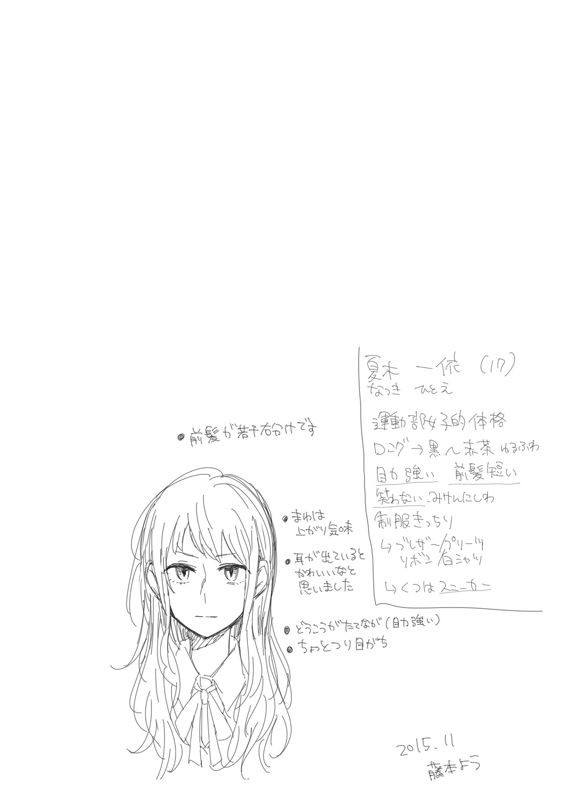
【２】Thursday, October 1.
先月、私の通う高校の六階窓から生徒が一人飛び降りた。どうして屋上じゃないのかと言うと、今時の屋上は安全と、非行を防止する為に施錠されているからだ。ドラマや漫画で屋上にたむろしている様子をよく見るが、あれは現在不可能な行為である。まさにフィクションならではの夢のある青春情景。
そんな青春の舞台装置を若人から取り上げた結果、日本の晩婚化は進み、出生率は低下の一途を辿っている。や、多分これはあんまり出生率に影響ないだろうけど。
因みに私は屋上に入れたところで誰かに告白しようとは思わないし、ましてや誰かに告白される予定も無い。
さて、飛び降り話の続き。飛び降りは物理的には難しい行為だろうか？ 否、簡単だ。飛び降りを実行するに至る精神状態の構築はとんでもなく難しい行為だと思うが、飛んで、降りる、という行為自体はこの世の中至る所で可能な非常にイージーな行為である。つまり、規制は飛び降り自殺という行為の抑制自体には直接影響が無いと言える。
とはいえ、学校という閉鎖された一種の異境空間。青春の迷い子による「ここから飛び降りて死んでやるんだからー！」というファッション自殺未遂は未然に防げるわけだから、完全に無意味と断定するのは早計か。
何はともあれ、九月の中頃、三年の湯嶋 澄佳 は飛び降りた。明け方、朝日が登る時間に合わせて自由落下し、そのまま天に召されたらしい。落下したのに昇天とはこれ如何に。否、自殺なのだから地獄へ......止めよう、不謹慎だ。
原因は誰の目にも明らかで、虐めを苦にした自殺で間違い無いと噂されている。一部では有名な生徒だった。何が原因で虐めの対象になっていたのかは私は知らない。有名なのは湯嶋澄佳は虐められている という事実だけ。誰も関わらないし、助けない。同級生も、先輩も、後輩も、教師も、親も、誰も彼も。終いにはスクールカウンセラとして学校に半常駐していたカウンセラの男にまで手を出されたと聞く。本当に救いようがない状況だ。
そして、私もその一翼を担っている。これは私の罪だ。言訳は......するつもりはない。でも、私はそのことをまだ誰にも話していない。......気持ち悪い。吐きそうだ。
痴漢冤罪騒動の翌日。現在全校集会の真っ最中。自殺のあったあの日から一ヶ月経たないのにもう累計三度目だ。全校生徒が何とかギリギリ入れる大きさの講堂に詰め込まれ、生活指導の教師からのありがたいお言葉を賜る謎の儀式。これ、意味あるのだろうか。
前回はゲストに刑事が呼ばれ、状況の説明をして集会に華を添えてくれていたが、今回は今のところ特別ゲストは現れない。実に平和で、中身の無い、無意味な集会だこと。
動きがあったのは全校集会終了間近の時間。ぼんやり見詰めた壇上、何か視界に違和感を感じる。そういえば周囲が妙に騒がしい。原因は壇上に上がった一人の女性。色素の薄い髪に、華奢な体。お世辞にも健康そうとは言い難い目元の隈を隠すことも無い薄化粧の女。......げ。
「えー、ご紹介にあずかりました厚生労働省から参りました柚原あざみです。基本的に日中は第二進路指導室に居ますので、何かお話がしたいなって人は気軽に遊びに来て下さいね。一応私の携帯電話番号と、メール、それからＬＩＮＥ・ＩＤを公開します。もしも直接お話しするのが苦手な子や、二人だけでのお話がしたい子は遠慮無く連絡を下さい」
生徒のざわめきの理由は二つ。一つは、先のカウンセラが湯嶋澄佳の自殺に関わる不祥事を働いたというのに、もう次のカウンセラが赴任してきたという事実に。
そしてもう一つは、時折男子から発せられる奇声から想像出来る。優しい年上女性カウンセラ（それもちょっと危険なタイプの美人）が赴任してきたことに対する歓喜故のものだろう。女の私ですらくらっときそうになったのだから、この柚原という女カウンセラの魅力は強烈だ。
「あ、それからもう一つ。昨日、朝の電車内でのトラブルを助けてくれた女の子がここの制服を着ていました。大きな目と、ちょっと癖のある長い髪をした、可愛らしく、正義感ある女の子です！ お話ししたいこともあるので、後で第二進路指導室に来て下さいね」
そう言って広い講堂内を見回し、私と視線が合う方向でさりげなくウィンクを決める柚原女史。......うわぁ、めんどくさい。
【３】Thursday, October 15.
それから二週間。特に柚原あざみが迎えに来ることも無かったので名乗り出ず、実に平穏な日常を過ごした。
ただ、柚原あざみの人気には正直気味の悪さを覚える毎日である。猫も杓子も柚原先生、あざみちゃん、柚センセとメロメロだ。前のカウンセラもそのスマートな容姿から一部の女子には人気だったらしいが、今回はその比じゃ無い。男子はもとより、女子もすっかり傾倒している。あの不健康の塊にしか見えない隈女にだ。確かに独特の色気を持った容姿だし、その物腰も余裕があって背伸びをしたい盛りの高校生には魅力的なんだろう。
でも、それにしたって人心掌握が早過ぎやしないだろうか？ おかげで第二進路指導室は常に人が入り浸り、他愛の無い雑談から、真剣な悩み相談、そして思春期の甘酸っぱい相談事まで引っ切り無しと聞く。直接出向く勇気の無い子にはしばらくはＬＩＮＥでやり取りをした後に個別面談～という感じで臨機応変にフォローしているらしい。見た目と反して随分と優秀なスクールカウンセラだこと。不祥事の補填の為に厚生労働省も虎の子を派遣してきたということだろうか？
さて。ご指名があった私だが、出来るだけ柚原女史とは鉢合わせにならない行動を取ったことが功を奏したのか、今のところ見つかってはいない。これだけ人気物になった彼女に私が関わることは正直マイナス要素しか生まない。そんなこと考えなくたって直ぐ分かる。この高校内における私の地位は、そういう位置付けにあるのだ。
そして今日も私へ、自らの立場を再認識させる復習問題が出題された。
問題。二限から三限への休み時間、お手洗いから戻ると教室がもぬけの殻になっていました。さて、皆はどこへいったのでしょう。尚、予定では次は教室で数学Ⅱである。
１．移動教室の為、私がお手洗いに行っている間に皆移動してしまった。
２．移動教室の為、私がいないと見るや皆急いで移動してしまった。
３．実は昨日の時点で時間割変更が決まっていたが、誰も私に伝えなかった。
４．夏木 一依 はクラス内で無視をされている。
答え、全て正解。言訳も何も、これが日常だ。こうなると私にはどこで授業が行われるのか知る術は無い。黒板に書かれていればいいが、今日は運悪くそういった教師による書き置きも無い。前に探し回ったこともあるが広い高校の敷地内、なかなか発見できるものでは無い。これはサボり、確定である。授業は正しく受けるべきものだ。こんなの許されない。間違った行いは断罪せねばならない。罰を、与えなければ。あぁ、気持ち悪い。
吐きそうだ。
これを鎮めるには贖罪を。
キチキチキチと。
刃がスリットから引き出される。
薄いそれを。
私は左手首に添えて。
「何をやってるの？ 授業、始まってしまうわよ？」
廊下側の窓から声がして、ぴたりと肌に押し当てた刃を止める。件のカウンセラ、柚原あざみの声だ。
「......別に、何でもありません」
「移動教室かしら？ どこに行けばいいのか分からなくなっちゃった？」
私は何も答えない。ただそっと刃を戻し、ペンケースへしまう。
「お久しぶりね、夏木一依さん。全校集会のときに呼びかけたのに来てくれないんだもの。探しちゃったわ」
細いパンツに、ちょっと着崩した白いワイシャツ。上には緩いロングカーディガンと、如何にも優しいカウンセラの先生といった出で立ち。それでも今日も目の下には隈。これは寝不足とかじゃ無くてこういう顔立ちなのだろう。そして、正直直視できないこの妖艶さ。......普通じゃ無い。
「それはどうも。何か御用ですか、柚原先生」
「えぇ。赴任最初の日にそう言っていたでしょ？ 貴女のこと探す為に色んな人にお話を聞いていたら余計に気になることも増えちゃって。よかったら第二進路指導室に来ない？ お茶と、少しだけならお菓子もあるわ」
「授業、ありますから」
サボりは、良くない。どこでやっているのか分からないが、探して、遅れてでも行かなければ。職員室で聞けばきっと誰か知っているだろうし......
「私から先生には伝えておくわ。どうしても私のお仕事を手伝って貰いたくて、夏木さんには無理をお願いして手伝って貰いましたって。公欠みたいな物かしら。それでは駄目？」
「それではサボりの口実にしかなりません。不正、ですよ」
そっか、と柚原女史は困り顔。そんなイカサマするくらいなら大人しく授業ボイコットした方が幾分ましだ。それに、正直あまりこの人に関わりたくない。存在自体に違和感というのか、見ていて落ち着かない気持ちになる。心の平穏が保てない。
「夏木さんは、正しい理由が欲しいのね。なら」
柚原女史が一度目を閉じて、愛想のいい優しい微笑みをしまい込む。そしてもう一度目を開き、薄い唇の口角をつり上げ、その顔に退廃的な微笑みを浮かべてこう言うのだ。
「湯嶋澄佳さんの自殺原因について、貴女の知っていることを教えて貰え下さい。これはこの高校の意向とは関係の無い、厚生労働省からの公務です。一緒に、正しいことをしませんか？ 」
この女、どこまで分かっていて言っているのだろうか。もしかすると私の罪も全て理解しているのかも知れない。だとすれば、この言葉は私への糾弾の意味も含まれているわけか。まったく、カウンセラなんて酷い嘘だ。そんな顏して、そんなこと言うヤツ、まともなわけない。目は口程物を言うとはよく言ったものだ。この女の目はこう言っている。
「貴女の欲求を満たしてあげます」って。
この女、悪魔の類いだ。
◆
「......で、何が聞きたいんです？ 湯嶋さんを私が突き落としたっていう噂についてですか？」
第二進路指導室に入って直ぐ、部屋の中央に鎮座する応接セットのソファに座る。元は長机とパイプ椅子、後は書類用のスチール棚くらいしか無い部屋のはずだが、今ではすっかり柚原女史の居城と化している様で、ソファだけではなくお茶を入れるポットや食器類もそろっている。城主は現在お茶の準備の真っ最中。
「え、何それ？ そんな噂あるの？」
「ありますよ。夏木一依ならやりかねない。虐めなんて虐められている方が弱くて正しく無いからだ、とか言って突き落としそうだって」
凄い理屈だが、私を客観的に評価すると確かにそのくらいの暴言は吐きそうだ。や、流石にそんなこと言わないけど。
「言わない......わよね？」
「言いませんし、私が直接突き落とした訳でもありません」
お茶の準備が出来たのか柚原女史も私の前に座り、マグカップに入れたお茶を手渡してくれる。香りから紅茶の類いだと判明。ティーバッグじゃない紅茶ってよく考えたら初めてかもしれない。生憎と、私の財政状況はあまり芳しくないのだ。
「あ、お砂糖かミルクいる？ レモンは流石に無いんだけど」
私がカップを抱えてのぞき込んでるものだから、ストレートでは飲めないタイプだと思ったらしい。む、何だか子ども扱いされた気分だ。よし、物の試しだしそのまま飲んでみよう。
「......ん、美味しい」
思わず言葉が出てしまう。なんだ、紅茶って案外美味しいんだ。珈琲は時々飲むけど、紅茶はあまり経験が無いもので、苦手意識があったのだ。
「よかった。いつでも飲みに来ていいからね」
私の零れ出た感想を聞いて、嬉しそうに笑う。まぁ、これを飲む為なら時々来てもいいかもしれない。でも、その前にハッキリさせておかなければならないことがある。
「それは私が虐められている可哀想な生徒だから、またここに逃げてきてもいいよっていう意味ですか？」
我ながらなんて天邪鬼な口の利き方だろうか。でも、そう言わずにはいられなかった。同情はごめんだ。今の私の状況は、私自身が蒔いた種によってなるべくしてなっただけだ。それをあたかも間違いの様に扱われることは......困る。気持ち悪い。
「今の状況を......どうにかしたいとは思わない？ 何でもいいのよ。些細なことでも、夏木さんの個人的な希望でも、本当に何でも。もしその希望がこうやってお茶をご馳走することならそれでも構わないわ」
柚原女史が私を見る。長い前髪に隠されがちな彼女の瞳には私がどう映っているのだろうか？
比較的校則が緩いうちの学内において、私の姿は逆の意味で目立っている。スカート丈は基準通り。皆緩めがちなリボンタイもキッチリ締めて。目にかからない長さで切られた前髪も、癖毛が目立つ長い黒髪も、ノーメイクの顔も、全てがキッチリ校則基準内。唯一の特徴はコンプレックスでもあるちょっと吊り目がちな目か。別に誰も睨んでないのだが、小さい頃から睨んでるとか、生意気だとか言われたものだ。
「得にはありません。なるべくしてなっているだけですし、私に落ち度があることも自覚しています。でも、それをどうこうする気はありません。そんなことより、湯嶋先輩の話ですよね？」
自分の状況をそんなこと と流した私に、心底悲しそうな目を向けてくる。そんな目をされても困る。私は現状が妥当な、安定した状態だという認識でいるのだ。下手に波風立てたいわけじゃない。郷に入れば郷に従え？ 冗談じゃ無い。そんなの、周りも皆やってるから貴女もやってみなさいと勧められたドラッグに手を出しているのと一緒じゃ無いか。
「そう、ね。その話はまた折りを見て。湯嶋さんのお話をしましょうか。湯嶋さんとは知り合いだったの？」
「回りくどいことは止めましょうよ。私の噂を色々聞いたんなら、どういうことがあったのか知ってるんですよね？」
「......えぇ。湯嶋さんを虐めていたグループに夏木さんが怪我をさせた、と言うことは聞いています。学校側はそれを隠したいみたいだけど」
「隠したい理由も知っているんですか？」
「虐めの主犯格が理事長の甥っ子さんだから。他にも、グループには市議会議員の娘さんもいるのね」
「らしいですね。おかげさまで私は前科一犯として記録されることはありませんでしたけど」
私を訴えれば自分の娘の悪事が知れ渡る。選挙活動に悪影響がある。そんな大人の理由から子どもたちの悪事は無かったことにされた。私による傷害も、彼らによる陰湿な虐めも。
「ほとんど面識が無いのに、夏木さんは湯嶋さんが虐められている現場を目撃して、殴りかかったって聞いてるけど」
「大方間違いは無いです。中庭で泥水みたいな噴水の中に突き飛ばされて、顔を沈められているのところを通りかかったので。口頭で注意したら、まぁ、冷静なお話が出来ない人たちだったので」
「三年生男子二人が救急車で搬送後入院。他男女五人が骨折出血その他色々で通院......夏木さん何か格闘技とかやってるの？ この入院した橋元大輝っていう三年生、空手部の主将よね」
取り出したファイルを見ながら柚原女史が唸る。事件のあらましでも書いてあるのだろうか。
夏直前の話だ。私はそのまま一ヶ月の謹慎を言い渡されたが、夏休み突入でペナルティ無しに均しい。
「少し、体の動かし方を教えて貰ったことがあるだけです。一時期、施設にいたとき私に生きていく為のイロハを教えてくれた恩人がいて、その人が教えてくれました。正しいことをしたかったら強くありなさいって。体も、心も、何もかも。そうして、その手の届く限り、掴んだ手を離さないだけの力を身に付けなさいって。そうしないと後できっと後悔するから」
「夏木さんが成績枠の特待生でこの高校に入学しているのもその方の影響かしら？」
「はい。勉強も教えて貰いました。あのままだったら私、ぬるま湯の中で本当に気が触れて死んでいたのだと思います」
「素敵な方だったのね。よかったらお名前、教えて貰えないかしら？」
「浅海、と名乗られていました。あまり長い間一緒にいたわけでは無かったのでそれ以上は知りません」
「アサミ......もしかして浅い海と書いて浅海？」
驚いた。まさか一発で漢字を当ててくるなんて。この人、エスパーの類いだろうか。それともその手元のファイルにはそこまで事細かに私の情報が記載されている？
「......あぁ、違うわよ。ここにはそんなこと書いてないわ。これは湯嶋さんの経緯をまとめてある程度よ」
やっぱりエスパーじゃんか。
「浅海、合ってます。もしかして知り合いですか？」
「そっか。多分私の知ってる浅海さんとは違うと思うのだけど、ちょっと考え方が似てるから。彼女は浅海学園という場所の出身でね。今はもう無いけど、そこの出身者は『掴んだ手を離さない』的なことを信条としてるみたいで。きっと、その関係の方なのかなって」
「そうですか。あまり自分のことを話さない、悲しい感じの人だったので。でも少なくとも、私は浅海さんに手を掴んでもらえたおかげでここにいますから。私も出来るだけその考えに賛同して生きていくだけです」
「そうね、素敵なことだと思うわ」
湯嶋澄佳を助けたのも、最初はその一環だ。でも、途中で手を離してしまった。酷い裏切り。最低だ。気持ち悪い。
「......話がそれましたすみません。続きどうぞ」
急に声のトーンが落ちた私を気にしつつも、ええ、と頷いて柚原女史が続ける。
「その事件の後、湯嶋さんとお話ししたことは？」
「警察にも話しましたけど、九月の登校時にお礼を言われました。あと、別の日に一度一緒にお昼ご飯を食べて、突然嘔吐したから保健室に連れて行ったくらいです」
話をしたのは、これでおしまい。これは嘘じゃ無い。
「飛び降りた日、夏木さんの机の中に湯嶋さんからのハンカチがあったって聞いたけど」
「もどしたときに私のハンカチで拭いてあげたからそのお礼だそうです。これも警察に提出済みですよ」
気持ち悪い。目眩がする。吐きそうだ。じっとしていられない。呼吸が荒くなる。立ち上がろうか。叫びだそうか。突然この目の前の女に掴みかかって、その胡乱な目をくり出して、華奢な体を殴りつけて、蠱惑的な鎖骨に舌を這わせたら......少しはましになるだろうか。
「お茶、入れ直しましょうか。今度は何がいい？ 紅茶も緑茶も珈琲も、何でもあるわよ」
「......甘いのがいいです」
「あぁ、じゃあココアにしよう。この前もらったちょっといいヤツがあるのよ」
今、私はどんな目をしていたのだろうか。何をしようとしていたのだろうか。それを、この人はどんな目で見ていたのだろうか。まともじゃ無い。それだけは確かだ。
「別に取って食べようって訳じゃ無いんだから、そんなに心配しなくてもいいわよ」
「......どうしてそんなこと言うんですか？」
「だって夏木さん、泣きそうな目で私を見てくるんだもの。私は全面的に夏木さんの味方よ？」
「湯嶋先輩の自殺の原因が私でもそう言えますか？」
「湯嶋先輩の自殺は夏木さんのせいでは無いわ」
この人は、どこまで知っていてこんなことを言うのだろうか。全面的に味方？ そんなの、あり得ない。親にすら疎まれるのだ。本当の私を知ればきっとこの人も。私と、目を合わせなくなるんだ。
「はいココア。熱いから気を付けてね」
「......湯嶋先輩の自殺理由、私のせいじゃないっていう根拠は何ですか？」
「虐めが女子主導のものから男子主導になって、性的暴行にも発展していったのは夏木さんが介入したからじゃないわ。前任のスクールカウンセラだった井ノ口 が脅して暴行したことだってそう。夏木さんの介入が無かったとしても結果はきっと同じこと。ちょっとだけ早いか遅いかの問題。それどころかもっと悲惨な結果もあり得たかもしれない」
虐められて、性的な暴行を受けて、裏切られて、自殺したんだ。これ以上に悲惨な結果なんてあるのだろうか。
「でも、私がいなければ湯嶋先輩はもう少し長生きできたってことですよね」
「その場合は、誰一人彼女を助けようとすることも無く、一人苦しんで絶望の中で死んでいったのでしょうね」
本当にそうだろうか。一度助けられて、それから再度叩き落とされた方が絶望が深いのではないだろうか。私はそれに荷担したのだ。だから、あんなに心が強かった湯嶋先輩も自殺という選択肢を選んでしまったのだ。
「湯嶋さんの選択には、夏木さんの後悔は関係ない。これだけは真実よ。私のことは男装して電車に乗って痴漢冤罪をくらう情けない、信用できない大人だって思ってくれても構わないけど、それだけは信じてくれると嬉しいな」
対面に座る柚原女史の目を視る。じっと、眼を凝らして。半分前髪で隠れた隈の酷い目を。その瞳に映る私を。凝視する。
「信じてくれた？」
......気持ち悪くない。だから、この人は多分、本当にそう思っている......のだろう。なら何か別の自殺理由に心当たりがある？
「先生の言葉を全部鵜呑みにするわけじゃありません。でも、今は嘘を言ってるとは思えません」
私がこう断言するのにはちゃんとした理由がある。私、夏木一依は人の嘘が視える 。視覚的にどうこう分かるのでは無いが、感覚的にそれを察知できるのだ。具体的に言えば車酔いに似た感覚。兎に角気持ち悪い。電車内での出来事の様に、ぱっと見ただけでは微かな違和感レベルでしか感じることは出来ないが、こうして相手の目を視て、その瞳に映る自分の姿を捕らえれば大方嘘が誠が判別が付く。
それは何も他人だけでなく、私自身の行動にも同じことが当てはまる。つまり私は、嘘を吐いたり、社会規範に対して嘘となる違反行為を行ったりすると、気分が悪くなり最悪目眩で倒れたり、嘔吐したりと何らかのペナルティを負うことになるのだ。
こんな私を見て、周囲は私に『メデューサ』と蔑称を付けた。目を見て相手を硬直させ、嘘を吐いた者や違反行為を行う者の罪を糾弾する偽善者。大衆の敵。悪魔の所行。
「夏木さんにそう言ってもらえると嬉しいわ」
この人は、どこまでそのことを知っているのだろうか。学内の噂を聞いて、警察からの調書にも目を通しているのであれば大方私の状態は理解しているのだろう。それなのに私の対面に座って、目を合わせてくる。この人の真意は何だろうか？
恐らく湯嶋澄佳に関しては私に聞くまでもなくこの人の方が詳しい。なら、どうしてあんな誘い文句を使ってまで私をおびき出そうとしたのだろう。私を、もう一度あそこへ送る為か。
「先生も、私を発達障害の子どもだって思いますか？」
いつか親に連れていかれた病院でそう診断された。今のままでは普通の集団生活は無理です。何か特別な、そういった環境でなければって。その時点で父であった人から既に見放されていた私は、厄介払いにそうした施設に送られた。そこは嘘と欺瞞に満ちた大人たちで塗り固められた地獄だった。
ただ、そこで偶然にも浅海さんに会えたことは幸運だった。これまでの一生で、唯一と言っても過言では無いくらいの私の人生でのラッキーな出来事だ。
そこから逃げ出す為に必死の思いで勉強して、学力特待生に対する学費免除及び生活費補助制度があるこの学校へ入学したのだ。今更この妖しいスクールカウンセラに余計なことを言われては困る。
「安心して。程度の違いはあるかもしれないけどそういうのは思春期に皆経験するものよ。確かに夏木さんのはちょっと度が過ぎてるから大変かも知れないけど......そうね、あえて言うなら強迫神経症のすっごいヤツみたいな認識かしら。要するに精神的な潔癖症的な症状？」
今度は柚原女史が私の目をじっと見てくる。嘘を吐いていないよというアピールなのだろうか。顔が近い。私からも柚原女史の瞳がよく見える。よく見たら瞳が赤い。髪は染めているのか色が薄いと思ったが、この人本当に色素が薄いのかもしれない。肌だってともすれば血管が見えてしまいそうな白さだし......
「ん？ どうかした？ 私の鎖骨そんなに気になる？」
慌てて顔を反らしあの明後日の方向を見る。危ない。どうにも私はこの人の鎖骨がものすごく好みらしい。あんまりぼんやり見つめているとついつい目が行ってしまう。
「食べても肉にならない体質でね。お肉があんまり好きじゃないから余計に骨が目立っちゃって。夏木さんは......良い体してるわね。足とかすごい速そう」
「正しいことを貫くには強くないと実現できませんから。学力も、体力も、精神も」
そう、だ。負けてられないのだ。自分のやりたいことをやり通したかったら、周囲からぐうの音が出ないだけの実力を身に付けるしかない。学年トップクラスの成績を取っていれば学費は免除。暴力的な面で最強を示せば嫌がらせの数は激減した。だから、ここを卒業するまでの後一年半。耐えきれば私の勝ち。私が正しかったと証明できる。
「うん、考え方も健全だ。なら、その眼とも上手く折り合いを付けていけるでしょ」
「......これが何なのか知ってるんですか？」
「細かいことは分からないわ。でも、それは貴女にしか無い才能よ。一部では異能 なんて言い方をするの」
「異常者の能力？」
「いいえ、人とは異なる才能 の略よ。この社会は人と違う才能を持った人を排斥する傾向にあるけど、それを持つ人がちゃんと己を律して、その才能が有用なものだって示してあげれば、世間は貴女の味方になってくれるはずよ。それまで、私でよければそのお手伝いをさせて欲しいのだけれど......どうかしら？」
優しく、笑う。こんな顏久しく誰かにされた覚えが無い。小さい頃、私が余計なことを言う前、母親にあやして貰っているとき以来じゃないだろうか。
「柚原先生は......なんか胡散臭いですね」
「うさんくさ......え、何それ？ 私今割といいこと言ってたんだけどなぁ」
照れのあまり私がそっぽを向いてそう言うと、目の前の美人はがっくり肩を落とし、トホホとココアを啜った。うん、そのくらいの情けない感じがいい。あんまり格好つけられるとこっちのペースが乱れる。
「まぁあんまり深く考えずにいつでもここにいらっしゃい。お茶飲んで、ゆっくりお話しして。後はその眼のコントロールについて考えていきましょう」
「......コントロールなんて出来るんですか？」
「えぇ。あれ？ 気付いてなかったんだ。夏木さんなら分かるのかなって思ってたのに......やっぱりタイプが違うとそこまで敏感に見えるわけじゃないのか」
予想外だったみたいで一人ぶつぶつ言い出す。私が怪訝な顔をしていると、あぁごめんと謝り、こう付け加えた。
「私も異能持ちなのよ。だから私と夏木さん、マイノリティ同士相性はいいと思うんだけどな」
そう言って蠱惑的な表情で笑うカウンセラ。やっぱりこの女、悪魔で間違いない。
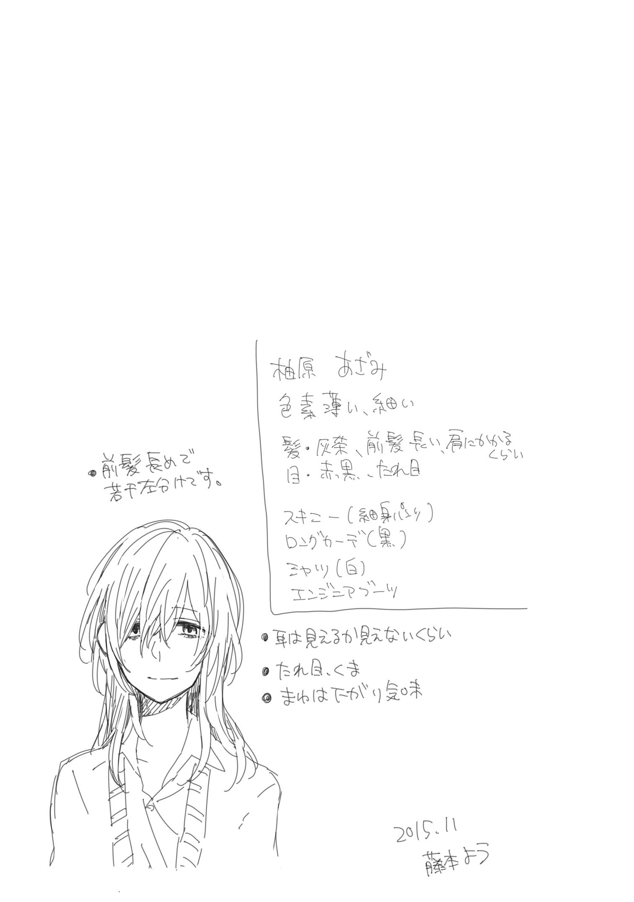
【４】Monday, October 26.
お疲れ様でしたとナースステーションに声をかけてから建物を出る。十月の夜九時。そろそろ制服のブレザーだけでは夜は寒くなってきた。ただ、今セータを着てしまうと日中はちょっと暑いのでもう少し我慢である。
放課後のアルバイト帰り。特待生扱いで授業料その他諸々免除を受けてるとはいえ、日々の生活にお金は必要である。親であった人から多少のお金は振り込まれるが、正直それでは心許ない。高校卒業後のこともあるし、こうしてアルバイトに勤しんでいるわけだ。
現在の勤め先は住んでいるアパートから割と近い総合病院での清掃員。元々高校から少し離れた安い地区でアパートを借りていたこともあって高校よりも病院の方が近い。同じ高校の人間に遭遇することが少ないのも利点だが、何よりもバカ正直にキッチリ綺麗にすれば評価されるここでの仕事は私向きである。少し前まで院長のお孫さんが同じ様に高校生アルバイトとして働いていたとかで、テスト期間等に配慮したシフト組をして貰えることも魅力だ。
建物を出てアパートへ帰る道すがら、仕事中ＯＦＦにしていた携帯電話に電源を入れる。数秒の起動画面の後、メールの着信が一件と画面が告げる。差出人は柚原あざみ。本文内容は『明日のお菓子はこれです！』と一言。クリームたっぷり、黄金色の生地が美しいロールケーキの写真付。あ、私これ知ってる。この前病院の休憩室で見てたテレビで紹介してたヤツだ。堂島ロールだったか......やばい、食べたい。
実はあの日あの後、嫌々携帯番号とメールアドレスを交換させられた。最初当然の様に「ＬＩＮＥは？」と聞かれたので、持っている携帯を見せると必死に笑いをこらえやがった。悪いか、今時ぱかぱかケータイで。メール機能すらほとんど使わない私にとってはスマートフォンなんて無用の長物なのだ。
私の携帯番号を聞き出して何に利用するのかと思ったら、柚原女史はこうやって定期的に写真付メールを送ってくる。最初に送られてきたメールに添付されていた写真はサイズが大きく開けなかった為、
『添付ファイルが大き過ぎて開けませんと表示されてます』
と返したら、
『解像度wwwwwサイズwwww制限wwwwwお腹痛いwwww』
......本当に失礼極まりない。
添付写真は大抵お茶やお菓子。要は餌で釣って、第二進路指導室へおびき寄せようとしているらしい。あれから十日ほど経つが、まだ一度も行っていない。別に柚原女史が嫌いだとか、カウンセラと話をするのが気持ち悪いとか、誰かと鉢合わせるのが嫌だとか、そういうのでは無いのだけれど......今ここで直ぐ行ってしまうと、まるであの隈女の手の内で転がされている様な気がして、どうしても躊躇ってしまうのだ。
まぁ、確かにお茶は美味しかったし、今回のお菓子はかねてから食べてみたかったロールケーキだし、明日ちょっとだけ顔を出してみるのも悪くないかなぁなんて、思わなくもない。
そんなことをあれこれ思考しながら夜道を歩く。病院のあるエリアから高架をくぐり、駅の反対側の区画。こちら側は夜はちょっと薄暗い。出来ればあまり通りたくない区画だが、生憎と家賃重視で借りている私の部屋はここを抜けた先なのだ。安全はお金で買えるとはよく言ったものだ。
足早に通り過ぎようと気持ち下向き、脇目も振らず歩を進めていると、正面からちょっとお近づきになりたくない一団が接近する。お世辞にも真面目そうとは言い難い男たち数人と、露出の多い服を着た女性。出来るだけ視界に入れない様に。また、相手の視界にも入らない様にと心掛け道の端によってすれ違う。
「―――っ!? 」
突如、視界に走るノイズ。視神経からの脳へダイレクトに伝えられた警鐘は、痛みをもって私に訴えかける。
今の一団に何か問題があった？ だから、何だというのだ。全く無関係な私が突然「貴方たち何か不正を働いていますね」とか言って彼らに殴りかかるのか？ それこそ、私の方がタダの通り魔だ。例え彼らが何らかの不法行為に手を染めていたとしても、それは許される行為とは思えない。
痛む視界に耐えながら、ちらりとすれ違った一団を振り返り見る。そこで確信。派手で露出の多い服装。手の込んだ編み込みで飾り立てられたセミロングの髪。耳を飾る装飾。折れるんじゃないかと思う程のヒールブーツ。それだけだと全く何がおかしいのか分からない。
だが、あの足の細さは。あの首元から覗く鎖骨は。ファンデーションと盛られたマスカラでも隠しきれない目の隈は。
目が合う。妖しく笑って「しぃー」って。こっちを見ながらこっそり人差し指を唇に当てる仕草。
そうして、彼らは路地の奥に消えていく。まるで狐に化かされた様な、そんな一瞬の邂逅。ただ、まだ少し痛む視神経からの頭痛だけがこの現実を確かなものだと伝えていた。
【５】Tuesday, October 27.
翌日、不本意にもスッキリしない目覚めを迎えることとなった私は、精神衛生上の安定を求め、お昼休み第二進路指導室へ向かっていた。元々ロールケーキのご相伴に預かる為ここへ来る予定だったのだから予定通りと言えば予定通り。ただ、目的がちょっと異なるだけだ。
コンコンと軽いノック。「どうぞー」の声を聞いてから失礼しますとスライドの扉を開ける。室内には部屋の主であるカウンセラ。そして見覚えの無い生徒が数人。しまった、他に生徒がいることを想定していなかった。そりゃ目下人気赤丸急上昇中、柚原先生とのランチタイムだ。人がいないという状況の方がおかしい。
「いらっしゃい夏木さん！ 今日は来てくれるんじゃないかって思ってたわ」
明るく柚原女史がそう呼びかけると、周りの生徒が夏木という名前に対して露骨に「ビクッ」と反応したのが分かる。一対多数の暴力事件で謹慎処分を受けた当校一の不良生徒である夏木一依という存在を快く迎える生徒はいないだろう。それに無視という処遇を受けていることも有名だろうし。
「あの、私やっぱり遠慮します。放課後寄りますから」
「何言ってるの？ ほら、もう夏木さんの分のお茶入れちゃったし、ロールケーキも切り分けちゃったんだから」
周囲の反応を察して出直そうとするが、柚原女史の動きの方が一歩早く、扉を閉めようとした手を掴んで強引に中に連れ込まれる。細い腕のくせに意外と力が強い。
私の腕を掴む関係上、柚原女史の顔が私の顔の直ぐ真上に来るわけで。改めてじっとその顔を見る。昨日すれ違った派手な化粧の女との違いは......うん、まぁ、間違い無い。
「......どうして昨日」
「ロールケーキの写真？ 昨日ちょうど駅の方に用事があってね。それで駅地下行ったら前に聞いたロールケーキが特別出張とかでお店出しててさぁ。もうそうなったら買うしかないかなって。そして、こうしてここの常連の皆様に招待メールをしたため打ったというわけです」
訳、後でちゃんと説明してあげるから今はその話は言うな。目がそう言っている。仕方が無い、ここは従うのが道義的に正しいか。
部屋にいたのは三年生の川上 知里 、伊藤 英奈 、二年生の二階堂 葵 、一年生の戸丸 唯 というメンバーだった。全員、この学校ではどちらかと言えば真面目で、大人しい部類。私に対しては多少怯えはあっても、露骨な嫌悪感や、敵愾心は持っていない様である。同じ二年の二階堂さんに至っては割と積極的で。これも何かの縁だから仲良くできたら、とまで言ってくれた。横でニヤニヤ笑っている不健康女がちょっと鬱陶しかったが、まぁ悪くない。同学年にまともな知り合いがいない私にとってはありがたい申し出だ。
そんな感じにロールケーキを食しつつ奇跡的な和やかさで会話をしていると、午後の授業開始五分前を告げるチャイムが鳴り響く。皆わたわたと片付けそれぞれの教室へ向かう中、私はそのまま第二進路指導室へ居残る構え。
「もう皆行ったわよ。夏木さんは授業いいの？」
「いいんです、今日は欠席することが多分正しい選択です」
「まぁ、そういう日もあるかな。因みに、参考までにどうしてか聞いてもいい？」
先日、私が授業を欠席すること嫌がるやりとりがあっただけに、スクールカウンセラとしては内心穏やかでは無いのだろう。もしかして、自分がサボり癖を付けてしまったのではという危機感を抱いているのかもしれない。
「今日の体育、バドミントンなんです。私とペア組む人とかいないですし、周り変な空気になるんで。先生も大変そうですから」
そんな言訳を述べてみたところで授業サボりなことに違いは無い。なので正直凄く気持ちが悪い。それでも出席して周囲に迷惑をかけている状況に陥るよりかはましだ。
「そっか、ならしょうがないか。でもそれは先生側もちょっと問題よね」
「別にどっちでもいいです」
「駄目よ。私はそういうお話を聞いて、正しい方向に進める様促すことがお仕事なんだから」
「この学校でスクールカウンセラに何かを期待している人なんてほとんどいませんよ」
「それでも、今日来てた子たちみたいに頼ってくれる子はいるわ。だから、まだまだこれからよ」
あの四人は恐らく、何らかの形で悩みを抱えている生徒なのだろう。それが虐めなのか、家庭の問題なのか、本人の気持ちの問題なのかはさておいて。
「ちゃんとスクールカウンセラの仕事してたんですね」
「あら？ 何だか棘のある言い方ね。ちゃんとやってるわよ。こうやって学生さんたちとお茶をして、お話聞いて、情報も集めて。今ではすっかりこの学校の事情通なんですから。案外私、優秀なのよ？」
確かに、この短期間で生徒から高い人気を得ている点や、今日の面子とのやりとりから察するに、優秀なのは本当の様だ。あらゆる側面から情報を集めることが出来るだけのネットワーク形成がこの一月で構築されたと見える。ならば、彼女の手腕が本当の意味で発揮されるのはここからなのかもしれない。
「昨日の夜、会いましたよね？ あれも仕事ですか？」
「昨日の夜？ 昨日はずっと部屋でテレビ見ながらお酒飲んでたけど」
「何見てたんですか？」
「酔っ払いがそんなこと覚えていると思―――ごめんなさい冗談です。ハイ昨夜夏木さんと夜すれ違いました。スミマセン今のは出来心です、お願いですからそんな目で私を見ないで頂けませんでしょうか」
バレバレの嘘を吐こうとするものだから、思わず思いっきり睨んでしまった。しかしそんなに露骨に怯えることないのに。失礼な話だ。
「昨日のアレ、何ですか？」
「アレも一種のお仕事です。情報収集、かな。本当に秘密よ？」
そりゃ秘密だろう。スクールカウンセラが夜あんな格好で男たちと遊んでいることがＰＴＡに知れたら大問題になりかねない。
「それは湯嶋先輩の自殺を調べる為？」
「ん～、まぁ夏木さんに嘘吐いてもあんまり意味ないからこの際正直に話しちゃうけど、湯嶋さんの自殺調査自体が別の目的の為のワンプロセスなの。実は今この地区で問題になっている事象があってね。報道規制がしかれてるから何のことかよく分からないと思うけど、これからしばらくは夜の外出を出来るだけ控えた方がいいわよ」
湯嶋先輩の件がそもそもついでときたか。これは完全に予想外だ。
「柚原先生はその別の目的の為にここに来たと？」
「えぇ、そうよ」
嘘は吐いていない、本気の目だ。つまり、彼女は井ノ口の代わりと言うより、体良く空いたスクールカウンセラというポストに滑り込んできたまったく別系統の人間と言うことだろう。
「あの格好はその別の目的の為？」
「なかなかセクシーだったでしょ？」
思い出して思わず顔が赤くなってしまう。確かに、セクシーだった。別にダイナマイトな訳でもないし、肉感なんて無いに均しい。それでも女の私ですら心を揺さぶられる色気があったわけで。魔性の女というのはこういう人間のことを言うのだろうか。
「うふふ、ありがと。その赤面は私の魅力への賛辞として受け取っておくわね」
都合の良い介錯だが、大方間違いでも無い。だってあの服装は反則だろ。普段の露出が首元しか無い格好と比べて雲泥の差。......まぁ、私としてはこの人の鎖骨が気に入っているわけだから普段でも十分、ん、何を考えているんだ私は。今の無し。
「夏木さんの質問には答えたんだから、今度は私の質問にも答えて欲しいな」
「......何ですか？」
ちょっと思考があっちの方に行きかけていたのを強引に引き戻す。危ない危ない。こっそり凝視してたのバレてないよね？
「今日いたあの四人。夏木さんから視てどう思った？」
「最悪です。三回くらいもどしそうになりました。ロールケーキの味とか覚えてないです」
「あら、特に誰？」
「それ、先生に言う必要有りますか？」
「なるほど。やっぱり夏木さんは健全だなぁ。ここの高校の生徒は結構複雑な心理状態にあるみたいでね。一年半ここに通って、普段から彼女たちを見てる夏木さんの冷静な視点から見たアドバイスが欲しかったのよ」
「一応、ちゃんとした理由はあるんですね」
「もちろん。まぁ、確かに告げ口みたいに感じるかも知れないか......そうね、ならこれは厚生労働省からの依頼だと思って欲しいな。夏木さんの才能を見込んでの協力依頼。もちろん報酬は臨時職員の雇用規則に則って支払う形にするわ」
なるほど、それならまぁ......及第点か。それに、今の私にはその条件、食いつかない理由は無い。
「二つ、条件提示してもいいですか？」
「あら、何かしら？ もちろんおやつは上司にあたる私が責任をもって提供するわよ」
「......割と真面目な条件です。一つは、この協力以外でも厚生労働省から何か定期的なアルバイトの斡旋とかして貰えませんか？ 私、鍛えてますからその辺の男子より体力仕事も出来ると思いますし」
ダメ元での申し出だ。この難儀な眼を才能と評価してくれてるのだから、何か恩恵に与れるかもしれないという浅ましい考えである。あぁ、気分悪くなってきた。でも、生きる為にはしょうがないか。こういう妥協が、大人になるってことなのかな。
「夏木さん今、学費は免除なのよね？」
「はい。でも正直この夏の件もあるのでいつ打ち切られてもおかしくないと思ってます。それどころか、退学も覚悟しとかないといけないかなって」
「退学は無いと思うわ。今回私がここに派遣されてきた時点でこの学校かなり多方面から目を付けられてるということだし。下手に刺激するようなことはないんじゃないかしら。特待枠は......そうね、成績が落ちない限りは大丈夫かなとしか言えないわね。水無川市の病院でアルバイトしてるって聞いたけど......やっぱりそれだけじゃ厳しい？」
私はそんなこと話した覚えがないので、きっと誰かから聞いたのだろう。大きな病院だし、少ないなりにも教師や生徒の中には通院している人もいるはずである。
「今はまだそこまで問題ないですけど、私来年には十八歳なんです」
「そうね。十八歳になると何かあるの？ 言っておきますけど、そういうアルバイトは私は個人的にはお勧めしないわよ。社会的には確かに需要があって、短時間で高額報酬が期待できるから勉学の時間を確保出来るかも知れないけど......」
世に言う夜のお仕事というやつのことだろうか。この人ホント、見た目と中身が一致しないなぁ。いくつなんだろ？ 多分二十代半ばくらい？
「そういうのじゃないです。私、今は父にあたる人から多少は生活費を貰ってます。でも、十八歳になったら生活保持義務が微妙になるので。一応高校生ですけど、正直あまり期待はしてないですし、それについて私からどうこう言うのもちょっと......」
言葉が尻すぼみになる。知り合って間もない他人にこんな話をするのは恥ずかしいし、情けない。でも、ここは話しておくべきところだろう。
「ごめんなさい、夏木さん。私、夏木さんの事情をちゃんと知らないのに軽口を叩いてしまってたわ」
柚原女史が姿勢を正して私に向き直る。あぁ、そういえばこの人スクールカウンセラだったか。なら、この手の話もよくあることなんだろうな。
「いえ。別に気にしてませんから。そんな感じなので、今からお金は貯めれるだけ貯めときたいんです。出来れば高校くらいは卒業しておきたいと思ってますので」
「一応、奨学金という手もあるけど」
「申請に親の同意が必要なものは出来れば避けたいんです。だからアルバイトも保護者の印鑑が必要なものは出来なくて。今のところは事情話したら考慮して貰えたので」
「......うん、分かりました。何かいい手が無いか調べてみるわ」
宜しくお願いします、と頭を下げる。前任のスクールカウンセラはペテン師だと見抜けた為、こういう相談は出来なかった。その点、柚原女史は見た目と纏う雰囲気こそ退廃的で怪しさの塊だが、その人間性については一般的な気がする。こうやって対面で目を合わせていても気分が悪い状態にはならない。それどころか、何だかちょっと顔が熱くなると言うか、恥ずかしいというか......
「それで、もう一つは？」
「あ、はい。この前言ってたこの眼のコントロールについてなんですけど......」
「それはもちろん。もともとそれは一緒に考えてあげるつもりだったしね。あ、何？ もしかしてただのリップサービスで実は何も出来ないんじゃないかって思ってた？ 私の異能についてもどうせ自分を励ます為の口から出任せだって思ってたでしょ？」
「......先生は人の心が読めるとかそういうのですか？」
図星をつかれ、ばつが悪そうに私がそう言うと、隈女はくすくす押し殺すように笑い出した。......む、なんか馬鹿にされてるみたいで腹が立つなぁ。
「ごめんごめん、あんまりにも夏木さんの表情が可愛らしいものだから。私は見えるタイプではないの。どちらかと言えば相手に働きかけるタイプかしら。まぁそれは追々ね。夏木さんの眼のコントロールについては本来は私も専門外だからちょっと情報を集める時間をちょうだい。確認の為に教えて欲しいのだけど、それってどんな風に見えているの？」
「大雑把な物は常に見えてて、より詳細に見るには相手の目を視てって感じです。弱いのは違和感とか不自然に思える感じ。強くなるにつれて車酔いとか、目眩とか、そいう気分が悪くなる感じです。私自信の行動とかも影響受けるみたいで......それが余計に面倒なんですけど」
なるほど、と手帳にメモを取る柚原女史。専門外ということは、こういうのの専門家がいるのだろうか。それなら是非治して欲しいものだ。あ、でもアルバイトの話もあるし、任意でＯＮ／ＯＦＦできる感じが最良だな。
「はぁ、何だか真面目にお話しすると喉渇いちゃうわよね。お茶入れましょうか。夏木さん、どれが飲んでみたい？ この中から好きなの選んでいいわよ」
そう言って渡されたのは色とりどりの丸い缶がつまった籠。これが全部お茶の葉の種類だというのか。えっと......うん、全然分からない。
「あの、私全く分からないので」
「そう？ じゃあせめて何かオーダを出してよ。スッキリしたいとか、まったりしたいとか」
「......この前の紅茶がいいです」
はーいと、またくすくす笑いながら準備を始める。やっぱり馬鹿にされてるみたいでなんか気にくわないなぁ。
「それじゃあ改めて。どうしてさっきの四人を見て気持ち悪くなったのかとか、分かる範囲でいいから教えて貰える？」
そういえばそう言う話の交換条件だっけ。仕方が無い。公務ということだし、話しますか。
「三年生二人、別に悪いことって感じはしないんだけどグルグル考え過ぎてて正直気持ち悪かったです。伊藤先輩は特に柚原先生に大して色んなこと考えてる感じ」
「私？」
「会話する度に違和感が出てました。別に嫌いって感じは無かったですけど。よくわかりません。後は......一年生はただの猫かぶりです」
「あぁ、それは私も分かってる。戸丸さんは戸丸さんで色々大変なのよ。出来れば察して優しくしてあげて」
別に不快というレベルでは無いからそれは構わないのだけど。あんな生き方は大変だろうなと素直に同情しそうになる。
「二階堂さんは？ 結構仲良く話してたじゃん」
「あの人......が一番不気味。あれ何？ 別に気持ち悪いって感じじゃないんですけど、裏表どころか滅菌処理したみたいで......」
「あの子は敬虔なキリスト教徒よ。将来はシスターになるんですって」
どうしてそんな人間がこんな欲にまみれた学校に通っているのだろうか。まぁ、そこが彼女がこの部屋に出入りする理由なのかな。そこを何とかするのは私ではなく、この紅茶を入れている部屋の主の仕事だ。
「はーい、お茶が入りましたー。冷めないうちにどうぞ。そっか、そんな感じか。伊藤さんが特に根が深そうね。うーん......」
確かに、伊藤先輩の先生を見る目はちょっと普通じゃなかった。あんなのまるで―――
「まさか前のカウンセラと同じ様に伊藤先輩に手を出したりしてないですよね？」
「もしかしてそういうのも見えてるの？」
え、冗談だったのに本当に？ 予想外の事態に若干体が柚原女史から離れる方向に動く。それを見て言葉の誤解に気が付いた様で、慌てて訂正してくる。
「違うわよ！ 私が手を出したんじゃないからね？」
「.........伊藤先輩から？」
「違う違う！ 前のカウンセラが！」
え？ どういうこと？ ......あぁ。もしかしてそういうこと？
「あれ？ それに気付いたんじゃ無かったの？ しまった......秘密にしてあげてよ？」
当然だ。そんなことおいそれと口に出せる訳がない。そうか、被害者って湯嶋先輩だけとは限らないよね。
やっちまったーとため息のカウンセラ。確かに生徒のプライバシーは守るべき最上位の情報だろう。もっとも、それを私からチート手段を用いて聞き出そうとしている時点でどうかとは思うけど。一応、フォローは入れておくか。
「業務上知り得た機密情報は悪用しないし、公表もしません。それに知ってますよね。私、そう言う情報を話す友だちすらこの学校にはいませんから」
安心させる為に堂々とそう言うと、また微妙な表情でこっちを見てくる隈女。......え？ まだ何か不満があるのだろうか。
「もちろんネット掲示板にも書き込みませんよ？ そもそも私の携帯電話インターネットとか出来ませんし」
あ、何か半泣きになり始めたぞこの人。
その後、話したのが夏木さんで本当によかった、とか、今度一緒に携帯ショップ行こうね、とか、いつでも遠慮無くメールしていいからね、とか、色々よく分からないことを必死に語りかけられた。
あれ？ これもしかして、私の方が気をつかわれてない？
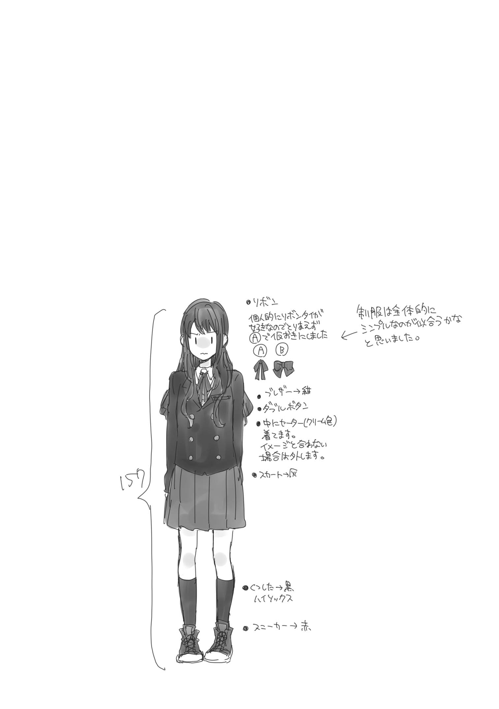
【６】Friday, November 13. Part-A
十一月になった。今年は例年より寒気が早く訪れた為、日が落ちると一気に気温が下がってしまう。時刻は午後三時半をまわったところ。この時刻でもう日は沈みかけており、冬がもうすぐ始まることを実感させる。
『本日より、放課後の部活動、委員会活動は禁止となりました。原則、四時には完全下校して下さい。また、下校時には出来るだけ誰かと一緒に行動し、一人にならないように気を付けましょう。夜間、塾やアルバイト等がある生徒も、夜道の一人歩きを避け、不用意に出歩かない様心掛けて下さい。繰り返します。本日より』
校内放送の声が繰り返しそう告げる。事の発端は近頃世間を騒がす謎の変死事件。この二週間で相次いで発見されており、そのどれもが枯れ果てた遺体として発見されている。警察の発表によると死因は不明。何か特殊な薬品によるものではないかとメディアは報道しているが果たして真実は？ 何にせよ物騒な話である。通り魔的な犯罪の可能性もある為、学校は本日より四時完全下校という措置が執られたという訳だ。
「あらら？ 夏木さんじゃない。お掃除？」
「......えぇ、まぁ」
歯切れ悪く私が答える。広い多目的ルームを何故か私一人が掃除している状況。察しの良い柚原女史なら直ぐに気が付くだろう。あぁ、気分が悪い。
「他の人は？」
「さぁ......誰も来なかったので」
「そっか」
それだけ言うと、柚原女史は部屋に入ってきて何も言わず箒を手に取り、私とは反対の部屋の隅から掃いていく。
「箒、こっちからでいい？ それか机拭いたりした方がいい？」
「それでお願いします。拭き掃除は最初にやったので」
手際よく、スピーディに、でも丁寧に。アルバイトのおかげでお掃除スキルはそれなりのものだ。この規模の部屋の掃除だって、別に苦でも何ともない。
「昔は、こういうのも我慢できなかったんです。サボった人の首根っこ捕まえてここに連れてきて、無理矢理掃除させるくらい平気でやってたと思います。でも、今はもう諦めちゃうことが出来ます。これって大人になったんでしょうか？」
「どうかしら。この前お話した視覚系異能のコントロール方法がちゃんと実践出来てるってことじゃないかしら？」
お願いしていたこの眼のコントロールについては先日、一応その筋の人からのアドバイスが書かれたメモを受け取った。ただ、その内容は酷くアバウトというか、ファジーというか......
要はただの精神論で、色んな経験を積んで、色んな考え方を知って、兎に角広い心と平常心を養えと。そして見たモノをそのまま受け止めるのでは無くて、一度自分の中でワンクッションを置いて、視覚情報を受け止め整理するフィルターを構築しなさいというのだ。後は意識をスイッチさせる方法を身に付けて、特定情報だけそのフィルタを通過させるようにする......や、さっぱりわかんないです。
「一応、言われた通り借りた本とか読んだりしてますけど......」
「まぁ、そうやってたくさんのことを知るうちに純粋さを失って、その分人の世に馴染んでいくというのは生きていく為には仕方の無い選択よ。これまでの夏木さんがちょっと純粋過ぎたのかも知れないわね。人間長く生きればそれだけ関わる社会も広がるわ。でも、その社会全部に干渉して生きていくことは出来ない。酷い言い方だけど、隣にいない人のことであれこれ悩むのは私としてはお勧めできないわね。ほら言うじゃない？ 汝隣人を愛せよって。精々隣にいる人、隣に居たいと思える人を愛するくらいが人の限界よ」
「汝隣人って、そういう意味の言葉じゃなかったと思いますけど......」
一応、この高校の敷地の裏山には教会がある。ミッションスクールという程ではないにせよ、神父さんが時折特別授業で講師を務めることもある手前、隣人愛についても話を聞いたことがある。確か、マタイによる福音書２２章３９節によれば『隣人を自分のように愛しなさい』だったはずだ。綺麗事の理想論だが、私は嫌いじゃない。その通り実現するのは困難かもしれないが、言葉通りにとらえればとても正しい、素敵な教えだ。
「うーんネガティブから考えるのは夏木さんには向かないわよね。ならまずは困っている人の隣人になりましょう。そこから見えてくるモノはきっとあるはずよ。私は、夏木さんの隣人たり得てるかしら？」
「......隣人だと思いますよ」
「そっか、よかった」
やがて床を掃き終わり、塵取りでゴミを集め、お掃除終了である。後半、柚原女史が手伝ってくれたおかげで思ったより早く終わった。隣人愛に助けられた形である。
『四時前になりました。再度お知らせします。本日より、放課後の部活動、委員会活動は―――』
再度流れる早く帰れ放送。ハイハイ、言われなくても早く帰りますよ。
「誰かと帰りなさい、ですって」
「別に、強制じゃないですから」
「今日アルバイトは？」
「休みです」
「そう。じゃあ、一緒に帰りましょう」
「え？」
視界には箒片手にドヤ顔でこちらを見ている隈女。一瞬何を言っているのかよく分からず、ポカンとしてしまう。
「だって、私もこのままだと一人で帰ることになるわけだし、危ないじゃない？」
まぁ、確かにそうなるか。
◆
「あ～幸せ。こう毎日忙しいと、美味しいケーキの一つでも食べないとやってらんないわよね」
解せぬ。物騒だから誰かと一緒に、出来るだけ早く帰宅する様にと学校からの放送を聞いたばかりだというのに。
「休日はだだ混みで長蛇の列なのよね。予想通り、平日のこの時間ならほとんど並ばずに入れると思ったのよ」
解せぬ。何故私は、『季節のフルーツタルト～秋バージョン～』と、『ゼネラルレクラークのタルト』を挟んで隈女と座っているのだろうか。
「あれ？ どうかした？」
「......いえ、美味しいです」
場所は駅ビルの中、キルフェボンというタルト専門店。休日はいつも長蛇の列が形成される大人気店だ。だが、平日ともなればその列は多少ましというものである。
学校を出て駅に向かってしばらく、「ちょっと寄りたいところがあるから付き合って貰えないかしら」と提案され、いいですよと返事したらニコニコ顔でここへ誘導された。
「じゃあフルーツタルト半分ね」
「あ、はい。こっちも切りますね」
タルトの種類は季節ごとに変わるらしく、結局お互いのタルトをシェアすることで合意となった。......私を連れてきた理由の一つは間違い無くこれだろう。確かにこのサイズを二切れは厳しい。
「そうだ忘れる前に。この前お話ししてたアルバイトの件。上に聞いてみたら、近くに厚生労働省の福祉事務所があって、そこからアルバイト仕事を斡旋して貰えそうよ」
「本当ですか!? 」
「えぇ。休日にある資格試験だったり、福祉イベントだったり、そういうので結構人手が足りなくなってるみたいなの。病院の清掃アルバイトとも予定調整考慮して貰えるよう言っておいたから今度事務所に顏出してみて。地図は......これね」
「分かりました。ありがとうございます」
福祉事務所の場所と担当者名が書かれたプリントを受け取る。これはなかなか嬉しい報告だ。恥を忍んで柚原女史に頼んで良かった。素直に感謝である。
「ご家庭の事情もある程度は話通してあるから、印鑑とかその辺の身元保証人は私が代わりに処理してあげれるし問題は無いはずよ。どう？ これで放課後生徒を寄り道に誘う悪いカウンセラのことは口を噤んでおく気になった？」
「はい。美味しいし、嬉しいし。口止め料としては十二分です」
そう言って二人で紅茶のカップ片手に冗談めかして笑い合う。告げ口も何も、別にこれは違反とか、そういうのじゃないと思う。でも、ここはその軽口に乗っておくのが正解かなって。
「ま、もしも本当に何か言われたとしても、学生の緊張をほぐす目的で学校とは違う環境でお話する為でしたって言うだけなんだけどね。夏木さんのことは学校側も気にしてるみたいだし」
「そうですか......考えてみると学校側も馬鹿ですよね。最初は小さなもみ消しのつもりだったんでしょうけど」
私というイレギュラー。湯嶋澄佳というスケープゴート。理事長の甥っ子というアキレス腱。それが折り重なり、やがて湯嶋澄佳の自殺という決定打を経て、気付いたときにはもうどうしようもない程の枷になっていたのだ。
「罪を隠す為に罪を重ね、小さな膿はやがては大きな呪いへと変化する。まるでガンダムね」
「......は？」
「あれ？ アニメとかあんまり見ない？」
「あんまり」
「そっか、じゃあ止めときましょう。これ以上はネタバレになるわ」
別にネタばれてくれてもいいのだけど......ま、いっか。というか、この人アニメとか、それもガンダムとか見るのか。何か意外だ。
「ん？ どうしたの？ あぁ、私がガンダムとか見るのが意外？」
「まぁ......大人になるとそういうの見ないと思ってました」
「逆ね。大人になるから見るのよ。ファンタジーってそういうものでしょ。辛い現実から目を背けて一時の安らぎを。せめて夢の中だけでもカタルシスを。完成された世界の物語はトリップできるからストレス発散にもおすすめよ」
「作り物だからいいってことですか？ ドラマとかは現実っぽいからイマチチみたいな」
「それもあるわね。でも、私としては純度の高さ故のものかなって思うわ」
「純度？」
果汁とか、配合率とか、その手の純度のことだろうか。映像媒体に純度なんて基準あるとは思えないのだけど。
「トレンディードラマや実写映画は色んな人の思惑、主にお金関係が見え隠れしてて純粋に楽しめない部分が多いのよね。原作小説では無かったシーンが広告代理店の圧力で加えられていたり、演技なんて学芸会にも満たないレベルのアイドルの子が重要な役柄で出てきたり。もちろんアニメにもそういう要素はあるけど、多少マシかなって。だって作ってる人たちもそういうのに抵抗したい夢見がちな人たちなのよ。逆に『コレはステマだから笑ってね』くらいのことやってのけてくれるわ」
そんなことを考えながらアニメ見てる時点で柚原女史は純度が低い気がしてくるが............それは言わぬが賢明か。うーん、こういうのが例のフィルタなのかな。
「あはは、何か恥ずかしい話を語ってしまったわね。これ、他の子には内緒ね。いい歳した女がアニメ見てるとか、人によっては馬鹿にしてくるだろうし」
「柚原先生まだ若いから別に大丈夫なんじゃないですか？」
「あ、そっか。まだ話してなかったっけ」
「？」
「ねぇ、私何歳だと思う？」
え、何このうざいやりとり。三十代の人に二十代って答えて喜ばすアレだろうか。ならここはあえて高めに見積もって回答してやろう。
「三十くらいですか？」
柚原女史が笑う。え、嘘、ホントに三十代なの？
「私は今年、三十四歳になったわ。もう立派なオバサンよ」
そう言って笑う目の前の彼女は、決して三十代には見えない容姿をしていた。上に見ても二十代後半。大学を出てカウンセラとして社会に出て数年というところかなと。それが三十四歳だと？ 物理法則はどうなっている。厚生労働省は老化防止剤でも開発したのだろうか。
「夏木さんが日々私に感じていただろう違和感の正体、少しは分かって貰えたかしら？ まぁちょっと普通じゃないのは認めるわ。でもだからこそ、そこそこ経験は積んでるつもりよ。もっと色々頼ってくれてもいいからね」
「......考えておきます」
「えぇ、考えておいて。私の恥ずかしい秘密はこのくらいにしておいて。夏木さんは普段何しているのかしら？ アルバイトは忙しいだろうけど夜とか、お休みの日とか」
「勉強と、運動と、後は炊事洗濯です。私の話あまり面白くないと思いますよ」
何か娯楽を嗜む程の感性も、経済的余裕も私には無いのだ。ちゃんとした紅茶だって、つい最近柚原女史のおかげで初めて飲んだくらいだし。
「そういえばいつもお昼はお弁当よね？ 美味しそうだなぁって思ってたんだけどあれば手作りかしら？」
「はぁ、まぁ。その方が安上がりですので。別に味は普通ですよ。大概が前日の残り物ですから」
「そうかしら？ 冷凍食品とか使ってないみたいだったから、食品添加物とかの関係でも理想的だと思うし、なかなか立派だと思うわよ。夏木さんはお料理上手なのね」
単に価格的な問題で使ってないだけなのだが、まぁ、褒められて悪い気はしない。ん......なんか顔が緩んでる気がする。駄目だ、多分私、今、初めて人に褒められたかもしれない。
「せ、先生はいつもコンビニですね」
「あはは、恥ずかしながら私料理とか駄目なのよね。あんまり健康には良くないとは分かっててもついサボっちゃ......あ、もしかしてこの流れは夏木さんが私の分もお弁当作ってきてくれるっていう、青春アニメの醍醐味的なアレ？」
......この人、見た目に反して脳内はかなり俗物だ。話せば話す程、出会った当初の妖艶で退廃的魅力を感じた印象がガラガラと音を立てて崩れていく。
「それ、自分から言っちゃったらもうダメじゃないですか」
「つまり私から言わなかったら作ってきてくれるつもりだったのかしら？」
ニヤリと、妖艶に笑う。当初の印象とはちょっと違うけどその魅力は健在か。あざといなぁこの人。
◆
キルフェボンでのタルト会（柚原女史によりそう命名された。全種食べ尽くしたいのでこれから定期的に催されるらしい）を終え駅の改札をくぐる。柚原女史はこの近辺の住まいだとかで既に分かれた。それにしても美味しいタルトだった。放課後の掃除のことで少し嫌な気分だったが、差し引きしても今日は良い日だったと言えるのではないだろうか。
駅の階段を上がり、ふと窓から階下を見下ろす。駅前の広場。噴水を中心として多くの人の行き来がある一角だ。クリスマスのイルミネーションほどでは無いが、所々ＬＥＤでライトアップされており、恋人たちの待ち合わせの場所として利用されている。
そんなＬＥＤのライトアップが届かない片隅に、見覚えのある薄手のコートと、色素の薄い髪の女性が見える。この後誰かと待ち合わせなのだろうか？ 彼氏とか、そういうのか。あぁ、何だろ気持ち悪い。詮索は悪いことだよね。プライベートは誰にだってあってしかるべきものだ。
そう納得して見るのを止め立ち去ろうとしたところで、ちょっと気になるやりとりを見てしまった。数人の男たちに声をかけられている。あれはきっとナンパというヤツだろう。あの人危うい魅力の賜か、そういう輩は後を絶たないのだろう。軽くあしらってハイ終了、と思いきやそうはいかない様で。腕を捕まれる。周りを囲まれる。あれはどうも本気で抵抗してる様に見える。そうして更なる暗がりへ男たちに連れて行かれる。周囲にいる人たちからはその光景が見えていたはずだ。声もかけれたはずだ。でも、誰も何かをする素振りを見せない。他人に降りかかる火の粉は見て見ぬふりだ。
あれも先日と同じく彼女の仕事の一環なのかもしれない。ああやって何らかの情報を集めている。虐めの調査が本来の目的では無いと言っていた。この地区で問題になっている事象の調査とも言っていたし、それは恐らく今流行の変死事件のことを指していると推測できる。直接本人に聞いたときははぐらかされたが、私の眼からはそれが真実だと見えた。なら、今からは私がやろうとしていることは彼女の邪魔をするだけの余計な行為で―――
そんなことを頭では考えつつも、体は猛スピードで来た道を戻り、改札にＩＣカードをタッチして外へ再び出る。改札のある三階から降りる為の階段もエスカレータも夕方のラッシュで大混雑しているのを見ると、スカイデッキを全力疾走。そのまま手すりを蹴り、体を宙に踊らす。周囲から悲鳴が聞こえる。その声を耳に、街灯に手を伸ばし、消防士が滑り降りる要領で一気に下へ着地。一団が消えていった暗がりを目指し再び全力疾走。
私は何をやっているのだろうか。こんなの間違い無く警察沙汰だ。学校側に落ち度が無い以上、授業料免除撤回ははおろか退学だってあり得る。正しい方法じゃ無い。
だけど、一度芽生えた感情を制御出来るほど、私は大人じゃないのだ。
程なくして一団に追いつく。大胆なショートカットの甲斐あってか見失わずに済んだ様だ。細い路地、お世辞にも素行が良いとは言い難い男二人が道を塞ぐ。息を切らしてやってきた私を見て二人は若干怪訝な顔をしながらも、凄みを持たした視線で威嚇してくる。
「この先は取り込み中だ。他の道行きな」
「通ります」
「おい通れねぇっつってんだろ!! 」
気にせず通ろうとする私に手を伸ばす。その動作が私に到達するより早く、全力の敵意を持って男を睨む。メデューサの瞳と陰口を叩かれる私の視線。その全力を受けて制止しなかった人間など、今まで一人もいない。
案の定、男は一瞬ビクッと震えて制止する。その一瞬で十分だ。私は二人の間を駆け抜ける。後ろで男たちが何か叫んでいるが聞こえない。今の私は、私が正しいと判断したことを実行するだけだ。
◆
「先生!! 」
細い路地の終着点どんずまり。そこにいるのは私のよく知る彼女と、知らない男たちが四人。予期せぬ私の声に皆驚きと共に振り返る。癖毛の髪を振り乱し、荒い息を整えることもせず、キッと男たちを睨み付ける。
突然私みたいな女子高生が現れたのだから男たちの動揺はなかなかのものだろう。呼ばれた柚原女史も私の姿を見て心底驚いている様子。
「な、何でこんなところに来てるの!? 危ないから帰りなさい！」
「嫌です、それは多分......私にとって正しくない ！ ねぇ、その人、私の知り合いなんです。細かい事情は分かりません。でも、その手を話してあげて下さい」
「お嬢ちゃんさ、事情知らないなら首突っ込むんじゃねぇよ」
「嫌です。彼女は私の隣人です。見過ごせません」
「隣人？ さっきこいつに声かけたとき、結構周りに人いたのにみーんな見て見ぬフリだったぜ？ 皆そうやってんのさ。それが正しい生き方だって。利口だって。お嬢ちゃんもさ、せっかく可愛く生まれたんだ。もうちょっと利口に生きた方がいいぜ。じゃないと、酷い目にあっちまうかもよ？ これ、お兄さんからのやっさしい忠告な」
男が冗談めかしてそう告げ、それに合わせて残りの男たちが笑う。一人、笑ってない人もいる。ニット帽をかぶったブルゾン姿の男。......あぁ、あの人はちょっと危ない。警戒だ。他は......まぁ、いけなくもないかな。
「世界中の皆が例えそうだとしても、これが馬鹿なやり方で、私に一切のメリットが無いものだとしても。私は、この手が届く範囲の隣人は、諦めません。もう......あんな後悔はたくさんです。それが私を救って、ここまで引き上げてくれた浅海と、もう一度それを思い出させてくれた先生の教えですから。私はその想いに殉じます」
「そうかよ。なら、アンタも」
男が一歩前に出て私の腕を掴もうと手を伸ばす。
まずは、先手必勝だ。逆にその手を掴み、相手の勢いを利用して引き寄せ、男の靴に私の赤いハイカットスニーカをぶつけるようにして足を払い宙に浮かす。
浮いた隙間に体をねじ込み、跳ね起きる要領で体を伸ばし、投げ飛ばす。
はい、一丁上がり。
「ジロウ」
「あいさ！」
一人投げ飛ばされたとみるやいなや、ニット帽の男の呼び声に答えて髪を赤色に染めたパーカ姿の男が低い姿勢で駆け寄ってくる。
ステップ、ワンツー、フック、またワンツー。そのどれもが重い。辛うじて相手の拳の出鼻に合わせる形でこちらも掌底打ちを繰り出し、決定打を避けていく。しかしそんな曲芸みたいなまねはそう長くは続けられない。なら、見極めるしかない。
相対する男の目を視る。内臓を狙ったショートフック。これは何とか回避。続いて牽制の左ジャブ。流石に限界でまともに受けてしまう。肩が痛い。次、視界がブレる。なら、それはフェイントだ。
赤毛の男に焦りが見える。フェイントからの大振りで決めようとしていたのだろうが、そのフェイントに一切反応しなかったのだ。だからといって今更大振りの拳を止めることも出来ない。
その隙を、私は逃さない。来ることさえ分かっていれば大振りの拳は避けやすく、また、捕らえやすい。絡め取る様に男の右腕をホールド。腕を素早く捻りあげ間接をキメる。体勢が崩れたところで後ろから体重をかけ、相手を顔面から地面に突き落とす様に転ばせる。
が、男もそう甘くは無い。私とは根本から異なる体格と体重差に物を言わせて、逆に私を背負い投げる様に持ち上げ、投げ飛ばそうとする。
ならばと、腕を捻ったまま、男の頭に両足を絡ませ首を締め上げる様に男にぶら下がる。
そのまま二人共縺れ合う様に地面に倒れ込む。転がりながら男から逃れ、私は抜き手を男の眼前に目がけて突き上げる。男は上から拳を振り下ろす。両者決定打を放とうとしたところで寸止め。お互い、これはリスキーだと判断して硬直に入る。
一瞬のうちに繰り広げられた攻防。皆呆然と口を半開きにしている。
「ジロウさんと渡り合うなんて......」
男の一人がそんなことを呟く。なるほど、この人はグループ内での実力者という訳か。なら、この男と対等に争えるだけの力を見せたのだから今なら交渉の余地はあるはずだ。
「私の目的はその人を放して貰うことだけです。これ以上は止めませんか？」
「冗談、こんなに俺を興奮させといてイカないまま終われると思ってんのかよ？」
失敗、この人バトルマニアの類いだ。
「未成年の女の子にそんな言葉。事案になりますよ？」
「つれねぇなぁ。くどいてんだからちったぁ喜べよ」
お互い拳を収め、数歩後ろに下がり仕切り直す。まずい。普通に相対したら多分私が負ける。この人、本物だ。いつかの空手部主将とは違う。純粋に向かってくるタイプ。もしもこれが道場で、ルールがある中での相対なら臨むところだけど、今日は駄目だ。一か八かなんて許されない。私の勝利は絶対でなくてはいけないのだ。
「ジロウさん！ どうせアイツもあの女の仲間ですよ！ 人殺しです！ やっちまって下さい!! 」
後ろにいる金髪の男が叫ぶ。その声にジロウと呼ばれている男がおぉと勇ましく答える。どういうことだ？
「人殺しって何ですか？」
「あぁ？ 何とぼけてやんだよ。この不健康そうなツラしたエロい女が、俺たちの仲間殺してんだよ。分かったらさっさと構えろや。次は途中で止めたりなんかしねーぞ」
「......本当ですか先生」
「私は......殺していないわ」
柚原あざみと目を合わせる。じっと、相手の瞳を視る。相手の瞳に映る私を。その奥にある真意の色を。視界はブレない。違和感なんて無い。なら、これは真実だ。
「嘘吐け!! リョータとチハルがお前に会った後死んでんのは分かってんだぞ!! 」
金髪の男が柚原女史に詰め寄り、両手を首に絡め、締め上げようとする。男の呼吸がおかしい。他の男とたちと異なりあの金髪の男、明らかに正常ではない。
「落ち着け、勝手に手を出すな」
金髪男のそんな状態を察してか、ニット帽の男が制する。あのニット帽がリーダ格だろうか。金髪男の様子から、何だかそんな感じだ。
「なぁ、センセイ。アンタ何もんだ？ ちゃんと話してくれんなら俺たちだって話し合いに応じる余地くらいある。俺たちは、俺たちの仲間がどうしてあんな姿で死んだのか、ソレを知りたいだけだ。俺たちにだって守らなきゃならねえ面子と、通すべき筋ってもんがあんだよ」
ニット帽の男の落ち着いた声に、一同しんと静まりかえる。赤毛のジロウも構えを解き、そのやりとりを見守っている。
「......はぁ。これはこれで嬉しい予想外の展開って感じかなぁ」
視線を集める彼女。ヤレヤレとため息と共に、ニット帽の男へ向けて身分証明書を突き出し告げる。
「厚生労働省、特定薬物取締捜査官です。貴方たちから少しお話をお伺いしたいのですがよろしいですか？」
その言葉にさっきまで柚原女史の首を絞めていた金髪の男と、私に投げ飛ばれ倒れたままの男が反応を示す。
「薬？ 何の話だ」
ニット帽の男と赤毛のジロウは柚原女史の肩書きに驚きはするも、特に動揺は無い。
「ＶＩＶＩＤ 」
その言葉を聞き更に反応を示す二人。これは誰の目から見ても黒だ。
「そう言うことよ。貴方のお仲間二人は新種の特定薬物の流通に関与した疑いがあるの。一般流通とは異なる危険な物。法整備の外側の規格。一見依存性の無いアッパー系。でもね、その実態は」
言い終わるより早く、金髪の男が唸りを上げて柚原女史に掴みかかる。が、男は寸前でストップ。理由は額に突きつけられた鉛色の塊。手に握られているのは時代錯誤な中折れ式回転式拳銃。古いイギリス映画で出てくる代物だ。
「知っていて？ 麻薬取締捜査官は拳銃の所持が許可されているのよ」
ゆっくりと撃鉄を起こす。後は人差し指を引くだけ。その動作にリーダ格であろうニット帽の男が帽子を脱ぎ、制止の声を上げ、頭を下げる。
「待ってくれ。アンタに対しての無礼は俺が詫びる。すまなかった。落とし前はちゃんと付ける。ヤクは手を出さないのが俺たちの信条だ。こいつらは俺が責任を持ってちゃんと出頭させる。だから」
「ＶＩＶＩＤは麻薬じゃないわ。あれはね、感染するの 。ねぇ、貴方たち私に対して妙な執着を感じなかった？ 掴みかかるとき、自分の欲望を抑えきれなかったんじゃない？ もしそうなら、もう手遅れよ。醜態晒す前にここで脳髄散らした方がまだ人間的な死に方が出来るわ」
「その時は必ず俺が始末を付ける」
ニット帽を脱いだ坊主頭の男と、拳銃を突きつけたままの柚原女史がにらみ合う。金髪の男を抑えかかろうと飛び出しかけた私と赤毛の男は、手を出そうにも出せず妙な姿勢で膠着状態にある。そうして一分だが、実際には三十秒だかの時間が過ぎた後、柚原女史は回転式拳銃を下ろした。
「貴方がリーダなのね。なら、通すべき筋を通しなさい」
「あぁ、感謝する捜査官殿」
「それで貴方たちの面子が保たれて、以後こちらに協力して貰えるというのならその価値は十分にあるわ」
柚原女史が男に名刺を渡すと、男も名刺代わりなのか、地下パブのカードを渡す。
「......一つアドバイス」
そう言って柚原女史が男に何かを耳打ちする。眉を顰め、耳打ちした女の顔を見返す。
「分かった。確認する」
「えぇ、他言無用でお願いね」
繰り広げられる謎のやりとりに正直思考が追いつかない。一応このごたごたは収拾が付いたとみていいのだろうか。
「ジロウ、行くぞ。お前はまだそこで伸びてるアツロウ担いでこい」
「あいさ。それじゃあな、お嬢ちゃん。なかなか楽しかったぜ。もし仕事に困ったらウチに来な。その腕っ節活かせる仕事紹介してやんぜ」
「女子高生をナンパするな」
ニット帽の男に蹴られながら退場して行く。本当に、何なんだあの人たちは。
「私たちも一旦移動しましょうか。夏木さん、凄い格好だし」
柚原女史に言われて改めて自分の姿を見る。スカイデッキからのダイブからさっきの乱闘騒ぎの結果、服は泥だらけ。髪はもっさもさのぼっさぼさ。これで電車に乗ったら間違い無く警察に通報される。
「私の部屋、直ぐそこだからお風呂と着替え、貸してあげるわ」
【７】Friday, November 13. Part-B
駅近くにあるシティホテルの一室。最低限のデスクと椅子。一人用ソファが二脚と机。後はセミダブルのベッドが一つ。柚原あざみはここに滞在しているらしい。掃除もベッドメイクも洗濯も全てやって貰える環境が最高だとか。何だその似非セレブ発言。
着いて早々、取りあえずとバスルームに放り込まれる。ユニットバスなので面倒なお湯は溜めずシャワーを浴びることにする。
ちょっと、一度に色々なことがあり過ぎて脳の理解が追いついていない。熱いシャワーを浴びたところで混乱は続く。でも、逃げることは出来ない。これは自分から首を突っ込んだ結果だ。なら、ちゃんと自分で責任を持てるように事態を正しく理解しなくてはならない。
シャワーを浴びて、柚原女史が用意してくれた服を着る。柔らかい生地のシャツと新品のショーツ。......ヤバイ、これノーブラ＋スボン無しの彼シャツスタイルじゃん。私がさっきまで着ていた制服はいつの間にか回収されてるし。
「あ、あの......先生、せめて何か下にはく物を......」
一応シャツを着てバスルームを出る。サイズが大きいのでちゃんと大事な部分は隠れるけれど、これはかなり恥ずかしい！
「あーゴメンね、ちょうど洗濯出したとこだからあんまり無いのよね。あ、喉渇いてない？ 何か飲む？」
そう言いながら美味しそうに缶ビールを飲む。机の上にはおつまみらしきナッツやチーズなどが満載。
「生徒の前で飲みますか普通......」
「私教師じゃないもーん」
ズボンは......もう諦めよう。女同士だし、どうせここから出ることもないだろう。そう腹をくくって柚原女史の向かいにあるソファに座る。
「甘くないのか甘いのどっちがいい？ どっちも炭酸だけど勘弁してね」
「じゃあ甘くない方」
はい、と手渡される缶ビール。アサヒスーバードライ。確かに甘くは無いけどさ。
「......やっぱり甘い方でお願いします」
はい、と手渡されるほろ酔いピーチサワー。
「もしかして先生ダメ人間ですか!? 」
「何を今更。真眼持ちのくせに何言ってんのよ」
やれやれってソファの上で三角座りになってビールを流し込む大人の女性。シャツの胸元はかなりはだけて、よく見たらはいてたジーンズも脱いでるじゃんこの人。つまり今の私とほぼ同じ格好。そうか、この姿はこの部屋ではデフォルトなのか。
「何ですかその真眼って」
「真実を見透す眼。略して真眼。格好良くない？」
子どもみたいにニコニコ笑ってそう言う彼女。酔ってるんだろうかこの人。いつもよりちょっと幼い。
「メデューサの瞳ですよ。そう噂されるの知ってるでしょ？」
「あら、それは夏木さんの容姿についてでしょ？ それにメデューサって元は絶世の美人なのよ。美人過ぎて近寄り難い。ある種の褒め言葉よね」
なんてポジティブな見方だ。確かにそう考えると逆に恥ずかしい話だが、実際はあの蛇の頭ぐねぐねの、眼光鋭い女邪神を指しての蔑称だ。そこまで開き直る強さは私には無い。
何だかもうどうでもよくなってきた。よし、毒を食らわば皿までだ。
「あ、飲むんだチューハイ」
「今日はもう正しくないことのオンパレードですから。いっそこのまま行けるところまで体験してやろうかと。メモにも色んな世界を知りなさいってあったし」
プルタブをカシュという小気味良い音と共に空け、缶に直接口を付ける。一口、二口。喉を通る炭酸が弾ける。ピーチの甘みに混ざるアルコールの苦み。......うん、マズイ。どうして素直に桃の炭酸ジュースにしないのか。この苦みに何の意味があるというのだろうか。理解できない。
「ん？ どうしたの？ 美味しい？」
「美味しくないです。先生は美味しいですか？」
「美味しいわよ。まぁ、味が目当てというか、コレによって得られる快感が目当てなのかもしれないけどね。お酒なんて、現実が辛い人間が飲む一種のドラッグみたいな物だしね」
ドラッグか。そういえばあの路地裏でもそんなことを言っていたな。
「......ごめんなさい。私、余計なことしましたよね」
「そんなことないわ。ちゃんと説明してなかった私にも問題あるし。それに、あれで彼らが協力してくれるなら結果万々歳。そのときは夏木さんのおかげってことになるわね」
「あの、聞いてもいいですか？」
「何を？」
「ＶＩＶＩＤって」
人差し指を私の唇に当てる。内緒の話しよって囁きながら。
「始まりは......いつなのかしらね。私も確かなことは知らないわ。でも冷戦が終わるきっかけにもなったわけだし、五十年以上前から存在していたのは確かよね。ＶＩＶＩＤっていうのはだたのドラッグの名称。本当に問題なのはＶＩＶＩＤの元成分となっているＶＩＤ と呼称されるウィルスなの」
「ウィルス......エボラとか、ペストとか、そういう類いの？」
「確かにそれに近い物かな。正式にはVicious invader - V-type infectious disease.はい、日本語訳どうぞ」
「悪質な......侵略者？ Ｖ型感染症......ですか？」
「おぉ、流石特待生。ＶＩＤはね、その名前の通り地球外からやってきた侵略者だって説があるの」
何を突拍子の無いことを、と思わず本音が顔に出る。仕方が無いことだ。だって宇宙からの侵略者って。まるでＳＦじゃないか。
「馬鹿な話だって思うでしょ。でもそれが真実なの。このウィルスを一種の寄生生命体だと考えると分かり易いかな。感染すると文字通り体を乗っ取られるの。それも巧妙にね。自分では乗っ取られているなんて分からなくて、でも行動は少しずつＶＩＤが望む方向に修正されてしまう」
「そんな危ない物をどうしてドラッグなんかに......」
「乗っ取られると身体能力が強化されるのよ。筋力も、感覚も、自然治癒能力も何もかも。そこに目をつけたお国があってね。当時冷戦中、大国が核と情報戦に躍起になってる最中、そんなＳＦみたいな方法で超人軍隊を作ろうと計画して作った薬、それがＶＩＶＩＤの原型ってわけ」
「それで超人軍隊が出来て、歴史の裏舞台で活躍し、冷戦が終結した？ そんなこと一切教科書には出てきませんけど......」
「そりゃそうよ、失敗したんだもの。ＶＩＤと人間の適合率は当時0.0001％にも満たなかったはずよ。百万人に一人の確立ね。非適合者はウィルスに体内から食い破られ死亡。軍隊を作るどころか、国民そのものが軒並み死んでしまったわけ」
日本の人口をおよそ一億三千万人とするなら、その全員に投与したところで適合するのはたったの百三十人。残りは全員死亡。試す価値も無い数字だ。
「でも......成功した人もいたってことですよね」
「お察しが良いことで。国民の大半を犠牲にして生み出されたその超人に当時西側諸国はおろか東側諸国も大苦戦。紆余曲折あって地球人類そもそもの危機だと各国が認識して、東西秘密裏に結束し無事討伐と相成ったというわけ」
「本当にＳＦですね。地球外生命体の侵略に対抗する為に世界大戦を終結させるなんて」
「あら、知らないの？ ロナルド・レーガンはゴルバチョフとの会談時に『もしも地球が宇宙人に侵略されたなら、私は２つの超大国がともに動くことを確信している』って言ったそうよ。それがＶＩＤのことなのか、彼が傾倒していたというハリウッドのＳＦ映画のことなのか、それともまた別の何かなのかは分からないけどね」
私も何が原作なのか忘れたが、そんな話を読んだ覚えがある。世界を平和にする方法として、地球外生命体が侵略してくれば地球人類同士争う暇なんて無くなり、その防衛と対策に躍起になりやがて世界は一つになるだろうって。現実の世界を顧みたとき、それは夢見がちなファンタジーだってことは分かる。富める国は自国の安全を考え、貧しき国は先兵として生け贄にされるのが現実だ。だがそれを真剣に考え、歴史的な会談の場で例えジョークなんだとしても口にしていたなんて。
「ネガティブな思想なんだけど、共通の敵は協調の最有力手段よね。まぁ、そんなこんなで初期型のＶＩＶＩＤは廃棄されたはずなんだけど」
「そんな恐ろしいウィルス、利用しない手は無いですよね」
「そうね。その後もＶＩＶＩＤの開発は続いていたそうよ。一九八九年のマルタ会議を期に国際的に開発、利用を禁止。その廃絶に向けて現在でも秘密裏に活動が進められているわ。私たちの知るところでの最終型は感染力は低く、一般的にはアッパー系のドラッグと大差ない感じかな。非適合者も別に死んだりしない。依存性が無いから高値で取引されてる。ただ、問題なのがその適合性能」
「凄く適合しやすいんですか？」
「根本的な適合率自体は当初から変わらないわ。でも、低い適合率でも感染できる様に改良されている点。ちょっとした身体能力の強化だけの人も居れば、もう一段階上の人もいる。適合率に合わせてその効果は様々。要は廉価版ＶＩＤ発症者を作れる様になったの」
「それじゃあ夢の超人軍隊完成しちゃうじゃないですか」
「そうね、使い捨ての軍隊だけど」
缶ビールの中身が無くなったのか、のそのそと冷蔵庫まで歩いて取りに行く。シャツにショーツだけの姿で。......改めて思うんだけど、私今何やってるんだろう。
「所詮非適合は非適合なのよね。廉価版発症者はすぐ死んじゃうの。感染から発症までが一～三ヶ月。発症から死亡までが一ヶ月～長くても一年程度。適合具合によって死因も異なってくるけど、その主な症状はエネルギーの枯渇よ」
エネルギーの枯渇。生命力？ 否、これはゲームの話じゃないからヒットポイントなんて存在しない。なら、今の私たちのエネルギーといえば。
「栄養が摂取できなくなるとかですか？ その非適合ＶＩＤ感染者は通常の経口摂取で食品から人として必要な熱エネルギーを吸収できなくなるとか」
「本当に夏木さんは賢いわね。ＶＩＤは根本から必要とするエネルギーと、その摂取方法が人類とはまったく異なるの。そしてそれがＶＩＤを侵略者だとする理由でもあるわ」
何となく、話が見えた。この柚原あざみという人物がこの街に来た理由。さっきの男たちとのやりとり。このＶＩＤに纏わるお話。そして、今この街で起きている変死事件。
「人間からならそのＶＩＤが必要なエネルギーを吸収できるんですね？」
「正解！ ご褒美にベルキューブをあげましょう」
ぽいっと小さなチーズが投げられる。これ、スーパーで見たことあるやつだ。すっごい高いから食べたこと無かったけど。
「そのエネルギー、科学では未だに解明出来ないからエーテル って呼称されているんだけど、その生命エネルギーみたいなモノを文字通り人から吸い出すのよ。お察しの通り、今世間を騒がせている萎びた死体は奴等の食い残し。もしくは、栄養が摂取出来なくて自滅していった発症者ね。ある程度は隠蔽してたんだけどもう限界で」
「先生が学校に赴任してきたのって、うちの高校内でもＶＩＶＩＤが流行ってる可能性があったからですか？」
「ちょっと違うかな。湯嶋澄佳さんの検死結果が問題でね。どうもＶＩＶＩＤを投与された可能性があったの。感染さえしなければ依存性の無いアッパー系ドラッグだから、一部では高価なセックスドラッグとして取引されてるって話もあってね。まぁ、そんな事情で学校に潜入調査する必要があったの」
「先生はその専門家ですか？」
「えぇ、まぁ......そんな感じね。ねぇ、私を見ていて不思議に思わなかった？ こんな胸も大して無い、肉も無い、目つきも悪い、肌の色も悪い、身形もさして綺麗じゃ無い、不健康の塊みたいな女に、どうして皆傾倒するんだろうって」
ビール片手に皮肉を顔に浮かべ笑う。退廃的な美人だとは思った。でも、万人が万人に受けるタイプでは無い。それがどうだ。人格や能力的な物もあるのかもしれないが、学校内でのあの男子の様子。女子の反応。街ゆく人たちがすれ違う際に彼女に向ける視線。どれもこれも私の眼、真眼には違和感として 写っている。
「夏木さんは気が付いてるのかもしれないけど、これが私の異能よ。フェロモン過多って言えば一番分かり易いかな。誰もが私のエフェクトに夢中になる。でも本当に私を見てるわけじゃない。あくまでも表面上のモノだけ。私が近くからいなくなったら、誰も私のことなんか覚えていない」
「そう......でしょうか？」
「私から一定期間離れると私への熱狂も、私の存在すらも忘れてしまうの。私への魅了は一時的なもので、皆直ぐに熱が冷める。ある人が付けた名前は『消耗される偶像 』。酷く滑稽な名前よね」
「魅了......」
「えぇ、でも貴女のその眼なら......」
柚原女史が立ち上がり、私の両の頬に手を添え、瞳を覗き込む。長い前髪に隠された泣きそうな目。その悲しい眼差しはまるで助けを求める乙女の様。
「貴女はその眼で、ちゃんと私を見てくれる。貴女だけは本当の私を......」
......うん。そうだ。私の眼はちゃんと、正しく、柚原あざみという存在を見ているんだ。
徐々に近付く顔に、血液が顔に集中するのを感じる。顔真っ赤になってるんじゃないだろうか。それを察してか、柚原女史は突然笑い出し、私の頬を両手でぶちゅっと潰して遊びだした。
「うふふ、冗談よ」
ぶー。何だコレ。悔しいし恥ずかしいぞ。
「私のフェロモンははＶＩＤ発症者と特に相性がいいらしくてね。発症レベルにもよるみたいだけど、我慢できず襲ってきちゃうみたいなの。だから私はおとり捜査専門ってところかしら」
「それ、凄く危ないんじゃ」
「この異能のせいでろくな人生じゃなかったわ。恨み辛みをかうばっかり。でもね、この異能があるからこそ出来ることがある。これは私の人とは異なる才能 なんだって思うの。だから、私は私のやり方で私の隣人を守るわ」
そう言ってビールを飲み干す彼女は堂々としていて。美人だとか、鎖骨が素敵だとか、そういうのは一切関係なくて。素直に格好いいなって、そう思えた。
「あぁ、危うく言い忘れるところだったわ。夏木さん、さっきは助けに来てくれてありがとうね。びっくりしたけど......ああ言ってくれたこと、本当に嬉しかったわ」
優しく笑って、ソファに座る私の前に跪き、手の甲にキスをしてくれる。こんなのじゃお礼にならないけど、と付け加えて。
いいえ、十分です。今回は、手が届いた。その実感を得ることが出来たなら、満足だ。
「私......湯嶋先輩のこと、後悔してたんです。後もうちょっと、私が柔軟で、先輩の状況を理解して、歩み寄って、それで手を差し伸べてたらって......でも私は......」
そこで口を噤む。この先は、まだ言葉に出来ない。なんて卑怯な、最低な自分。
「......最悪です......卑怯者なんです私......昔から、ずっと、人の粗ばっかり探して、それを指摘していい気になって、高い場所から正論ばっかり振りかざして......そんなんだから......親も、私が、お父さんの浮気を見抜いて、口にしたから離婚して、そしたら発達障害だって養護学校に送られて......皆、嘘ばっかりで気持ち悪いし、誰も理解してくれないし......浅海さんは強くなれって言うけど......どうせこの先、生きてたって人に迷惑をかけるばかりで......何もいいことなんかある気がしないし......」
ポツポツと、突然始まった私の泣き言に、柚原あざみは、うん、そうだね、悲しいね、大変だね、辛いねって、相槌をくれる。私の手を握って、ここにいるよって。私はちゃんと貴女の横にいて、お話を聞いているよって、いなくならないよって語りかけてくれる。なんだろこれ。変なの。こんなの、私......ただの癇癪起こした子どもみたいじゃないか。
「よし、じゃあさ、これから私が楽しいこと色々教えてあげようか。自慢じゃないけど堕落と、娯楽に関しては私ちょっとした達人よ？ 私がやっばい生きるの超楽しい！ 明日の授業とかどうでもいいけど、明後日届くお取り寄せスイーツの為には死ねないわ～ってくらい人生楽しめる様に調教してあげる！」
「何ですか調教って......それじゃまるでいけないことしてるみたいですよ」
「あら？ 生きることなんて罪の連続みたいなものよ。それにね、いけないことを一人でするのはただの堕落だけど、二人ですると」
「正しいことになるって言うんですか？」
「いいえ、罪の共有はより強い快楽を生むのよ。いつかのレーガンとゴルバチョフの関係の様にね」
ニヤリと悪い顔で彼女が笑う。一緒に悪いことしましょうって。不思議と、視界はブレない。気分もふわふわと昂揚している。なら、これは......正しいこと、なのかな？
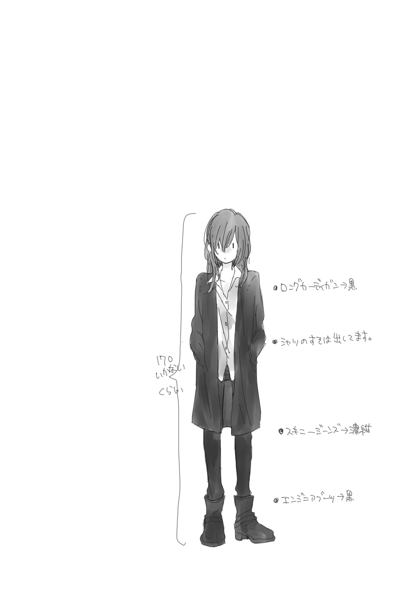
【８】Saturday, November 14.
想像を絶する頭痛と喉の渇きにが覚める。目覚めて直ぐ、現状に違和感。はて、ここはどこ？ 私は夏木一依。そしてこの腕は誰の......？
腕の持ち主の顔を見て現状を認識。長いまつげの美形が直ぐ横で寝ている。しかもこの腕、私の首の下にあるじゃん。ということはこれ腕枕？ あぁ、ダメだ何か鼻血出そうなんですけど。
「ん......んんー......」
お、ぉおおおおい！ 引き寄せられてる！ 抱き寄せられちゃってるよ！ 柚原女史寝ぼけて私を抱き枕かなんかと勘違いして頭抱ようとしてるよ！ 近い！ 鎖骨！ 目の前!!
「ふぁ......あれ？ おはよう夏木さん。どうしたの？ 甘えんぼさんね」
「......お、おはようございます」
ありがとうございます。ちょっと鎖骨に唇触れてしまいました。
◆
きっと低血圧だろうという私の予想に反して柚原女史の寝起きは大変素晴らしく、手早く外出の準備を整えた後、こうしてホテル近所の喫茶店でモーニングと相成った。身支度にかかる時間については予想通りで、ぱぱっとシャワー浴びたかと思うと一瞬でメイク完了。元がいいからナチュラルで十分映えるのだろう。髪も軽く櫛を通す程度で終了。むしろ私の寝癖を直す方が時間がかかってしまったくらいである。
「ここのモーニングの厚切りパンは至高よ。マスター自らが丁寧に塗ってくれるバターも素晴らしくてね。平日はここに来てると遅刻するから来れないけど、土日は常に来てるわ」
そう彼女が絶賛する厚切り食パンは確かに絶品である。食パンって実はこんなに美味しかったんだ!? とちょっと感動を覚えるレベルだ。
十一月十四日土曜日。今日は堕落街道入門編として一日柚原女史と一緒に過ごすことになった。その手始めとしてこのモーニングというわけだ。まだ若干頭が痛いが（恐らく昨日飲んだアルコールのせいである）、ここの珈琲でそれも幾分マシになった。さて、今日は一体何をすることになるのやら。
「まずはその服よね。流石に制服姿の女子高生と遊び回ってたらいくら女同士でも警察に通報されかねないし。今は......もう十時半か。よし、まずは駅前の伊勢丹からかしら？」
◆
その後はもう怒濤の勢いだ。デパートに着くやいなや若くて美人な店員さんを捕まえて「この子の服、靴から下着、アクセサリーまで一式可愛いのをコーディネートして欲しいの」ときたものだ。またその店員さんもノリがいいのかサービス精神旺盛なのかはたまた商売上手なのか。次々に服を靴をアクセサリーを持ってきて、上から下まで行ったり来たりの大騒ぎ。私に試着させてはスマホで撮影しての繰り返しで、一体何着試着したことか......まさか下着まで柚原女史の趣味に合わせて選ばれることになるとは思わなかった。まぁ、昨夜あんな格好で一緒に寝てるんだから今さら恥ずかしいも何も無いんだけどさ。今も彼女のストックだった新品を付けているわけだし......
上下一揃い決まったところで終了かと思いきや、途中カフェで軽くランチ＆休憩を挟み、続いては美容室に移動。既に予約済みらしく、あれよあれよという間にヘアケアに重点を置いた施術が進んでいく。途中、伊勢丹で揃えた服に着替え、更にプロによるヘアセットとメイクも行われる。
そうして完成した私の姿。美容院の全身姿見でまじまじと眺める。綺麗に結い上げられた長い黒髪に赤いリボン。赤いタータンチェックのスカートに、ちょっと可愛過ぎるデザインの為必死に抵抗したが強引に着せられた白いブラウスと、胸を飾る黒のリボンタイ。足下はブラウンのショートブーツ。上からはちょっと気が早いけどフード付のカラーブロッキングコート。深緑とベージュのコントラストが綺麗な、仕立ての良い一品だ。
曰く、これなら制服の時にも着れるとのこと。確かに、この色なら着れなくも無いが、カラーブロッキングのコートはギリギリダメなんじゃないだろうか......
ともかく、フル装備の状態の自分を再度確認。うん、誰だこりゃ。うっすらと乗せられたメイクのせいもあるかもしれないが、これは本当に誰だか分からないレベルだぞ。
「お、準備できてるじゃない。うん、可愛い可愛い！ 私の見立てに間違いはなかったわね」
美容室奥の着付け室から出てきたのは、黒い細身のパンツにスカイブルーのニットを会わせ、首にはグレンチェックのストールを巻いた柚原あざみ。足下はいつものエンジニアブーツでは無く、スゥエード生地のヒールブーツ。髪もアップにまとめられており、少しフォーマルな印象を受ける。さっきのデパートでいつの間にか購入していたらしい。そして普段はほとんどしないに均しいメイクも美容師さんに整えて貰いばっちり。
「......先生、これ」
「うん、やっぱり清純なフリして実は小悪魔系でコンセプトは間違い無かったわね」
「あの、この服とか美容院とかお金は」
「それはめでたく堕落街道を歩み出した貴女へのプレゼントよ。冒険の前に王様が勇者に与える武器と防具一式みたいな？」
正確には確認できなかったが総額で十万は軽く超えてる。それをプレゼントだなんて......
「よし、じゃあ交換条件。これからは先生禁止ね。私の事はあざみさん。名前で呼びなさい」
「わかりました......ありがとうございます、あざみさん」
「よく出来ました、一依ちゃん」
何コレ、めっちゃ恥ずかしいんですけど......また顔真っ赤になってるのが自覚できる。
「柚原さーん、そろそろ時間やばいんじゃない？ タクシー捕まえる？」
美容師さんが時計見ながらそんなことを言う。......まだ、何か続くんですか？
「おぉ、ホントだ。お願いしまーす。それじゃあお嬢様、舞踏会へ行く為のドレスも準備できたことですし、間もなくやってくるカボチャの馬車に乗って会場へ参りましょうか」
◆
あれよあれよという間に時は過ぎ。現在夜七時を過ぎた頃。何やらお高そうな日本料理店（割烹っていうのかな、こういうところのこと）のカウンターに座らされている。服も髪も綺麗にして貰っててよかった。こんなところ普段の私の格好だと恐れ多くて入れない。
美容室の後、タクシーに乗って連れて行かれたのは県外にあるコンサートホール。それもオーケストラピットを備えた大規模なところだ。集まる客層も少し年齢層が高めで、私と同い年くらいの子は多くない。そこでたっぷりクラシックのコンサートを堪能させてもらった。クラシックなんて音楽の授業以外で聞いたことも無いし、全く分からないのだけれどやはり本物はいいものだ。途中うとうとしてしまい、それをあざみさんに見られてニヤニヤされてたのはご愛敬ということで。
「あらあら、めずらしい。今日はえらい可愛らしいお連れさんと一緒で」
着物を着た女将さん（？）みたいな人がお茶を出してくれる。独特なしゃべり方のイントネーション。あ、多分この人京都の人だ。テレビで見たことある。
「そうなの。可愛いでしょー一依ちゃん。今日のコーデは全部私の見立てなんですよ」
エッヘンと自慢げな彼女。や、容姿だけで言ったらこの人の方が目立つ。コンサートホールでもどれだけの人が振り返り注目していたことか。タクシー内に至っては、大急ぎでコンサートホールまでなんて言うものだから、これから出演するミュージシャンと間違われる始末だ。
「可愛らしいのはよろしいですけど......あきまへんぇ、援助交際とかは」
「違いますよーあ、や、でも実際に服買って一緒に遊んだわけだし、これって援助交際？」
「私に聞かないで下さいよ」
女同士だからそういう風にはならないんじゃないかな。まぁ、ぱっと見て姉妹か、親戚のお姉さんと姪って感じだよね。
そんな雑談をするうちに、料理が入った小鉢が目の前に置かれる。注文もしていないのに！ 凄い、これが噂に聞く注文をしなくてもいいお店か。
「今日はどちら行かはったんです？」
「県外に出来た大きいコンサートホールあるじゃないですか。そこでちょっと現代アレンジ風味のクラシックをね。一依ちゃんには私がこれからみっちり堕落街道を教え込んであげることになったから、今日はその入門編ってことで」
「うふふ、そら大変ですなぁ。柚原センセに目ぇ付けられたら教会のシスターさんでも堕ちてしまいそうやし。一依さん、気ぃつけはった方がよろしいで。柚原センセ、天性のジゴロやさかい油断してたらコロッともってかれますぇ」
「ちょ、何言ってるんですか！ 人聞き悪いなぁ」
「ほら、本人自覚無いんがホンマたち悪い。この間もここ来てはった観光客の子たぶらかしたはったんやから」
うわぁ、なんかその状況想像できる。思わずジト目であざみさんを見る。ちょっと思い当たる節があるのか、あははと苦笑い。
「センセお酒どないしはります？ 今日、この後暖かい料理になりますけど」
「あら、そうなんですか。ん～じゃあ冷酒がいいなぁ。あ、文佳人がいいです。昨年イマイチでしたよねこれ。でも今年はまた素晴らしいクオリティで......あぁ、でも十四代も捨て難いなぁ。あ、一依ちゃんはノンアルコールね、未成年だから」
一層ジト目を強くする。どの口が言うのかこのダメ人間。
そんな感じに和やか......ではないけど楽しくお食事は進む。お酒もいい感じに進んで、徐々にフォロモン垂れ流し女の本領発揮。お行儀悪いけど片肘ついてこっちを見る仕草のエロいことエロいこと。お酒飲んでないのにさっきから体温の上昇が止まらない。
「あの、あざみさん。今日ホントにありがとうございます。全部初めてのことばっかりで......楽しかったです。いいこと、ありますね。こんな私でも生きてればきっと」
その言葉にあざみは嬉しそうに肯く。
「今日は大人になって、お金を自由に使えるようになったらどんな贅沢が出来るかっていうのの体験版って感じね。私もこのお店は元々厚生労働省のお偉いさんに連れてきて貰って知ったんだけど、すっごい美味しいでしょ？」
「はい。その分お値段もしそうですけど......」
「私、実は結構高給取りだから。でも、一依ちゃん頭良いから私よりもっともっと稼げそうよね。そうね、そのときは今日のお礼に一依ちゃんからデートに誘ってくれたら嬉しいわ」
「今日のこれ、デートだったんですか？」
その質問には答えてくれず、くすくす笑って冷酒を口に含む。天然ジゴロめ。からかわれてるなぁ。
「悪くないでしょ、堕落して生きていくのも。その為には嫌なことも多少我慢して稼いでいかないとね」
「あざみさんは出来れば働きたくない人ですか？」
「どうかな？ 私の仕事は、私の生きる意味でもあるから。それがたまたま世の中の需要とマッチして、厚生労働省がお金をくれているって感じかしら。私はこの異能で多くの人を不幸にしたんだと思うの。だからその分、人を救う。そういう生き方なの。一依ちゃんもそんな生き方が見つかるといいわね」
そう言ってくいっとグラスを空ける。生き方か。うん、そうだね。そういうの見つかるといいな。そして出来ればそれはこの人みたいに、誰かに優しく出来るものでありたい。
「すみませーん日本酒お代わり」
「は～い。あぁ、そう言えばこの前飲みたい言うてはった醸し人九平次ありますよ」
「欲しい欲しい！ 一依ちゃんも一口だけ飲む？ これ人気なんだよ～」
......ダメ人間め。
【９】Monday, December 14. Part-A
十二月も残すところ後半分。堕落街道に入門してからもう既に一ヶ月が経過し、私の周囲では色々と変化が起きていた。
一番大きなものは私にも友だちと呼べる相手が出来たことだろうか。第二進路指導室によく出入りしていた二階堂さんとは最近ではほぼ毎日一緒にお昼を食べているし、放課後一緒に買物に行くこともある。宗教云々のところでちょっと浮き世離れというか、不思議ちゃんなところはあるが、そこがかえって私のような欠陥のある人間とは相性がいいみたいだ。最初はあざみさんを通しての関係だったけど、今では純粋に友だちと呼んで差し支えないと、私は思っている。
クラスでの無視についても少し改善された。まだ全員が、というわけではないが一部のクラスメイトは声をかけてくる様になった。彼らの中で何かが変わった訳ではない。原因は私だ。この眼が見せる違和感との付き合い方を少しずつだが覚え始めたことが一番大きい原因だろう。
少しずつだが心の有り様を変えていく努力をしている。例のメモは定期的に送られてきており、そこには今の私の状態に合わせて少しずつ役に立ちそうなアドバイスが記載されている。
曰く、これはあくまでも見えるという異能であって、それをどう処理するかは私次第なのだと。あさみさんの診断では私はこの異能とは別に、強迫神経症の一種を煩っている状態らしい。「正しくなければならない」、「間違ったことは決して許されない」という強い強迫観念から自律神経系の障害を起こしている状態なのだとか。正しく現状と向き合えば改善していける。これはただの病気なんだよと、そう言われた。
直ぐに全てを改善することは出来ないが、ある程度は我慢と、許容を己に課せるようになってきたかなという状態だ。
他に学校内での状況が好転し始めた理由として、あざみさんがやたらめったら私に構ってくることも挙げられるだろう。見かける度に一依ちゃん一依ちゃんと話しかけてくるし、近くにいれば問答無用でべたべたと人の頬を撫でるわ突くわ両手で挟んで潰すわ。終いには膝の上に座らそうとしてくるし、もう完全にペット扱いである。
私は私で最初こそ学校では柚原先生と呼んでいたが、だんだん遠慮が無くなってきて今では堂々と「あざみさん止めて下さい鬱陶しいです」と人の髪を勝手に三つ編みにしようとする彼女を払いのけれる程には図太くなった。
そうしたやりとりを見てか、どうも周囲の私に対する印象が、実は小動物系でツンデレキャラというよく分からないものに変わりつつあるらしい。（これは二階堂さん調べによるものである）
確かにメデューサと陰口叩かれ、遠巻きに眺められるよりかは幾分マシなので大人しく為されるがままの私である。
あと、私への状況が変わったのは何も私だけの問題でも無い。実は、湯嶋澄佳を虐めていたグループの大半が学校へ来なくなった。確かなこと分からない。だが恐らく、未だに街を騒がせている変死事件と無関係では無いのだろう。そのことについてあざみさんに聞いてみたが、流石にはぐらかされた。でも間違い無い。
街を騒がせる変死事件はその後も止むこと無く、公表されている犠牲者だけで既に十人を越えている。行方不明者や、厚生労働省によって秘密裏に隔離された感染者等を含めると膨大な数になるだろう。ちょっとしたパンデミック状態だ。
この事態に対し、政府は正式に危険ドラッグ服用によるものだと公表。凶暴化する恐れもあるので一般人に警戒を求めている。ただ、十二月に入ってからは一見事態は沈静化を見せている様で新たな犠牲者の報道は無い。このまま何事も無ければいいのだけれど。
「だから、そんな対応じゃ遅いって言ってるんです！」
「そうは言ってもなぁ先生。あまり大げさなのは」
「......わかりました。取りあえずそれでいいです。でも、覚悟はしておいて下さいよ」
お昼休み、いつものように第二進路指導室の前まで来るとかなり大きな言い合う声が聞こえる。あざみさんと、知らない男の人の声。こんなに大きなあざみさんの声、初めて聞いたかもしれない。
扉の前で立ち尽くしていると中からよれたスーツのオジサンが出てくる。あ、この人いつかの駅で見た人だ。つまり刑事さんか。
「おっと、失礼。大丈夫か？」
「あ、はい。すみません」
ヤレヤレと頭を書きながら刑事が立ち去る。それと入れ替わるように私は入室。中にはあざみさん一人。ちょうど刑事さんの分らしきカップを片付けるところの様だ。
「あの人、いつかの刑事さんですよね。前に全校集会とか事情徴収とかで話をしに来てたのもあの人だったような」
「そうね。あの人、湯嶋さんの父親らしいわ。離婚して親権は無いから長く会ってなかったみたいだけど。久しぶりに再会したと思ったらそれが飛び降り自殺した後の遺体。流石に同情するわ」
「今、どうして揉めてたんです？」
しまった外まで聞こえてたかと軽く舌打ち。まぁ、あれだけの声量ならね。
「意見の不一致よ。彼らは楽観視し過ぎている。大して私たちは怯えている」
「怯える......ですか？ 例のドラッグ？」
「まあね。いつかの協力者たちのおかげで検疫は進んでるけどそれでも......」
「警察ともっと協力出来ないんですか？」
「色々としがらみとか、考え方の違いとかあるのよ。どっちも同じく平和を守ろうとしてるのにね。人類が滅ぶときって、きっとこうやって不協和音を奏でてるうちに気付いたら手遅れになってるんだと思うわ」
あざみさんのちょっと疲れた顔。世間的には沈静化を装っていてもどうにも状況は芳しくないらしい。むしろ悪化してるんじゃないだろうか。公表できないレベルになってきたから必死に報道を規制しているとか......
「ん？ もぅ、また眉間に皺寄せて怖い顔して。せっかくの可愛い顔が台無しだわ」
両ほほをぶちゅっと潰され、ぐりぐりいじられる。何となく為されるがまま。身長差から、私は見上げる格好で、あざみさんは見下ろす形だ。
「心配しなくても、それが皆の安全に繋がるならちゃんと連携するわよ。あの刑事、街の若いチンピラ連中にはなかなか信頼されてるって聞くし」
「本当ですか？」
「本当よ、あざみさんを信じなさい」
嘘だ。彼女を写す私の眼は違和感を伝えている。でも、それを私がどうこう言うのは正しくないのだろうけど。
「昨日もそう言って頼んだ中華の牛モツ鍋、めちゃくちゃ辛かったじゃないですか。また唇ヒリヒリするんですけど」
昨夜一緒に行った中華飯店でのことだ。四川風って書いてあったけど、この人は日本で出る四川風なんて大したことないわよと豪語していた。結果、死にかけたのです。
「細かいこと気にしないの。なぁに、唇痛いの？ だったらちゅーして治してあげようか？」
思わず、沈黙。あ、えっと、その、うんと......それも悪くな―――
「失礼しまーす」
瞬間ばっと離れる。そうだった今お昼休みじゃん。ここでいっつもご飯食べてるメンバーが来るに決まってるのに何やってんだ私。あっぶな。何流されそうになってんだろ。女同士でさ、何を......うぅううううう......
「夏木さんどうしたの？」
「いえ、何でも......」
入ってきたのは三年の伊藤先輩。派手さは無いけれどしっかりした人で、通称柚原サロン のまとめ役みたいなところがある。また、虐めグループが登校してこなくなったことを受け、学校内でも生徒会長に近い役割を担っているらしい。
この学校の生徒会長って実は例の市議会議員の娘さんで、現在長期欠席中。多分ＶＩＶＩＤを服用していたんじゃないだろうか。生徒会メンバーも大概がそのグループの人間なのだから、現在生徒会は全く機能していない。
そこで矢面に出ることになったのがこの伊藤英奈先輩というわけだ。どうも元から例のグループとは折り合いが悪く、そう言う経緯もあってスクールカウンセラとやりとりしていたようだけど......当人たちがいなくなったのだから本領発揮するときが来たってところだろうか。
「お二人とも仲がいいのは大変結構ですけど、あんまりところ構わずいちゃつかないで下さいね」
「ちょ、先輩何言って」
「柚原先生はご存じでしょうけど、最近は夏木さんもちょっとしたアイドルですから。お互いのシンパから不興買っちゃいますよ」
え、何ですかソレ初耳。確かに最近知らない一年生から挨拶されることもあるとは思ってたけど......アイドルって。あざみさんの異能じゃあるまいし。
「あーはいはい、気を付けますよ。それはそうと伊藤さん、お願いしてたの手に入った？」
「あ、はい。これです。夜踏会のタイムスケジュールは確定版です。参加名簿はまだ締め切ってませんから現時点で提出してくれた人だけですけど」
手渡される何枚かのプリント用紙。はぁ、流石臨時生徒会長。ちゃんとお仕事してるんだ。
「夏木さんは参加しないの？」
「......そもそも夜踏会って何ですか？」
クラスの子たちが話しているのは聞いたけど、会話には加わることは無いので正直詳細は知らない。去年もあったのだろうけど、同じ様な状況だったし。
「あれ？ 二階堂さんから聞いてない？ うちの学校の伝統で、クリスマス会をかねたダンスパーティみたいなヤツよ。キャンドルパーティの様なこともやるの。でも今年のキャンドルは......湯嶋さんの追悼の為に灯そうかと思って」
はい、とチラシを渡される。夜踏会のお知らせ。確かにスケジュールに堂々と追悼会と明記されている。
「これ、よく理事長とかが許可出しましたね。さっさと忘れさせたいでしょうに」
「あぁ、それなら理事長以下その取り巻きは生徒会長と同じく病に伏せってるらしいの。今は教頭先生を中心として、生徒会と同じく臨時経営陣って感じね」
あざみさんを見ると、そういうことって顔で肯く。なるほどね、なら湯嶋先輩に使われたドラッグの出所は理事長や市議会議員と言った筋か。摘発しようにも大人の都合で上手くいかないわけだよね。さっきの刑事さんとの言い争いもその辺りが原因かもしれない。
「追悼会なんて、都合のいい話だってことは分かってるわ。でも今何かしないと、本当に皆何も無かったことにしまう。だからせめて、皆にもチャンスをあげて欲しいの。皆、夏木さんみたいに強くはないから......」
聞いたことがある。一部生徒たちの間で私は、逆境に負けず湯嶋さんを虐めから救おうとした存在として英雄扱いされているって。本当はそんなんじゃない。本当の私は卑怯で、浅ましくて、自分のことしか顧みない外道で......あぁ、気持ち悪い。
「よかったら夏木さんも参加してね。前々日まで申請大丈夫だから」
「......いえ、その日バイトのシフトあるんで」
そっか、と先輩は心底残念そうな顔をする。彼女としては湯嶋さんを救おうとした象徴として私にも参加して欲しかったのだろう。だが、まだ私はその場に行く資格があるとは思えない。許しを請うても、許されないこともあるのだ。
湯嶋澄佳も、きっと私を恨んでいるだろう。一連の奇病騒ぎも、一部では湯嶋澄佳の祟りだと噂されている。関係者が軒並み病に伏せっているのだからそう思われてもおかしい話ではない。実際にはＶＩＶＩＤ服用者が倒れているだけに過ぎないのだろうけど。
でも、もしも本当に湯嶋澄佳の祟りなんてものが存在するとしたら......その影響を私が受けていないのはおかしい。
だって、私は、あの日―――
湯嶋先輩を見捨てたのだから。
【10 】Monday, December 14. Part-B
沈んだ気持ちのまま清掃のアルバイトを終えた帰り道。着信を告げる携帯を開き、届いていたメール内容を見て少し心が浮上する。すっかり堕落したなぁって実感しつつも、指定された駅前の本屋へ向かう。大型店舗故に見つかるか不安だったが、幸いにも目的の人を直ぐに発見。ガラス前の雑誌コーナで何やら立ち読みをしている様子。せっかくのなので後ろからこっそり近付いて驚かせてやろう。さて、どうしたものか。
① 膝カックン
② 抱きつく
背後から忍び寄り、ぎゅっと相手の腰に手を回して抱きつくように甘えてみた。
「あらあら。今日は甘えんぼさんね」
「......驚かないんですね」
「夜の窓ガラスは鏡になるのよ。さすがの私もいきなり抱きつかれた普通叫んじゃうわ」
掌の上で転がされていただけの様だ。何か悔しい。でも、まぁ、何かこうしてると安心するしいっか。
「......さて。ご飯、食べに行きましょっか」
◆
今日のディナーは駅の外れに最近出来たちょっとオシャレな南国テイストのお店。ログハウス調の店内に、ちょっとアジアンテイストな雑貨の置かれた異空間。手軽に体感できる非日常というヤツだろうか。
「夏木さん海外行ったことある？」
「無いです。あざみさんは？」
「実は私も海外は無いのよね。なかなか機会が無くて。ヨーロッパとかの古城も憧れるけど、やっぱり最初はこういう南国テイストなリゾート地に行きたいわ」
本来はカップル席だろう二人がけのソファに並んで座る。出される料理はどれも美味しいのだけど、実はバリやインドネシア料理というわけではなく、無難なイタリアン系でした。お味は大変満足なレベルなのだけど、ここまでお店の雰囲気整えられると是非その土地の料理も食べたくなるのが人の性というやつだ。
「......じゃあ、もし私がちゃんと就職できて、たくさんボーナスもらえるようになったら。その時は一緒に南国リゾート行きましょう」
「いいわね、それは楽しみだわ」
「約束です」
「えぇ」
冗談みたいに指切り。指切りげんまんうそついたらって。どういう意味かよく分からないけど、絶対破らない約束だよって証明するにはうってつけの儀式。うん。行きたいな南国リゾート。青い空と、澄んだ海。日が沈む海岸をあざみさんと歩く......そして言うんだ。ありがとうございますって。おかげで人生はこんなに楽しくなりましたって。だから、その為には......この心に残る痼りを吐き出さなければ。
◆
食事も終わりお店を出て、せっかくだからとイルミネーションの始まった駅近くの公園を歩く。それほど有名なライトアップスポットでもないので人はまばら。それでもイルミネーションは健気に光る。キラキラと、誰も視ていなくても賢明に。
二階堂さんからこの前、光は誰かの祈りなんだって聞いた。船乗りたちの無事を祈る灯台や、神々へ奉納される護摩火、燭台に灯される聖火。街灯だって街が安全でありますようにという願いを込めて設置された祈りの光だ。見たことは無いけど神戸の有名なイルミネーションも災害に対する祈りであったはずだ。なら、このイルミネーションも誰かの祈りが込められているのだろうか？ 私も、湯嶋さんの為に祈りの光を......灯してもいいのだろうか。
「追悼会、一依ちゃんは気にくわない？」
「......いえ、皆が湯嶋さんのことを思い出して、あのとき自分にも何か出来たんじゃないかって、そうやって祈りを捧げるのは悪いことじゃないと思います。でも......私がそこに加わるのは違うって......」
「皆、全部が全部思い通りに行動できないわ。頭では分かっていても行動できないこともたくさんある。貴女はそれが見えてしまうから、余計にその選択に縛られてしまうだけよ。根本は何も変わらない。夏木一依も他の生徒と同じただの十七歳。まだまだ未熟で間違いだらけの、か弱い女の子よ」
「......はい......私は......弱いです......卑怯です。最低で、最悪で、偽善者で、自己中の酷い女です」
「そんな風に自分を卑下してはいけないわ。犯した罪の重さに押し潰されるのはその人が本当に後悔しているからよ。なら、そのまま潰れるのではなくて、その経験を糧としてこれからの為に活かしましょう」
公園の奥で立ち止まる。ちょうど辺りはイルミネーションの光が届かない暗がり。人の祈りの届かない心の奥底。私は、重い蓋開ける。この人なら......受け止めてくれると信じて。
「私、知ってるんです。湯島さん、飛び降りる前、私に電話しようとしたんですよね」
「......えぇ」
「でも、私はそのとき電話に出なかった」
「明け方よ、寝ていて当然だわ」
「............起きてました」
言葉にして目の前が真っ暗になる。音も無く、私を構築していた何かが崩れ去る。
これが私の罪。何が正しいことだ。何が英雄だ。私は、助けてと伸ばされた手を......振り払ったのだ。
「七月に湯島先輩助けたら、私、クラスで完全に無視されるようになって。嫌がらせも増えて......アパートも......嫌がらせが......何度も......病院も......辛かったんです......怖かったんです......誰も、助けてくれないし......いつか！ 私は我慢できなくなって！ 次は二度と嫌がらせとかされない様にって!! 殺してしまうんじゃないかって............きっと、この電話に出たらもっともっともっともっともっともっともっともっともっともっともっともっともっともっともっともっともっともっともっと、ずっと!! ..................そう考えたら怖くて......出れなくて......」
頭を抱き締められる。よく話してくれたわね、辛かったんだね、怖かったんだね、頑張ったねって。
声にならない声で泣いて。喉が潰れるような声で叫んで。ずっとため込んでいたモノを全部吐き出すように喘ぐ。
「それでも、私を助けてくれたわ」
「......もう、こんな後悔はしたくなかったから......浅海の教えを......あざみさんがもう一度思い出させてくれたから」
結局私は、手を放してしまった。でも、悔やんだって何も世界は変わらない。恨んだって、心は晴れることは無い。身も蓋もないことだけど結局は前に進むしか無いんだ。でも、今は......もうちょっと......
ぎゅっと、私を抱きしめてくれる人の体を掴む。答えるようにもう一度強く、私を抱きしめてくれる。顔を押しつける。嗚咽が漏れないように。後悔に押しつぶされないように。声を出して泣けばその分、涙と喘ぎ声に混ざり出て、何かが少し軽くなるかもしれないから。そんな錯覚に縋って。私はまた泣き出した。
「なら、またここから再スタートね。その教えをくれた人に恥じない自分になれる様、また一から積み重ねていきましょう」
散々泣きついて、涙も涸れ尽きてしまう頃、そうやって優しく語りかけながらハンカチで私の顔を拭ってくれる。あぁ、本当にこの人はどうしてここまで。人を許して、堕落させてくれる優しさを持っているのだろうか。
私を撫でてくれる彼女はちょっと悲しい瞳で笑って。涙で滲んだ視界が不安定にブレた。目が回る。泣き過ぎた？ 気分が......悪、い？
【11 】Friday, December 18. Part-A
夜踏会当日。昨夜から降り続く季節外れの豪雨により、大気と雨水の温度差から街全体を深い霧で覆う異常気象へと発展していた。とはいえ夜踏会は屋内行事。講堂を利用して行う予定なのでかえって霧でキャンドルが乱反射して幻想的だとポジティブに捕らえる生徒が多いらしい。平和だなぁ。
私はというと、結局今回は遠慮することにした。献花も、懺悔も、既に個人的に済んでいる。湯嶋先輩のことはきっと一生忘れないし、そのことを想って別の誰かを救えるように行動していきたいと考えている。それが、あざみさんと話してたどり着いた私の答えだ。この考えをもしも世間一般で批判されても、たった一人、私を支持することを明言してくれた人がいたから。だから私は後悔に押し潰されることなく前に進むことにした。
二階堂さんはどうするのかと聞くと、彼女も今回は参加しないらしい。彼女は彼女なりに色々と思うところがあるようで。祈りは、許される為に行うアピールじゃないよ、と。思いを胸に一人静かに問いかけるものなのだと。追悼会という考えには個人的に賛同出来ないそうだ。
ダンスパーティについては凄く気になる様子で、来年は一緒に出ようねと約束をした。来年、か。なんだかまだ想像できないな。
「あれ？ 夏木さんやっぱり帰っちゃうの？」
昇降口でいつもの赤いハイカットのスニーカに履き替えていたら、伊藤先輩に声をかけられる。手には飾り付けが満載に入ったダンボール箱。ここのところ毎日遅くまで活動していたみたいだけど、まだ準備は終わっていない様だ。
「はい、今回はやっぱり。アルバイトもありますから」
「そっか、残念。あれ？ ってことは夏木さんは呼ばれてないってことか」
「何のことですか？」
「や、うん。何でも無い。ごめんね呼び止めて。あ、でも多分ケーキとかお菓子とか余るはずだから週明け、月曜日のお昼に皆で食べましょう」
そう言って慌ただしく去って行く。忙しい人だ。最近では完全に臨時生徒会長としての立場を確立した様でお仕事急増中なんだとか。前生徒会長並びに理事長筋の悪行三昧によって生じていた学内のあらゆる軋轢、問題を解決しようと躍起になっていると聞く。
矢面に立って行動することが増えたせいか、最近は別人の様に感じることがある。私の眼から視てもちょっと違和感を感じるというか......何か無理をしているのかも知れない。今度あざみさんにそれとなく促しておこう。
靴を履き替えて外に出る。ちょうど雨は小降りになっているようだ。このままやんでくれたらいいのだけど、黒い空の雲から予想するにその望みは薄そうだ。
今朝から本当に霧が凄い。道を歩いていて、雨よりも霧によってコートが濡れてしまう程だ。せっかくあざみさんに買って貰ったコートなのにちょっと悔しい。
そんなモヤに包まれた空に少し違和感を感じる。それが何か具体的には分からない。でも、ちょっとおかしい。季節外れの天候が？ 霧が？ 天変地異の前触れ？ 何にせよ、ちょっと警戒した方がいいのだろうか。
正門へ向かうと見慣れた後ろ姿が視界に入る。いつもの黒いロングカーディガンにストールを巻いた姿で傘をさし、校門外に止まっている車に乗る人物と何やら話している。厚生労働省の人だろうか？ あまり立ち入らない方が賢明だろう。
ちょっと歩をゆっくりに調整すると、程なくして車は発進。あざみさんの近くに到達する頃には既に車は見えない状態になっていた。
「寒くないですか、その格好」
「え？ っあぁびっくりしたぁ一依ちゃんか。寒いわよ、足下も濡れてびちゃびちゃだしもう最悪。早く部屋に戻ってお茶飲みたいったら。一依ちゃんはもう帰り？」
「はい、アルバイトありますから。雨ましなうちに移動しちゃおうかと。今の、厚生労働省の方ですか？」
「えぇ、まぁそういう感じの人よ。一依ちゃん、今夜何か予定あるかしら？」
「アルバイトの後は何も無いです」
「なら、今日の夜。夜踏会終わったら迎えに行くから病院で待ってて貰えないかしら」
こうやって夜約束すること自体は珍しくないが、病院指定は初めてである。大抵は駅前とか、どこかお店指定ということが多いのだけど。
「今日雨酷いでしょ？ 運良く車借りれそうだから病院に迎えに行くわ。アパートの方に迎えに行っちゃうと流石にＰＴＡとかに何か言われそうで......明日お休みでしょ？ 深夜のドライブなんて如何かしら？」
ふふんと、格好付けて笑う隈の人。......大丈夫だろうか。何となくペーパードライバー臭がするんだよなぁ。よりによってこんな深い霧の日とか死亡フラグ......でも、あざみさんと深夜のドライブか。それは......悪くない。
「夜踏会に私出席しないといけないのと......さっきの車見てたなら言っちゃうけど厚生労働省からも呼び出し受けててかなり遅くなっちゃうかもしれないから。あんまり連絡来ないようならアパートに帰っててくれてもいいわ」
「あ、はい。今日バイト遅番なんでいいですよ。課題も色々出たし、多分それやりながら待ってます」
ごめんねーと傘を持っていない方の手で、冬の風で冷たくなった私の頬をぐりぐり撫で潰すあざみさん。......行動と言動が一致していない。曰く、私のほっぺの弾力がお気に入りなのだとかで、ことあるごとにつついて、弄り倒して、潰してくる。私がこの人の鎖骨へ抱く執着と似た様なものだろうか。なら、受け入れよう。仕方無い。
「あと、昨日から顔色悪いみたいだからコレ」
小さな小瓶に入ったドリンク剤らしき物を渡される。顔色、悪かったかな？ そう言えば霧に対して違和感を感じるせいでずっとムカムカした状態が続いていたかもしれない。
「私薬剤師免許無いから職務としては渡せないんだけど......個人的なプレゼントということで」
「何ですこれ？ 精神安定剤とかそういう系？」
「違う違う、ただのマルチビタミン系の栄養剤。一依ちゃん多分栄養不足よ。昨日夜ちゃんと食べた？ 冬は野菜高いからとか言って野菜不足なったりしてない？」
痛いところを突いてくる。そうなんですよね、どうしてこんなに季節によって野菜の値段に差があるのか。バランス良く栄養を摂取することを心掛けている私だが、経済的事情は無視できない。近所のスーパーは野菜が高くて困る。かといって遠くのスーパーで大量買いしようものなら腕ちぎれちゃうし。もっと安くて品揃えの良いスーパーの近くに住みたいものだ。
「ありがたく頂きます」
「ちゃんと飲んでね。あ、もう一本あげる。今すぐと、アルバイト終わりにもう一回ね。夜迎えに行くときはお肌つやつやの一依ちゃんが出迎えてくれることを期待してるわよ」
たかが栄養剤飲んだ程度で直ぐに変わるとは思えないが......まぁ、その期待に応える努力はしておきましょう。
「じゃあ、ね。本当に遅くなっちゃうかもしれないけど、必ず迎えに行くから」
名残惜しそうに最後もう一度私の頬を撫でる。優しく笑って、じゃあねって。
......嘘は、吐いてない。でもちょっと......ちょっとだけ。何だか胸が痛い。きっとこの霧のせいだ。あぁ......気持ち悪い。
◆
無事アルバイトを終えて時刻は夜の九時を回ったところ。病院スタッフ用休憩室の一角にて、私は大人しく課題のプリントをこなしていく。内容は古典の現代訳。辞書を引いて、当てはまる言葉を並べて文章を作っていく。こんなのが将来何の役に立つのかと疑問だが、少なくとも今このときに限って言えば、ちゃんとやれば良い成績評価が貰えて、大学進学に少し有利になる。そう思えばこの無駄とも思える勉強にも意味を感じなくも無い。要は精神鍛錬だ。
「あらら、夏木さんこんなところでお勉強？」
意図せず名前を呼ばれてびくっとなる。顔を上げると顔見知りの看護師さんがコンビニの袋を片手に部屋に入ってくるところ。夜勤前の休憩だろうか。この人、気さくで明るくて凄くいい人なんだけど、実は院長先生の娘らしい。確かアラフォーだと聞いたけどとてもそうは見えない。あざみさんといい、この人といい、私の周りの大人は年齢不詳だらけだ。
まぁ、あざみさんはちょっと度が過ぎると思うけど。詳しくは聞いていないけど、あれは多分何かの異能なんじゃないだろうか。そのうち、そういうことも教えてくれる様になるのかな。
「はい、ちょっと人と待ち合わせがあって。時間潰しです」
「へぇ、人と......彼氏？」
ぶっ、口に含んだお茶を思わず吹き出してしまう。そうか、夜に待ち合わせって言うと普通そう思われてしまうか。
「ち、違います。そういう人じゃ無いです」
「え～何々？ 気になるなぁ。ちょっとおばさんに話してごらん？ どんな人なの？ 年上？ 同級生？」
他人にあざみさんを説明するとしたらどう言えばいいのだろうか。カウンセラの先生、というのが一番真っ当な答えだろう。では私との関係は？ 医師と患者？ それはなんか、嫌だ。堕落街道の師匠とその弟子？ これはふざけ過ぎか。なら、適当な言葉は―――
「私がその人に憧れてるだけです。向こうは単純に可愛がってくれてるんだと思い......たい感じです」
「あら、何それ意味深ね」
「意味深も何も、先生と生徒って感じですよ？」
「ふぅん、でもそんな先生からきたメールに一喜一憂して、携帯眺めながらニコニコするくらいには夏木さんはその先生のこと大好きなのよね」
はて？ この人は何を言っているのだろうか。ちょっと思い当たる節が無いのだが。
私が怪訝な顔をしていると、取り出したｉＰｈｏｎｅ（この前二階堂さんと見に行った。高いけど私もそのうち......）で写真を見せてくれる。そこに写るのは携帯を片手に、自分でも見たことのないウキウキ顔で返信を打つ私の姿。
「っ!? コレ!? 盗撮!? え、や、でも!? 」
「先週の夏木さん、休憩室でのお姿です。可愛いなぁ。もうこんなの、どっからどう見ても恋する乙女よね」
恋する......え？ 私が？ あざみさんに？ 女同士で？ や、それはないだろ。そもそも私......
「最近夏木さん明るくなったし、楽しそうにしてるなって思ってたんだけどそんな出会いがあったのか～。因みに、いくつくらいの人？」
「......さんじゅうよん」
「三十......え？」
流石の年齢差に固まる看護師。私現在十七歳。ちょうど倍違う。
「で、でも見た目はホント若いんですよ？ 正直二十代中頃って感じで、ちょっと、その、不健康な感じはありますけど......」
あ、ダメだ。言葉にしたら不審者にしか思われない外見的特徴しかないじゃんあの人。
「えっと、参考までに二人の出会いは？」
「痴漢冤罪で捕まりかけてたところを私が助けた？」
うん、不審者確定。言うんじゃなかった。
「あの、あんまり言いたくないんだけど大丈夫その人？」
「だ、大丈夫......だと思いますよ。ちゃんと公務員みたいですし」
公務員だからどうというわけではないが、定職に就いていることを言うとちょっと安心して貰えたようだ。
「兎に角、恋とかじゃ無いですから。そもそも私、その......初恋......とか？ まだですし」
......ん？ 何だこの沈黙？ 不思議に思って顔を上げると、看護師さんは口元に手を押さえて、尊い物を見る様な目で私を見てくる。あれ？ 私何か変なこと言った？
「そっか、うん、そっか、うん、それはもうしょうがないよね。その人にはこんな純真無垢な夏木さんを誘惑した責任とって貰うしかないよね。大丈夫、年齢差とか世間とかは二人の愛があれば何とでもなるから。私の妹もそれはそれは酷いもので、ふらふらふらふらしてるかと思ったらいきなり恋人作ってさ。そんで無事大学入ってくれたと思ったら同棲するとか言い出すし......」
何か途中からよく分からない話になっていた気がするが......まぁ、害は無さそうだし別にいいか。それにしてもさっきのわたしの写真......ちょっとびっくりした。私、自分が笑った顔って大きくなってからは初めて見たかも。
「親友は親友でふらっと帰ってきたら授かり婚だしホントに......あら？ 夏木さん携帯着信してない？」
言われて机の上に置きっぱなしだった携帯を開く。確かに、メールの着信が一通。もしかしてあざみさんが着いたのかなと思い確認するが残念ながら外れ。伊藤先輩からのメールだ。着信時刻はついさっき。内容は、
『アルバイトお疲れ様！ 実は柚原先生、スマホ壊しちゃったみたいで、伝言頼まれました。今日の夜十時に第二進路指導室へ来れますか？ ですって。二人の愛の伝書鳩してあげたんだから感謝するように!! 』
ということは、あざみさんはこっちに来ないのか。現在九時を少し回ったところ。ここから学校までバスで三十分程度。まだ時間に余裕はある。
「ここから市街へのバスってまだ時間ありますか？」
「確か十時までは二十分おきであるはずだけど、何かさっき川が氾濫したから橋が軒並み通行止めになってるって聞いたわ。電車も十時前には安全の為運休に入るって夕方ニュースでやってたわよ」
なんと、それは急がないといけない。教えて貰えて助かった。では電車が止まる前に行かなければ。
「待ち合わせ場所、駅前に変更？ 大丈夫？ 今日は危なくない？」
「......まぁ、大丈夫かと思います」
「そっか。いいなぁ......青春だなぁ......私にもそんな時代があったなぁ......」
青春、だろうか？ うーん、単に待ち合わせ場所に行くだけなんだけどな。
◆
幸いにも雨は上がっており、すんなりと病院の最寄り駅へ移動できた。ただ、到着すると聞いていた通り、掲示板には昨夜より続いた豪雨により二十二時をもって運転取り止めの表示。もうちょっとメールに気付くのが遅かったら合流出来ないところだった。
上流からの川の影響があるので、こちらでは止んでいても川は氾濫してしまう恐れがあるのだろう。道行く人の噂話によれば道路は冠水の恐れがある為、既に封鎖されているとか。むむ、それだと夜のドライブどころでは無いのではなかろうか......最悪あざみさんの部屋に待避になるかな。
それにしてもスマートフォンを持っていない私はこういうときに情報が乏しく、路頭に迷ってしまうことがままある。やはり早いこと携帯買い換えるべきだろうか。
皆事前情報で夜の移動は避けているのか、乗車率の低い電車に乗って朝の通学と同じルートで最寄り駅に到着。
さて、ここから学校まで二十分は歩きだ。雨は止めど霧は晴れない。濃い霧の湿気で癖毛がうねる。ヤレヤレ、迷惑極まりない天気だこと。
霧の中、一人静かに馴染んだ通学路を歩く。それにしても変な天候だ。例年ならこの時期は雪が街を白く彩っていてもおかしくないのに。それが今回は雨と霧。まったく、地球温暖化はこんな弊害も生じさせるのか。
程なくして高校へ到着。湿気を含みしっとりしたコートをハンカチで拭いつつ、目的の第二進路指導室へ向かう。
夜踏会の為か、それともあざみさんが開けてくれていたのか分からないが昇降口はまだ施錠されておらず、すんなり校舎に入ることが出来た。通常はこの時間は既に施錠されており、校舎内に立ち入ることは出来ないはずである。
因みに夜踏会は八時終了と聞いている。でも校舎にはまだ明かりが残っている。こんな遅くまで生徒が残っているのだろうか？ 否、案外教員がお疲れ様でした会とかやっているのかもしれない。教員なら車だろうし、道の封鎖が解けるまでもうここで飲みましょう的な......あ、分かった。あざみさんそれに参加してるんだ。あのアルコール中毒め。夜のドライブ楽しみにしてたのに......
階段を登り第二進路指導室のある二階へ到着。廊下の先が目的地。よかった、少し開いた扉から明かりが漏れているのが見える。これだけ苦労して辿り着いて、あざみさんはいませんでしたじゃ洒落にならない。
部屋まであと少し。時刻は十時を少し回ったところ。取りあえず中に入ったらストーブでコートと湿気でもわもわの髪を乾かして、あざみさんに文句の一つでも言ってやらないと気が済まない。
そんなことを考えながら扉を開けて、
この城の主柚原あざみが、
三年の川上知里の首筋に、
噛みついている姿を視認した。
状況の認識に約三秒。その間に、川上先輩の体はボロボロと精気を失い、終いには灰になり消えていく。
残ったのはいつものちょっと着崩したワイシャツに、べったりと赤いものをこびり付けた隈女一人だけ。口の周りも真っ赤っか。もう、あざみさんってばはしたないんだから。
「馬鹿!! 夏木さん何ぼっとしてるの!! 」
あざみさんがこちらに振り向くのよりも速く、そんな声と共に手をぐっと引かれ、第二進路指導室の前から駆け出す。手を引く相手を確認。あぁ、伊藤先輩か。
「ごめんなさい！ 本当に！ 私、こんなことになるなら言われるがまま夏木さんにメールなんて送らなければ......でもさっきからここ電波入らないし......どうしようも無くて」
廊下を走りながら懺悔の様にそんなことを言う。正直何が何だかさっぱりだ。これは新手の肝試しか何かだろうか？
否、違うな。目の前で川上先輩が消えたんだ。あれば手品なんかじゃ無い。それにあざみさんのあの姿......もう、訳が分からない。
伊藤先輩に手を引かれて校舎内を駆け抜ける。どこへ向かっているのか。何から逃げようとしているのか。
「ねぇ先輩......さっきの何ですか？」
「私にも詳しいことは......でもこれだけは確かよ。あの人、私たちのこと裏切ったの！」
乱れる息でそう叫ぶ。裏切った？ 誰が？ 何を？ 状況から推測するに、あざみさんが私たちを裏切った？
「何を言ってるか分からないと思うけど......講堂を見れば分かるから」
つまり目的地は講堂か。ぱたぱたと、廊下を駆け抜け、階段を駆け下り、渡り廊下を渡る。そして到着した目的地。講堂にはまだ明かりが付いており、ぱっと見て十数名の生徒の姿が見え......？
「倒れて、る？」
「違うの、皆死んでるの！ 私がちょっと生徒会室にハサミを取りに行ってた間に......あの人が......柚原先生が......」
そこにあったのはかつて人であったモノ。萎びた遺体。欠損した遺体。半分に食い散らかされた遺体。遺体遺体遺体遺体遺体遺体遺体遺体遺体遺体遺体遺体遺体遺体遺体遺体遺体遺体遺体遺体遺体遺体遺体遺体遺体。
「......な、に？ これ？ これ何!? 」
「たぶん......例の変死事件と同じ。夜踏会の片付けが終わった後私たち柚原先生に呼ばれてたの。せっかくだから皆で二次会をやりましょうって。人選は......どういう基準なのか分からないけど、柚原先生が声をかけて回ってたみたい。それで皆で集まってみたら......襲われて......さっき見たでしょ!? 知里ちゃん......柚原先生のこと憧れてたのにこんなのってないよ......」
涙を流しなら講堂の入り口付近、崩れる様に座り込む伊藤先輩。目の前にはおびただしい変死体の山。これは......何だ？ 全員がＶＩＶＩＤの服用者で、衰弱死したのだろうか？ 否、それにしては損壊が激しい。明らかに何かと争った後がある。
「あの人......吸血鬼 なんだって......自分でそう言ってたわ......」
伊藤先輩の口からもれるそんなファンタジーな単語。
それを聞いて得心がいった。そうか、さっきのあざみさんの姿。何か似てると思ったけど、妖艶な姿で人を虜にする不老の存在って、まるで吸血鬼そのものじゃないか。
「夏木さんは......その、デザートだからちょっと遅れてくるように私にメールさせたんだって......もうホントにどうなってるの......」
言葉が意味として理解できない。脳が完全に混乱してしまい機能していないのだろう。さっきから関係の無いことばかり頭に浮かぶ。さっきのあざみさん、唇真っ赤で綺麗だったなとか。ワイシャツが血で張り付いてセクシーだったなとか。私こんなもさもさの髪の状態で見られて恥ずかしいなとか。
「―――っ!! 夏木さん隠れて!! 」
急に伊藤先輩が私を押し出し、講堂内にある教卓陰に押し込む。伊藤先輩も一緒にしゃがんで、待つこと数秒。少し息を切らした人物が講堂内に入ってくる。この息づかい。間違い無い。私には分かる。あざみさんだ。
「伊藤さん。ここにいるんでしょ。隠れても無駄よ。流石に匂いで分かるわ 」
名指しで呼ばれ諦めたのか、伊藤先輩が立ち上がろうとする。思わず腕を掴もうとする私の腕を拒み、無言でここに隠れていなさいと告げ、教卓の陰から出て行った。
「さすがですね吸血鬼。匂いでなんて......本当に化け物なんですね。知里の血は美味しかったですか？ その返り血、他にも何人か殺したんですね？」
先輩がわざと挑発的な発言を繰り返し、あざみさんの注意を引きつける。私がここに隠れているのをばれないようにする為だろう。対するあざみさんは珍しく焦っている様子。
「貴女の仕業ね......」
「何のことですか？ 逃げたこと？」
「............っ!! 」
「すごい執着ですね......さすがお気に入り！」
「......はぁ。もう一度だけ、もう一度だけ説明するわよ。今この街に蔓延している変死事件の正体は、ＶＩＶＩＤによって感染する寄生型ウィルス『Vampire type infectious disease』によるものなの。貴方たちにはその感染の疑いがあった。だから私は」
「事が明るみに出ない様に、本当に感染しているかも確かめないで全員ここで殺してしまおうと思ったんですよね！ 私は運良く席を外していたから助かった！ そうでしょ？」
「違う......何を言ってるの？ 私は」
「何が違うんですか？ そもそもＶＩＶＩＤって何ですか？ 私はそんなドラッグ身に覚えがありません。吸血鬼って噛んだら感染するんですよね確か。じゃあ、ＶＩＶＩＤなんて嘘っぱちで、ホントは先生がここにいる生徒を誘惑して、感染させて回ってたんじゃないんですか!? 」
「......伊藤さんは確かにＶＩＶＩＤからじゃないわ。貴女の感染は」
「聞きたくありません!! 自分のことです、自分が一番よく分かってます!! 」
「そう......ね。ごめんなさい。さっきも説明したけどこの霧は誘発剤なの。散布が始まってから既に二十四時間経過しているけど意識があるってことは......伊藤さんはきっとステージＢ以上なんだと思う。危険なの！ 知らず知らずのうちに貴女の大切な人に感染を広げてしまうかも知れない。納得はできないかも知れないけど、それでも......これ以上は―――」
「そう言って騙して！ 湯嶋さんを殺したのは先生なんですよね !? 知ってるんですよ私、湯嶋さんからの手紙で......知ってるんですから!! 」
思わず、どん、と教卓に頭をぶつけてしまう。あざみさんがこっちへ振り向くのが分かる。今、何と言った？ 湯嶋さんが自殺ではない？ あざみさんが？ ＶＩＶＩＤが投与された形跡があると言うことは聞いていた。でも、自殺は......あざみさんが？ そんなの......
「あざみさん......それ、本当ですか？」
「一依......ちゃん!? 」
明らかな動揺。まさか私がここに隠れているとは思っていなかったのだろう。完全に虚を突いた形だ。あざみさんの目を視る。後悔。失敗。秘密。罪悪感。あぁ、本当に......気持ち悪い。
真意は定かでは無い。だが、私の姿を見たことによるあざみさんの動揺は決定的で。その隙を逃さず伊藤先輩は背後からナイフで左胸を突き刺した。
何かを潰したような鈍い音。勢いに負けて前のめりに伊藤先輩ごと倒れ込む。倒れ床にぶつかる衝撃で更にナイフが深く突き刺さる。金属と、肉と、骨と。絡み合い、干渉して、軋み、生々しい音が講堂に響く。そして液体が溢れ出す。ぽたりぽたり。抜け落ちないナイフが栓をして、思った以上にはこぼれない。
無言で伊藤さんが立ち上がり、倒れるあの人はそのままで。私の手を引いて講堂を後にする。
私の眼には、まだあざみさんの赤い瞳が残像の様に写ったまま。倒れる最後、あざみさんの口は何かを言おうとしていた。何を言おうとしていたの？ でも、あざみはさんはもう喋らない。もう、動かない。
ねぇ、私、これからどうしたらいいの......
【12 】Friday, December 18. Part-A
二人して駆け込んだのは理事長室。ここになら固定電話があり、どこかに電話して助けを呼べるかも知れないという期待があった。しかしいざ部屋に着いて冷静に考えてみると、どこに電話すればいいのだろうか。あざみさんとの関係性を考えれば、警察も味方とは思えない。
伊藤先輩が言うには、学校の敷地から出れない様に見張られているらしい。助けを求めに走って校門から出ようとした生徒が遠距離から射殺されるのを見たと言う。
私はあざみさんに呼ばれ、まんまとこの舞台に足を踏み入れてしまったという訳か。入ることは出来たけど、出ることは出来ない。完全に閉じ込められた形だ。もしかすると交通規制も今この状況と関係しているのかも知れない。なら、これは用意周到に計画して実行された作戦ということだろうか。この学校に閉じ込めて感染者を一掃する。その為に学校内に入り込んだ？ なんて、茶番だ。
伊藤先輩は膝を抱えてガタガタ震えている。人を、刺したのだ。それもあんなに勢いよく。両手にはまだその感触が残っているだろう。しばらくはまともに動けないに違いない。
私も、さっきから目眩が止まらない。視界がチカチカする。あざみさんの瞳を視たせいだろうか。裏切られたせいだろうか。気分が悪い。意識がぼんやりする。でも、これは一番よくある症例。誰かが嘘を吐いていたときの感触だ。あざみさんが？ 私に？ 全部偽り？ あの優しさは？
「......ねぇ、夏木さんは......何ともないの？」
「いえ......さっきから目眩が」
「そうじゃなくて、この霧。誘発剤なのよ？ 私これのせいでどうも気分がおかしくて......」
そう言って自分の体を抱きしめる先輩の頬は紅色している。誘発剤、ということはきっとＶＩＤを炙り出す為の何かなのだろう。伊藤先輩は感染しているから反応する。
......あれ？ なら私は？ この霧に対しては異能では違和感を感じていた。あのムカムカは異能によるもの？ それとも......
「こんな中で平然としていられるなんて......もしかして夏木さんはステージＡ？ そう、だよね。そうじゃないと柚原先生があんなにまで大事に......私たちを売り渡してまで大事に、自分のモノにしようなんて思わないよね。あぁ～もう、嫌になっちゃうなぁ......そんなんだから湯嶋さんも......ま、いっか。そもそもあの子が悪いんだし......そうよね、私、悪くない......被害者なんだもの......そうよ......そう、......だから......もう、私......抑えられない......」
「先輩？」
「うん......ねぇ、もう我慢しないわよ？」
先輩の震えが止まる。
深呼吸。
こちらを向く。
目は爛々と光り。
口角を上げた口の端からは鋭い犬歯。
あぁ、これはイケナイ―――
反動も無く、先輩の抜き手が私がもたれかかっていたソファを貫く。間一髪、転がるようにして回避に成功。
起き上がりついでに足を捻り跳ね上る。顎を撫でる様に蹴り上げ、返す刀で全力全開、変則的な姿勢からの下段足刀一閃。その衝撃を受けて伊藤先輩は吹っ飛び壁へ激突する。
「......あはっははっいったーい！ 流石ステージＡの子は違うなぁ。流石流石、柚原先生のお気に入りの子猫ちゃん。えっへへへへでも、まだ覚醒はしてないんだよね。なら、私でも十分食べれるかな」
かなりの衝撃で背中を打ち付けたはずなのに平然と立ち上がり、ぺろりと舌なめずり。
嘘でしょ？ 感触としては蹴り飛ばした顎も、足刀をぶち込んだ左肩も、骨を砕いた感触があったというのに。
辺りを見回す。理事長のコレクションなのか、飾られている日本刀を手に取り、鯉口を切る。刃は入っていないが合金で作られた模造刀だ。これなら、斬れる。
「わぁ怖い！ でもそれ偽物でしょ？ そんなのより」
先輩が腕を振る。爪が微かに観葉植物の太い幹と触れる。綺麗な断面で木がスライド。あぁ、アレとやり合うのは無理だ。
入り口は私の方が近い。なら、迷うこと無く逃げるだけだ！
「あっ！ ちょっと武器取って直ぐ逃げるとかおかしいでしょ！」
知ったことか。大急ぎで理事長室から飛び出して、廊下を全力疾走。ちらり、走りながら振り返り様子を見る。ゆっくり部屋から出て、首をコキコキ鳴らしながらこちらを向いて、今にも走り出すところ。なら、後はタイミングだ。
３、模造刀は鞘のまま左手に。
先輩が走り出す。
２、姿勢を落とし鯉口を切る。
鋭い爪は直ぐ背後。
１、大きく左足で一歩踏み出し、急ブレーキ＆全体重を右足に乗せて反転。上半身を捻り、先輩との接触のタイミングで鞘を走らせ、膝を狙った居合い打ち。
接触、そのまま滑らす様に払い上げ、模造刀の速度に先輩の接近する速度を乗せた一撃をお見舞いする。
クリーンヒット。強烈な足払いを食らった形で先輩が吹っ飛び、嫌な音と共に廊下に落ちる。
......これは、さすがにやってしまったかも知れない。でも他にどうしようも無か―――
ドンッ、と、突然横殴りの暴力に襲われる。まるで赤信号を見ていなかった自動車にブレーキも無く脇腹から突撃された様なイメージ。
その衝撃で宙に浮いた私の体は廊下の窓を突き破り、為す術も無くコンクリートの地面に叩き付けられた。
一階窓からの落下であった為即死は免れたが、交通事故に匹敵する暴力と、堅いコンクリートへの衝突だ。殴り付けられた左肋と、落下の衝撃を受けた右肩、右もも、右足首が痛みを通り越して何かもうよく分からない危険信号を脳に送ってくる。
骨の粉砕はもちろん、何か大切な柔らかいモノが潰れてしまった感触。声も出ない。体が痙攣する。涎が止まらない。視界が急激に狭まる。あれ？ これ、私このまま死ぬ―――
「いったいなぁ......いったいなぁ......いったいなぁ......いったいなぁ......ちょっと優しくしてあげたら直ぐこれだから......これだから発達障害の子は嫌なのよ......めんどくさいし......直ぐ被害者面するし......でも、生身でこれだけの暴力なんだから、夏木さん本当に凄いのね。そりゃ、あんなヘタレ空手部レベルじゃ相手にもならないわけだ」
フューフューと、自分のおかしな呼吸音に混じって、先輩の苛々した声が聞こえる。霞む視界で捕らたのは、血だらけの右足を気にもせずこちらへ歩いてくる凶人の姿。私の直ぐ横に来る頃には足の出血は止まり、削がれた膝の肉も元通り。こんなチート相手にあんな模造刀でどうにか出来るわけないじゃないか。
「ねぇ、どんな気分？ いつかと違って今度は夏木さんが倒れてる側ね。ねぇ？ ねぇ？ ねぇ？ ねぇ？ ねぇ？ ねぇ？ ねぇ？ ねぇ？ ねぇ？ ねぇ？」
穏やかな声でそう言いながらも私の頭を掴み、コンクリートの地面へ打ち付ける。何度も。何度も。繰り返し。その度に頭から何かがこぼれ落ちる感触。あぁ......あ......
折しもちょうど噴水の前。あのときの私は......こんな風に狂気を振りまいていたのだろうか。あぁ、なら嫌われて当然だ。無視されて当然だ。
「あのとき私も見てたわ。見ていてすっとした。ホントにありがとう。あの邪魔な七光りたちをぶん殴ってくれて。当時はちょっとやり過ぎなんじゃって私も思ったわ。でも、今なら分かる。やっちゃうわね。自分にこれだけ力があったらつい嬲っちゃうわね」
否定出来ない。あれは......八つ当たりだったのかもしれない。人助けという皮を被ったただのストレス発散。暴力的衝動。もっと上手いやり方があったのかもしれないのに、暴力的手段に訴えた。だから結局巡り巡ってこんなことに......ホントに......馬鹿みたい......
「さーて、じゃあお待ちかねのお食事タイムといこうかな。さっきも講堂にいた子で食べれそうな子はみーんな食べたけど、どうにもイマイチなのよね。ちっとも欲求が満たされない。たぶんね、私と同等か、それかもっと吸血鬼として適合しちゃった子じゃないと美味しくないのよ。その点、夏木さんは......ホントに、美味しそう」
仰向けに倒れる私にのし掛かり、涎を垂らし、私の体に舌を這わす。傷痕から流れる赤い血を舐め、その味を堪能して悦に至る。いつも通りキッチリ締めた私のリボンタイをほどき、シャツのボタンを引きちぎる。露わになる胸元から首筋にかけての肌を、ゆっくり、丁寧に舐め回す。
「あの子も、衝動に身を任せれば良かったのに。どうせこうやって私に取られちゃうんだから、あのとき食べてしまえば良かったのにね」
気持ち悪い。この人は......何を、言っているんだろうか。あの子？ 食べる？ 誰が？ 誰を？
「あら？ その顔はピンと来てない感じね。いいわ教えてあげる！ あの子、湯嶋澄佳はね。貴女、夏木一依を食べたかったのよ？」
は？ 食べたかった？ それは比喩的表現？ つまり湯嶋先輩は、女の人が好きな人だったってこと？
「それを我慢して我慢して我慢して我慢して、そしてついに我慢できなくなったから飛び降りたの」
否、違う。今この状況。そんな生温い話題を交わす状況じゃない。なら、その食べるというのは言葉通りの意味で......
「私、あの子から手紙を預かってたから。これは紛れもない真実よ。手紙は、警察に提出したけど......夏木さんにはその内容、皆で隠してたのね。そうよね、それは当然よね！ せっかく助けてあげた子が、実はカニバリズムの様に自分を食べたくて我慢出来なくなって、それでも食べたく無いから自殺しますって！ 何それ酷い恩返し！ ただの女子高生の身にはちょっと重過ぎる話題よね」
ニッコリと、状況とは全く不釣り合いな優しい笑みを見せる。その目は......嘘を吐いていない。なら、それは真実だ。
あれ？ ならさっきのあざみさんとのやりとりは？ 湯嶋さんの自殺は......あざみさんは関係ない？
「うふふふふやぁっと気が付いた？ そうよー柚原先生はなぁんにも関係ないの。確かに吸血鬼病はあの人たちの責任なのかも知れないけど......さっきの講堂での会話に意味なんて無いの！ 夏木さんがベストなタイミングで表れて、あの化け物の動揺を引き出せればそれでよかったの！ 夏木さん、凄いよね。ねぇ、どうやってそこまであの人の夢中にさせたの？ もしかして、夜が凄いとかそういうの？」
なんだ......そっか。うん、安心した。あの人は私を裏切ったわけじゃ無かったんだ。あの目に浮かんが動揺は、そういう類いのものじゃなかったんだ。私を支持してくれたあの想いは......嘘じゃないんだ―――だったら、私はこんなところで諦めるわけには......
ずりずりと、のし掛かる体重から逃れようと抵抗を始める。動かない右半身を見捨て、左腕と左足、左お尻の筋肉を総動員して地面を這う様に動かす。私の抵抗の意志を察した先輩が、更ににやぁと笑う。
「おやぁ？ どうしたの？ ねぇどこへ行きたいの？ 私が上は嫌？ 自分はやっぱり大好きなあざみ先生のものだから、私に食べられるのは嫌ってこと？」
違う。そうじゃない。
「でもざんねーん！ 柚原先生はさっき私が心臓を貫きました！ よく言うじゃない？ 吸血鬼だって心臓を杭で打ったら死んじゃうって。キッチリ貫通してたから、助からないよ」
湯嶋さんは、自分を殺してまで私を庇ったんだ。あの着信に出なかった私は、湯嶋さんを見捨ててでも自分が助かる道を選んだんだ。なら、その意地汚いまでの生存本能は貫徹しなければ......湯嶋さんの決断が無駄になる。前に進むんだと。全部糧にして、乗り越えていくんだって、そうあざみさんと約束した。だから......もう、いないんだから。
もう、助けて貰えないんだから。甘えるばかりじゃいけないんだ。この先私が生き延びたって。もう会えないんだから。もう一緒にご飯を食べに行くことも出来ない。一緒にお酒を飲もうっていう約束も果たされない。手を繋いで街を歩くことも出来ない。一緒のベッドで寝て、あの鎖骨に顔を埋めることも出来ない。南国リゾートへ行って、沈む夕日を見ながら浜辺を散歩することも......もう適わないのだから............あれ？ 私、生き延びる意味、あるの......かな？
「あら？ 急に大人しくなっちゃった。つまんない。さっきので脳が壊れちゃったのかな？ ま、いっか。心配しなくてもいいよ。夏木さんも時期に、あっち側で大好きな先生に会えるから」
先輩の顔が私の首筋に近付く。ベストポジションを吟味する。狙い定めて、大きく口を開けて、犬歯を私の首筋に。
あぁ、でも、これでまた会えるなら......それも悪くないかなって―――
渇いた音が鳴り響いた。
途端、私にのし掛かっていた重みが消え、横に転がりうずくまる。広がる赤いシミ。
「あ、あぁぁあぁあああああああああああああああああああっあああああああああああああああああああああああああああああああああああああっあああああああああああああああああ!! 」
血が溢れる肩を押さえて喘ぐ先輩。その視線の先。いつか見たアンティークの中折れ式回転式拳銃を構え、ゆっくりこちらに歩いてくる姿。
「痛い！ 痛い！ 痛い！ 痛い！ 痛い！ 痛い！ 痛い！ 痛い！ 痛い！ 治らない!? 何で!? 何コレ!? 」
「世間では銀の弾丸って呼ばれてるモノ。正確には水銀を練り込んだ有毒な鉛玉。私たちＶＩＤ感染者の弱点ってヤツね」
真っ赤に塗らしたワイシャツ。心臓の辺りが特に酷い。もう白いシャツって言うより赤いシャツ。瞳は紅く、爛々と輝いて。退廃的な美人ここに極まれり。
「色々と......やってくれたわね」
あざみさんが更に近付く。銃口はもう寸前。回避不可能な絶対距離。照準は、見上げる先輩の眉間へ合わせ。
「やめて......やめて!! 私、死にたくない!! 私何も悪くないの!! 違う、違うのよ!? 勝手に......この霧の中にいたら、何か体が、心が自分のものじゃないみたいになって......それで!! 」
「そうね。ステージＢ感染者は意志を残したままＶＩＤにその意識を侵蝕される......貴女の罪は、貴女のものじゃないわ」
その言葉に、先輩が安堵を見せる。でも、続く無情な言葉に―――
「もう、伊藤英奈という女の子は死んでいるわ。ここにいるのはＶＩＤに乗っ取られた別の何か」
再び絶望に染まる。
「何......それ？ 私が......私じゃない？ 違う！ 私は！ 英奈です!! 伊藤英奈!! 三年四組!! 臨時生徒会長の伊藤英奈!! 柚原サロンのまとめ役で......先生だって、褒めてくれてたじゃないですか!! 夏木さんとのことだって......協力してあげたじゃないですか!! 湯嶋さんのことだって......井ノ口のことも話して......」
「ごめんなさい。恨んでくれても構わないわ」
「見捨てるんですか!! 患者が......助けを求めてるのに!? 」
「私、神様じゃないの。どちらかと言えばば悪魔の部類よ」
回転式拳銃の撃鉄を起こす。ガチリと、小さな銃身からは不釣り合いな重い音と共に固定される撃鉄。後は、引き金にかけた人差し指を動かすだけ。
「助けて......やだ......駄目......死にたくない!! ねぇ!! ごめんなさい......謝るから......ほら、今はもう何ともないから!! 正気に戻ったから!! 助けて......助けてよ!! 夏木さん!! 」
先輩が私を見る。縋る様な目で。涙を流し、必死な顔で。喉から血が出そうなくらい叫んで。私に対して。助けを求める。手を伸ばす。
「......駄目......ですよ先輩......嘘は......止めて下さい......」
先輩の表情が固まる。ブレる視界。気持ち悪い。
「あははは......あはは......あは......あは...あはははははははははははははははははははははははははははははははははははははははははははははははははははははははははははははは!! バーカバーカバーカバーカバーカバーカバーカバーカバーカバーカバーカバーカバーカバーカバーカバーカバーカバーカバーカバーカバーカバーカバーカバーカバーカバーカバーカバーカバーカバーカ死ね死ね死ね死ね死ね死ね死ね死ね死ね死ね死ね死ね死ね死ね死ね死ね死ね死ね死ね死ね死ね死ね死ね死ね死ね死ね死ね死ね死ね死ね死ね死ね死ね死ね死ね死ね死ね死ね死ねお前ら皆死んでしまえ!! 自分たちだけ助かりやがって!! 人を見捨て踏み台にして生き延びやがって!! そうやって湯嶋さんを見殺しにして!! 他の生徒も!! 殺したのは私じゃない!! お前たちだ!! お前たちが殺したんだ!! 人殺し!! 鬼!! 悪魔!! 吸血鬼!! 殺人鬼!! 何がＶＩＶＩＤよ!! 何がＶＩＤよ!! 何がステージよ!! 結局自分たちだけが助かる為の言訳じゃない!! 私と何が違うの!? 一緒でしょ!? どっちらも吸血鬼でしょ!? 私が殺されて貴女が許される理由は何!? 貴女だって、知里を食べたじゃない!! それは許されるのに、私が他の生徒を食べたのは許されないの!? おかしいわ!! 私悪くない!! 悪くないから!! 悪いのアイツらでしょ!? 私はただ巻き込まれた被害者じゃない!! 湯嶋が吸血鬼なんてなるから!! 井ノ口がそれを私に!! ねえそうでしょ!? 私悪く無いのにどうして!? どうして私だけ!? 不公平よ!! そんな自分勝手な選民思想許されるはずがないわ!! 皆に聞いてみましょう!! 民主主義の国なんだから民意を問いましょうよ!! そうしたらきっと均しく貴女だって罪に!! 許さないから!! ここで私を殺したら恨んでやる!! 一生!! 死んだって!! 呪って呪って呪って呪って呪って呪って呪って呪って呪って呪って呪って呪って呪って呪って呪って呪って呪って呪って呪って呪って呪って呪って呪って呪って呪って呪って呪って呪って呪って呪って呪って呪って呪って呪って呪って呪って呪って呪って呪って呪って呪って呪って呪って呪って呪って呪って呪って呪って呪って呪って呪い殺してやる!! この先生きてたって何にもいい事なんて無いわ!! 毎日後悔と絶望の中で生きて、それで......死ね!! アンタもよなつ」
再び、渇いた銃声が鳴り響いた。
【13 】Friday, December 18. Part-C
「ごめんなさい」
「......謝ら......ないで......下さい」
まだ晴れない深い霧の中、中庭から学校の敷地裏にある教会へ移動する。動けない私はあざみさんに抱きかかえて貰っての移動。痛み止めだという何かを注射して貰ったおかげが、少し安定している。......否、これは安定と言うより、もう痛みを通り越して麻痺してしまっただけかも知れない。
「救急車呼びたいところだけどこの辺り一帯通信封鎖されてて......ここが最終合流ポイントなの。日付が変わる頃には......迎えが来るから」
あざみさんは私に対して何度も謝罪を口にする。それは直ぐに手当て出来ないことに対してなのか。それとも、損傷激しく、傷だらけになった私の体を見てのことなのか。
「結局......何がどうなって......？」
教会の壇上。説教台にもたれかかる形であざみさんが座り、その膝に私の頭を乗せて寝かされる。辺りは私たちの血でベッタベタ。あーあ、これは二階堂さんに怒られるぞ。
「そうね......ちゃんと説明するわ。もう、隠しても意味ないし。この街に蔓延したＶＩＤ感染者の一斉検疫が今日の作戦内容。ただ私は......ここの生徒だけは、ちゃんと事態を伝えて、理解して貰った上で検疫を受けて欲しかったの。だから夜踏会の後、感染の疑いのある生徒を集めて説明したんだけど......見ての通り失敗しちゃって、その結果暴動が起きてあの状態」
検疫、と一言で済ませたけど、それは言葉通りの意味では無いのかも知れない。いつかのチンピラに対するあざみさんの対応や、先の先輩の反応から察するに、処理 と呼んで差し支えの無いものという予感がある。救援が来ない状況や通信封鎖、交通規制に脱出を試みる者に対する容赦ない銃撃。あの学校は少なくとも焼き払うつもりなんじゃないだろうか。
「この霧は......」
「これも私たちの仕業。スタンピードっていう薬品で、二十四時間程度で強制的にＶＩＤキャリアを発症、正気を失わせる誘発剤よ。これを使って感染者と非感染者を分けて、その上で発症者を誘導しようとしてたの。街中のＶＩＤ発症者を学校に集めて一気に......道の封鎖や、電車の運休もその為。この街を一時的に封鎖することが目的。だから封鎖区域外の病院側で待っててって言ったのに、一依ちゃんこっちに来ちゃうんだもの」
あのメールは先輩の偽装だったということか。遠ざけたはずの私がいきなり校舎内に表れたのだから、あざみさんの動揺も頷ける。
「......先輩は......どうして......」
明らかに正気とは思えなかった。確かに元からちょっと打算的で、策略家っぽいところはあったけど、思慮は忘れない優しい先輩だった。それがあんな......だんだんエスカレートして、最後なんてまるで、悪鬼の様に。
「あれがＶＩＤよ。発症者の意識をそのままに、より攻撃的に。より残忍に。自己生存と繁殖本能を強めた存在になってしまう。伊藤さんは......井ノ口とのことがあったし、元から感染の可能性が高かったの。時期的にも、もう発症してるんじゃないかって疑いもあった。でも、良い子だったし、積極的になったのも生徒会長になれたからだって、そう思ってたの。それに、もし発症してても、上手くＶＩＤを取り込んで支配下に置いた、ステージＡに到達してるんじゃって期待もあって」
「支配下......に......そういうのも......？」
「えぇ。ＶＩＤは適合レベルによって大きく分けて三タイプに分けられるの。ステージＣは言わば家畜。いつか話してた廉価版よ。発症すると普通より身体能力は良くなるけど吸血鬼なんて呼ばれる程凄くは無い。でも人間としての細胞と、ＶＩＤとしての細胞が上手く折り合いつけれなくて、大抵が数ヶ月で死んでいく。あと、上位ステージのフェロモンに凄く敏感になるらしくてね。文字通り家畜の様にエーテルを提供する存在になるの。最近街中で発見されたた変死体はこれよ。
対してステージＢは前に話した初期型のＶＩＤの特徴そのまま。知らず知らずのうちに意識はＶＩＤに塗り替えられていく。私たちが危険視して検疫を強行したのはこのステージＢ発症者を出来るだけ早期に発見する必要があったからなの。
ステージＢはね、人に二次感染する恐れがあるから。血液感染は日常生活においてはあまり問題にならないのだけど......性的接触だけは普通に生活しててもどうしても起こりえる。低確率とはいえ、それでも人から人へ、ねずみ算のように増え続ければどうなるか。分かる......よね？」
あぁ、そんなの。今世界中で問題になってる色んな伝染病や感染症と全く同じだ。一度広がってしまえば根絶はほぼ不可能。最悪、人類を滅ぼしかねない狂気を生む存在だ。
「だから、私たちは強硬手段に出ざるを得なかった。でも、私が話をした時点で既に発症していた伊藤さんたちが拒否して、扇動を始めてね。結果は見ての通り。そうこうしているうちにスタンピードのタイムリミットが来てステージＣキャリアの生徒たちは発症。同時にスタンピードの影響を受けて暴れ出すし、ステージＢは次々とエーテルを吸って肥大化するし......感染していなかった生徒も巻き込まれてしまうしで......」
「......川上先輩は......どうして......？」
「......川上さんは......感染してるって自覚してたの。それで、私が講堂を追い出された後、暴動の中逃れてきて......せめて、人間としての意識がある内にって」
「......あざみさん......も、ＶＩＤ発症者......なんですね......」
「......えぇ。私はステージＡ。色んな偶然があって、ＶＩＤに感染していながらＶＩＤを自分の支配下に置いてコントロールすることが出来る希少種。人間とも、ＶＩＤとも違う。たぶん......悪魔よ。発症してから十年以上、ずっとこんなことばかりしてる......今回もたくさん殺した。見殺しにもした。実際に撃ち殺しもした。吸血だって......でも！ 他に方法なんて無いのよ!? ＶＩＤに感染して治った人はいないの!! ならせめて......苦しまない方法でって......」
ぽたり、ぽたりと......私の顔に滴が落ちる。俯いて、前髪でその顔を隠して泣くあざみさんの涙。その涙を私は、辛うじてまだ動く身で手で拭う。
「......犯した......罪に......潰されそうになる......のは......あざみさんが、そのことを......ちゃんと想って......るから、ですよね？ なら......そのこと......に悩んで......潰れないで......その後悔を胸に......また別の人を......助ける為に......頑張りましょう？ ......私は、そうやって......助けて貰い......ましたよ」
いつかの真逆。あのとき言って貰えた言葉を、今度は私があざみさんにかけてあげる。ちょっと違うかも知れないけど、だいたいこんな感じ。後は精一杯の笑顔で。私は、貴女を支持してるから心配ないよって。例え貴女がどんな罪を背負ってきても、それを一緒に受け止めてあげるよって。ずっと、ここにいるよって。
あざみさんが、頬に当てられた私の手を握り返す。私も、もうあまり力の入らない手で、その手をぎゅっと握る。
ねぇ、泣かないで下さいよ。なんかそれだと......私、悪いことしてるみたいじゃないですか。
「......ごめんな......さい」
だから、謝らないで下さいって。
「ごめんなさい......」
いいんです、分かってます。
「......私も......感染の疑い......あるんです......ね？」
あざみさんが頷く。
「湯嶋さんからの......血液感染の疑いがあったの。だからマークする様に言われてた。でも違うの、誤解しないで！ その、途中からはホントに私の個人的な興味......というか、一依ちゃんと一緒にいるのが楽しくて......あんまりにも真っ直ぐに......その大きくて曇りの無い、綺麗な目で私を見てくれるから......私も......嬉しくって......舞い上がっちゃって......それで、わざとスタンピードの対抗剤まで渡して......こっちに近付かない様に言って......」
あざみさんと触れ合う肌の温度が上がる。かぁって、真っ赤になって。こんなあざみさん初めて見た。あぁ、なんか得した気分。
「感染の可能性は低い数値だったのに......でも結局こうなって......」
体中血だらけ。どれが私の血で。どれが先輩の血で。どれがあざみさんの血なのか。さっぱり分からない。人間も、ＶＩＤも、均しく血は赤色。真っ赤。深紅。生きている生命の色。混ざり合って溶け合って一緒になってる。
「......私、我が儘......言ってもいい......ですか？」
「......駄目。聞きたくない」
「......どうせ死んじゃうなら......」
「まだ１００％感染してるって決まったわけじゃ無いから!! 血液感染の確率なんて、そんなの......たいしたことないんだから......」
「駄目ですよ......あざみさん」
繋いだ手を、頬から誘導する。置く先は私の胸。いつもの制服に包まれた、あんまり成長芳しくない控えめな私の胸の上。
「ほら、私......眼の......おかげで、あざみさんの......異能の影響......受けないはず......なのに、こんなにドキドキして......気付いて、ました？ ずっと......です......ずっと、最初に......電車で、会ったときから......ずっと......ドキドキして......顔も......熱くなって......手遅れ、です......今日のことなんて......関係......なくて......きっと、私は最初から......発症してたんです......」
「違うの......それは」
「どのみち、私......」
さっきから、いよいよ視界があやしい。薄暗い教会の室内は何故かモノクロ。何度も頭を打ち付けられたせいか、視界の欠損が起き始めており、ブラックアウトして見えない部分もある。体は冷たくて、痛みも感じない。喋る度に軽く咳き込み、痰に混じって血が出てくる。指先の感覚は、もうほとんどない。
「だった......ら、せめて......」
「嫌よ......」
「......あざみさんの中......で、生きていければ......嬉しいかなって......」
あざみさんがまた泣き出す。声を殺して。堪える様に。ごめんなさい。そういうつもりじゃないんです。でも、もうその涙を拭うだけの力が無くて......もう、どうしようもなくて。
「......もしも......もしもよ......一依ちゃんが感染していないなら......これからの一生、私に隷属することになるけど......それでもいい？」
突然、意を決した様な顔でそんなことを言う。何を言い出すかと思えば、可笑しな例えだ。こんなにあざみさんに夢中になってしまっているんだから。それはもう私が感染している紛れもない証拠だろうに。
「ステージＡの二次感染はちょと他とは違ってて......相手が人間なら、吸血した相手に自分の細胞を送り込んで、自分用のエーテル供給者を作る能力があるの。肉体的にはＶＩＤに近いから......私みたいに老けなくなっちゃうかも知れないけど......」
「あは......それって......まるで......つがいを作る......みたいです......ね」
「つがい......ね。そうね、いい意味で捉えれば。でも、どちらかと言えば主従関係とか、奴隷......とか、そう言う方が近いから......言ったでしょ、隷属することになるって......」
なんだ、そんなこと。そんなの今と大差ないじゃないか。私はもうとっくにあざみさんの虜で、付き従う愛弟子で、最大の信頼を置く信徒なんだから。そんなあざみさんに対してなら、奴隷でも、隷属でも、主従契約でも、何でもこいだ。
「それ、いい......ですね......うん、それがいい......私、それに......なりたい......それって、何かあざみさんの......お嫁さんになるみたいで......素敵です」
え、って、この局面であざみさんが照れ出す。奴隷なんて言葉使っといて、その反応は卑怯だ。もうホントにこの人は......可愛いなぁ。
「じゃあ、いいのね？」
「はい......でも、一個だけ......我が儘を......言わせて貰えるなら......そういうのは、もうちょっと......ロマンチックに......言って欲しいです......私、これでも一応、女の子......なの......で」
もうあまり力の入らない掠れた声でそう言うと、あざみさんがくすくすと可笑しそうに笑う。うん、その笑顔がいい。最後に目に焼き付けるのなら、その顔が......いい。
深夜の教会。
燭台の光は僅か。
深い霧で月の光も差し込まない暗いステンドグラス。
説教台の陰にもたれかかる様に。
ちょうど神様から見えない死角となる位置。
「これからの一生、私と来てくれる？」
......はい。一緒に、いきましょう。
【Epilog】Thursday, December 31.
一年の最終日。周囲が慌ただしく年越しの準備を迎える中、俺はいつも通りの職務に取り組む。県警庁舎、刑事課オフィス。曲がりなりにも課長の肩書きを与えられている手前どうしてもデスクワークが多くて困る。
今は街全体が一連の事件の影響で混乱している。混乱に便乗した犯罪も起きている為、ここのところ署員全員疲労困憊。年末年始実家への帰省を考えていた者は今年は諦めざるを得ない状況だ。
大雨と濃霧により交通機関が麻痺したあの日。山麓にあった高校にて爆発事故が発生した。爆発地点と見られる講堂は見るも無惨に吹き飛び、校舎も大半が焼失する大事故となった。
正確な犠牲者数は不明。人としての形を成し、数を数えることの出来た遺体があまりにも少なく、正確な数字を割り出すことが出来ないとのことだ。鑑識の話によると、少なく見積もって六十名程度は巻き込まれたと予測されている。
犠牲者は高校の生徒とその職員だけでなく、高校とは一見何の関係も無い人間も多く含まれている。厚生労働省からのタレ込みでは、この日、特定薬物常習者による集会が講堂で行われていたらしい。前からこの高校の経営筋はマークされていたが、まさかここまで大胆に学生まで巻き込んで事を起こすとは。本当に、ゲスと呼ぶに相応しい。
娘の自殺は......そうした一連の事件に巻き込まれたものだったらしい。今回の薬物ルート特定は娘の検死結果からその薬物が検出されたことによるものが大きいとして、厚生労働省から正式に追悼と、勲章が贈られた。こんな物が何になるのかと怒鳴り散らしたいところだが......親としても警察官としてもあの子に何もしてやれなかったこの身としては、死後にしてあの子の名誉が守られたことを喜ぶべきなのかも知れない。
「久賀さん、お客さんです」
「おぅ」
呼ばれて顔を上げると、眼鏡をかけたスーツ姿の女がこちらに歩いてくるところだ。
「どうも久賀刑事。厚生労働省からの資料です。ご確認頂けますか？」
そう言って封筒に入れられた資料を手渡される。確認の為中を見ると、どうやら今回の件の死亡者リストらしい。本来は刑事課の管轄だが、今回は完全に厚生労働省にイニシアチブを取られる形で事態の対処に当たっている。正直不満が無いと言えば嘘になるが、それで市民の安全が守られるなら文句を言う筋合いはない。
「わざわざどうも。外、寒かったでしょ。よかったらお茶でもどう？ 頂き物だけどおまんじゅうもあるよ？」
「ありがとうございます。でも......人を待たせていますので」
穏やかに微笑んで断られる。残念、あのまんじゅうそろそろ食べてしまわないとヤバイのに......最近の若いもんは和菓子とか嫌がるんだよなぁ。
ぱらぱらとリストをめくる。その中で見覚えのある顔がちらほら。自殺の調査で高校に出入りした際に事情聴取をした相手だ。恐らく、娘の仇と言って差し支えない。いけないことだとは分かってる。警察官としてあるまじきことだとは自覚している。それでも、思わずにはいられない。
（ザマアミロ）
他にも同校生徒の犠牲者が多い。ちょうどあの日、学校では夜踏会というクリスマス会の様なものを行っていたという。痛ましい話だ。
そうやってページをめくる中、もう一人見覚えのある名前を見つける。確か異様に目力の強い子だ。これでも一応現職叩き上げの刑事だ。一度見た人間の顔と名前を一致させるのにはそれなりに自信がある。それもあんな特徴の有る子は忘れない。事情徴収含め何度か会っている。正義感の強そうな、真面目な子だった。娘を助けようとしてくれた唯一の子だったはずだ。そうか、巻き込まれたのか。それは、無念でならない。
「......？」
「どうかされましたか？」
女が問いかける。俺が見ているページを見て、あぁ、とわざとらしく声を上げる。そして、にっこり笑ってこう言うのだ。
「お年頃の女子高生ですからね。成長が早くって生徒手帳の証明写真と似てないことが多いらしいですよ 」
......あぁ、そういうこと。
「あい、分かった。資料ご苦労さん。これ、データでも貰えるんだろ？」
「えぇ。一緒にＤＶＤ入ってます」
封筒を確認すると確かに。なら、コレで何の問題も無い。
「アンタも流石に明日からはお休みかい？」
「えぇ。こちらお渡ししたらお休みを頂くことになってますので」
「いいねぇ。正月どこか行くの？」
「ちょっと遠くに温泉旅行、のつもりです。一緒に行く予定の人間にまだ言ってないのでこの後サプライズですね」
「温泉いいねぇ。オジサンも温泉好きなんだわ。あぁ。でも離婚してしまったオジサンから一つだけ反面教師。そういうのはちゃんと相談して決めた方がいいよ。勝手に決めてくるのはいずれ喧嘩の元になる。もしかしたら相手も別のサプライズ考えてるかも知れないでしょ？」
「......そう、ですね。うん、あ、そっか......」
眼鏡の女が悩み出す。おぉ悩め悩め。そうやって悩んだ分だけお互い歩み寄れるんだ。俺は、ちょっとそういう努力が足りなかった。
「ほれ、もう行った行った。何かあったらアンタの元締めの方に連絡するからさっさと相手と相談してこい」
「あ、はい。どうも......じゃ、じゃあこれで失礼しますね」
「おう。っと、そうだ」
「はい？」
「これは警察職務は関係ない、父親としてです。娘の無念を晴らしてくれたこと、感謝します」
立ち上がり、頭を下げる。周囲の人間が何事かとこちらを伺っている。でも、構わない。こうしないと俺の気が済まないのだ。恐らく、この女にはもう二度と会うことは出来ないのだろう。だから、謝辞は今ここで述べておくべきだ。
「......何のことだか分かりませんが、どうしてもと仰るのであれば受けておきます。まぁ、さっきのアドバイスで対価としては十分ですからお気になさらず」
「あぁ、そうしてもらえるなら助かるよ」
では、と一礼を残して女が去って行く。程なくして、デスク後ろの窓から見える庁舎入り口を眺めていると、コートを羽織った眼鏡の女が出てくる。すると直ぐに横からニット帽を目深にかぶった女が現れ、じゃれるように仲良く歩いて行く。グレーとブラウンの二色分けされた変なコート。最近の流行はホントよく分からんなぁ。
「久賀さーん！ ちょっと来てもらっていいっスか？ まーた若い子が補導されたみたいで」
「あぁ!? ったく、俺ばっか頼んじゃねーよ」
「だって、アイツら久賀さんと話させろって聞かなくて」
娘の死後。何か出来ることはないかと駆け回っていると、若い連中と話をすることが多くなった。どいつもこいつも、幼稚なくせにいっぱしの口を利きたがるガキばっかりで正直めんどくさい。でも、そんなガキでも腰を据えてちゃんと話を聞いてやれば、皆大なり小なり悩みはあって、それに苦しんで生きている。
正直、大した悩みじゃ無いヤツが多い。ところがアイツらの不幸はそれを相談出来る大人が周りにいないことだ。更にはいてもそいつは偽物で、そいつに相談したら最後もう二度とこっち側に戻れなくなる悪魔がウロウロしている。
別に俺は正義の味方じゃない。ただの警察官、国に金で雇われて働く公務員だ。でも、ほんのちょっとだけアイツらより長く生きて、ほんのちょっとだけアイツらより知恵が回る。あと、職業柄紹介してやれるまっとうな相手もたくさん知っている。
そうやってちょいちょい話を聞いてやってる内に、どうにも勝手に懐いてくる連中が増えて増えて、噂が噂を呼んでまた増えて......このままだと少年課に異動になるんじゃないかなってくらいに増えてしまった。
「あ、クガのおやっさん！ ちょっと聞いて下さいよ！ アイツら酷くって」
「おやっさん言うなっつってんだろ！ 久、賀、さ、ん、だ」
「そんな細かいことどーでもいいじゃないっすかクガっさん」
「そっスよ！ おやっさんはおやっさんっス」
「あーはいはい。もうどうでもいいわ。で、何よ？ オジサンにも分かるように順番に話してちょーだい」
......ま、それも悪くないかな。
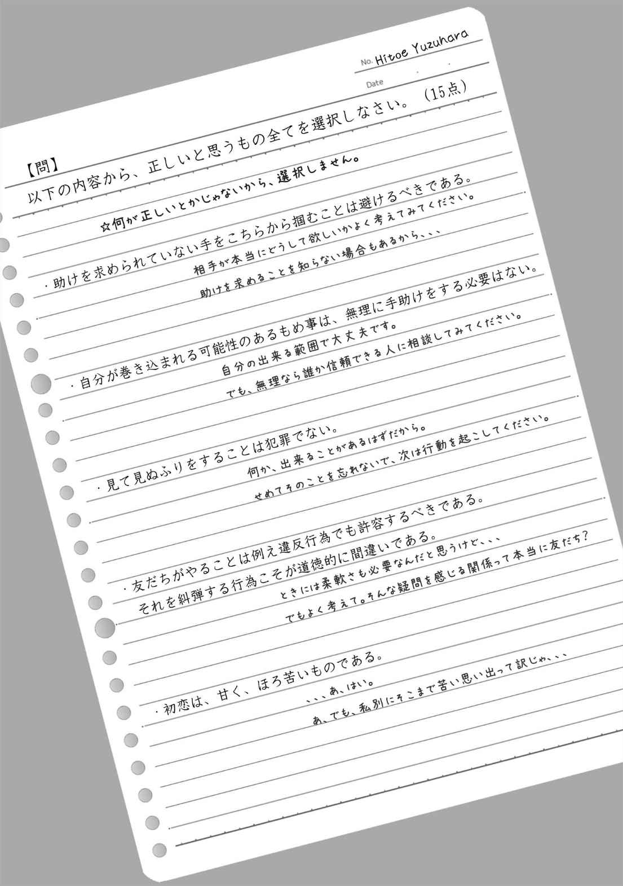
あとがき
お手に取って頂きありがとうございます。時邑亜希です。『ＶＩＶＩＤ それはまるで恋の様に私を犯し蝕んだ』如何でしたでしょうか。
本作はドロドロとした会話劇を......と書き出したのですが、色んなことがあってこんな形になりました。......あれ？
前作、『金色』に続いて、今回も百合と伝綺です（今回は新伝綺ではなく、伝綺かなと）。ベタ甘ハチミツ練乳がけ、というわけではありませんが、女の子同士のカップリングなので一応百合ジャンルと記載しています。伝綺については、今回はお話のエッセンスにという立ち位置です。ジャンル『偏愛伝綺小説』としてはこんな感じがよいバランスかなって思っておりますが、如何でしょうか？。 まぁ、例によって青春成長グラフティです！
ちょっとだけ真面目に内容について語ると、（飛ばして読んでもＯＫですよ）初期プロットでは「周囲に合わせられない子」を書きたかったというのがあります。紆余曲折、元のテーマそっちのけで色々書いてしまいましたが、一依は子どもの頃誰もが経験する周囲とのギャップとか、違和感とかそういうのを誇大介錯して、強めきってしまった感じの人格です。
文中、何度か発達障害という単語を使用していますが一応弁解させて頂くと、軽度なものという意味合いで使用しています。
私が小さな頃はこの単語の意味はまだあまり世間には知れ渡っていなくて、軽度な違和感は、単に我が儘な子だと一蹴されていたのだと今にして感じています。
私は末っ子ですので、単に自分勝手で我が儘なだけだったのかも知れません。それでも、納得できない行動でも周囲と一緒のことをしなければ仲間はずれになる。虐められるかもしれない。そういった現実に無意識に怯えていた様に感じます。今にして思えば、好き勝手やってみれば良かったのにねって。
幸いにも優しい友人が多かったことと、割と聡い子どもだったので色々我慢して、虐められない様に、最低限仲間外れにされない様に頑張っていた記憶があります。中学卒業頃、本を大量に読み始めるとちょっとそれも変わってきてしまうのですが......まぁ、そんな感じです。
今は、楽しく生きております。大人って個人行動が許されるから素敵ですよね！（違う）
大人になるにつれて行動範囲が広がり、自分と気が合う者同士で仲間になれるから、というのが強いのかも知れませんね。子どもにはそういった選択肢がありませんから。そういえば、遠方地区の友だちが多い子どもだった様にも思います。
一依も、大人になって、広い世界で色んな人に会えば、何かを我慢しなくてものびのび生きていける場所が見つかるんじゃ無いかな、なんて。
まぁ、大人になったらなったで面倒な人付き合いも増えるんですけどねー。
さて、よく分からない話はこのくらいで。
今回、イラストは藤本ようさんにお願いして描いて頂きました。女の子のセンシティブな面をイラストで補完してもらうにはもう藤本さんしかいねぇ！ ってな感じで。あざみのキャラデザは脳内覗かれたかなってくらいにそのままで恐れおののきました。
そして、一依は藤本さんを通して化けました。挿し絵代わりに利用させて頂いたラフの一依ちゃんはもう見まして？ 全身ラフのあの不満そうな顔とか、ホントに可愛い!! （病気） カラーでお見せできないことが悔しくてなりません。
おかげさまで、本編内容も私の脳内補正がかかり、当初よりちょっと甘えたなキャラになったかなと。でも結果それが大成功だったと感じています。お話作りの素晴らしいインスピ頂きました。
藤本さん、本当にありがとうございました！
因みに、作中出てくる日本酒は私の超お勧め品です。文佳人という高知のお酒はホントにやばいので是非飲んでみて下さい。名称も、こうやって文芸を趣味としているヲタクに相応しいクールなモノでお気に入りなのです。
なかなかお店には置いていないので通販がいいかもですね。私は時々おじゃまする京都のお店で頂きました。感動ものです。十四代、醸し人九平次もそちらで。あぁ、日本酒最高！
俺......この原稿の入稿終わったら絶対日本酒飲みに行くんだ......
今年はたくさんイベントに参加することが出来ました。主に関西がメインですが、五月の東京のコミティアに出れたのは良い思い出です。過疎だ過疎だと言われる創作小説ジャンルですが、しぶとく雑草のように生きていきたいものです。さて、来年はどんな一年にしようか？ 今から楽しみです。
それでは、またどこかでお会いできることを願って。
お疲れお疲れ！
2015/12/10
時邑 亜希
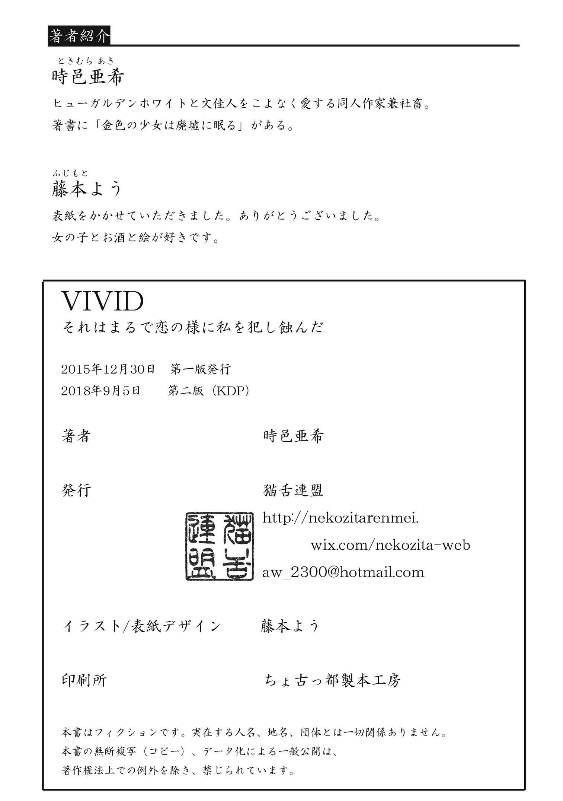
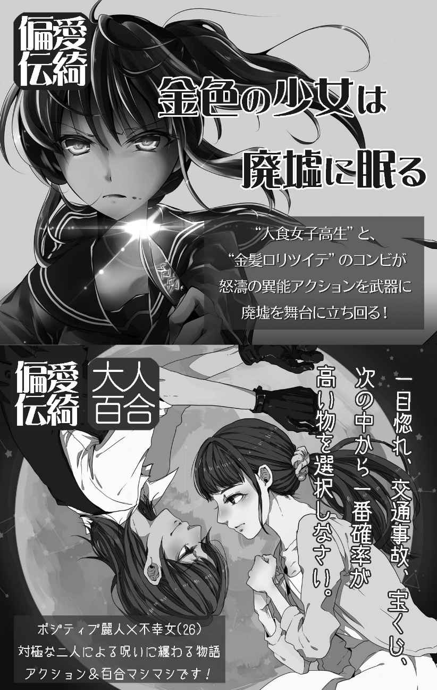
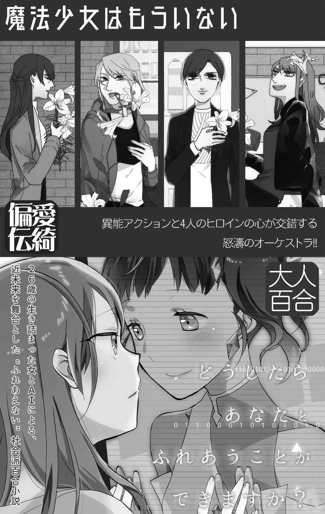